| pon 16.11. | 00:05 | AMC | Hellboy | | Hellboy (2004) | 6.9 | 374.576 | Action, Adventure, Fantasy | 110 | Demon, kojega su odmalena odgajali nacisti, izraste u zaštitnika i borca protiv mračnih sila. | Redatelj: Guillermo del Toro
Scenarij: Guillermo del Toro, Peter Briggs, Mike Mignola
Glumci: Ron Perlman, John Hurt, Selma Blair, Rupert Evans |
| pon 16.11. | 00:25 | CineStar 1 | Leptir | | Papillon (2017) | 7.2 | 97.976 | Adventure, Biography, Crime | 130 | Hey you bastards I'm still here – legendarna je rečenica iz filma Papillon iz 1973. godine. | Redatelj: Michael Noer
Scenarij: Aaron Guzikowski, Henri Charrière, Dalton Trumbo, Lorenzo Semple Jr.
Glumci: Charlie Hunnam, Rami Malek, Christopher Fairbank, Yorick van Wageningen |
| pon 16.11. | 00:25 | CineStar Comedy | Sve O Mojoj Majci | | Todo sobre mi madre (1999) | 7.8 | 111.138 | Comedy, Drama, Romance | 95 | Grčka izreka kaže da samo ona žena čije su oči isprane suzama može jasno vidjeti. Ali to ne vrijedi za Manuelu (Cecillia Roth). | Redatelj: Pedro Almodóvar
Scenarij: Pedro Almodóvar
Glumci: Cecilia Roth, Marisa Paredes, Candela Peña, Antonia San Juan |
| pon 16.11. | 00:35 | STAR Movies | Nesanica | | Insomnia (2002) | 7.2 | 354.298 | Drama, Mystery, Thriller | 150 | Dobitnici Oscara Al Pacino, Robin Williams i Hilary Swank predvode fantastičnu glumačku postavu i pružaju snažne izvedbe u uzbudljivom psihološkom trileru hvaljenog redatelja filma Memento. | Redatelj: Christopher Nolan
Scenarij: Hillary Seitz, Nikolaj Frobenius, Erik Skjoldbjærg
Glumci: Al Pacino, Robin Williams, Hilary Swank, Martin Donovan |
| pon 16.11. | 00:50 | STAR Movies | Nesanica | | Insomnia (2002) | 7.2 | 354.298 | Drama, Mystery, Thriller | 130 | Dobitnici Oscara Al Pacino, Robin Williams i Hilary Swank predvode fantastičnu glumačku postavu i pružaju snažne izvedbe u uzbudljivom psihološkom trileru hvaljenog redatelja filma Memento. | Redatelj: Christopher Nolan
Scenarij: Hillary Seitz, Nikolaj Frobenius, Erik Skjoldbjærg
Glumci: Al Pacino, Robin Williams, Hilary Swank, Martin Donovan |
| pon 16.11. | 00:51 | HRT 3 | Pljačka voza | 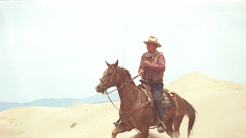 | The Train Robbers (1973) | 6.4 | 7.655 | Action, Adventure, Western | 89 | Lijepa udovica, gospođa Lowe (Ann-Margret) želi pronaći zlato koje je opljačkao njezin pokojni suprug i predati ga vlastima, kako bi sprala ljagu s njegova imena i olakšala odrastanje sinu. | Zemlja: SAD
Redatelj: Burt Kennedy
Scenarij: Burt Kennedy
Glumci: John Wayne, Ann-Margret, Rod Taylor, Ben Johnson |
| pon 16.11. | 02:20 | Viasat Kino | Junfer u četrdesetoj | 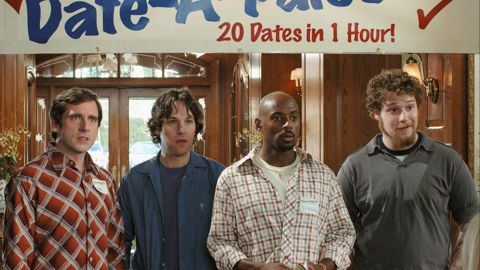 | The 40 Year Old Virgin (2005) | 7.1 | 510.815 | Comedy, Romance | 150 | Prijatelji žele pomoći muškarcu "koji to još nije učinio", no on je pod sve većim pritiskom kada upozna samohranu majku. | Zemlja: SAD
Redatelj: Judd Apatow
Scenarij: Judd Apatow, Steve Carell
Glumci: Steve Carell, Catherine Keener, Paul Rudd, Romany Malco |
| pon 16.11. | 02:35 | CineStar 1 | Labirint laži | | Im Labyrinth des Schweigens (2014) | 7.3 | 14.778 | Drama, History | 131 | Frankfurt 1958. nitko se ne želi sjećati vremena nacističkog režima. | Zemlja: Njemačka
Redatelj: Giulio Ricciarelli
Scenarij: Elisabeth Burghardt, Giulio Ricciarelli, Amelie Syberberg
Glumci: Alexander Fehling, André Szymanski, Friederike Becht, Johannes Krisch |
| pon 16.11. | 02:35 | CineStar Action | To dolazi | 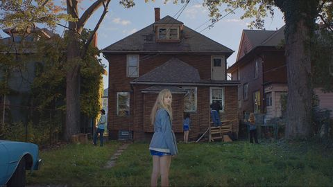 | It Follows (2014) | 6.8 | 308.107 | Horror, Mystery, Thriller | 111 | Jedan od najboljih horor filmova posljednjih godina! Nakon seksa sa svojim dečkom 19-godišnja Jay počinje proživljavati čudne vizije i neprestano ima osjećaj kako je netko – ili nešto – prati. | Zemlja: SAD
Redatelj: David Robert Mitchell
Scenarij: David Robert Mitchell
Glumci: Maika Monroe, Keir Gilchrist, Jake Weary, Olivia Luccardi |
| pon 16.11. | 03:00 | STAR Movies | Sjevernjak | 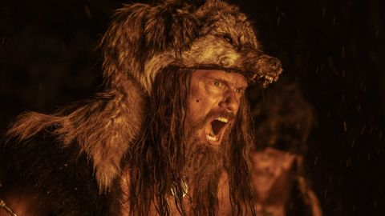 | The Northman (2022) | 7.0 | 309.231 | Action, Adventure, Drama | 135 | Ep pun akcije koji prati mladog vikinškog princa u potrazi za osvetom za očevo ubojstvo. | Zemlja: Ujedinjeno Kraljevstvo
Redatelj: Robert Eggers
Scenarij: Sjón, Robert Eggers
Glumci: Alexander Skarsgård, Nicole Kidman, Claes Bang, Anya Taylor-Joy |
| pon 16.11. | 03:05 | STAR Movies | Sjevernjak | | The Northman (2022) | 7.0 | 309.231 | Action, Adventure, Drama | 130 | Ep pun akcije koji prati mladog vikinškog princa u potrazi za osvetom za očevo ubojstvo. | Redatelj: Robert Eggers
Scenarij: Sjón, Robert Eggers
Glumci: Alexander Skarsgård, Nicole Kidman, Claes Bang, Anya Taylor-Joy |
| pon 16.11. | 04:00 | Kino TV | U ime zemlje | | Au nom de la terre (2019) | 6.8 | 1.662 | Biography, Drama | 121 | Pierre je 25-gosišnjak koji se vraća iz Wyominga svojoj zaručnici i preuzima obiteljsku farmu. Dvadesetak godina kasnije farma se proširila, a time i obitelj. | Zemlja: Francuska
Redatelj: Édouard Bergeon
Scenarij: Édouard Bergeon, Emmanuel Courcol, Bruno Ulmer
Glumci: Guillaume Canet, Veerle Baetens, Anthony Bajon, Rufus |
| pon 16.11. | 04:50 | Viasat Kino | Sajam taštine |  | Vanity Fair (2004) | 6.2 | 24.415 | Drama | 175 | Odrastajući u siromaštvu u Londonu početkom 19. stoljeća, mlada djevojka koristi svu svoju duhovitost, lukavstvo i seksualnost da se uzdigne i osvoji englesko društvo. | Zemlja: SAD
Redatelj: Mira Nair
Scenarij: Matthew Faulk, Mark Skeet, Julian Fellowes, William Makepeace Thackeray
Glumci: Reese Witherspoon, Romola Garai, Bob Hoskins, Jim Broadbent |
| pon 16.11. | 05:10 | RTL | San snova | | Cvrcak i mravica (2023) | 6.2 | 442 | Adventure, Animation, Comedy | 70 | Ne znajući na što je točno obavezuje posao u državnoj firmi, Maja poduzme korake koje ne bi smjela. Alen i dalje ne odustaje od žestokih treninga, što dovodi u pitanje budućnost Croatije. | Zemlja: Hrvatska
Redatelj: Luka Rukavina, Kristijan Milić, Dino Krpan
Scenarij: Luka Rukavina, Rona Zulj
Glumci: Marko Braić, Tea Šimić, Emir Hadžihafizbegović, Ivana Krizmanić |
| pon 16.11. | 06:25 | AMC | Dvije sestre za kralja | 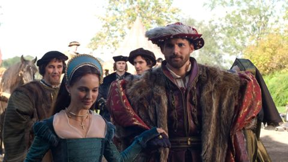 | The Other Boleyn Girl (2008) | 6.7 | 128.601 | Biography, Drama, History | 105 | Anne i Mary Boleyn sestre su koje postaju suparnice zbog kralja Henrika VIII. | Zemlja: Ujedinjeno Kraljevstvo
Redatelj: Justin Chadwick
Scenarij: Peter Morgan, Philippa Gregory
Glumci: Natalie Portman, Scarlett Johansson, Eric Bana, Jim Sturgess |
| pon 16.11. | 06:30 | STAR Movies | Kuća na jezeru | | The Lake House (2006) | 6.8 | 167.610 | Drama, Fantasy, Romance | 115 | Sandra Bullock i Keanu Reeves ponovno se susreću u romantičnoj priči o ljubavi koja nadilazi vrijeme. | Zemlja: SAD
Redatelj: Alejandro Agresti
Scenarij: David Auburn, Eun-Jeong Kim, Ji Na Yeo
Glumci: Keanu Reeves, Sandra Bullock, Christopher Plummer, Ebon Moss-Bachrach |
| pon 16.11. | 08:10 | AMC | Zmija u orlovoj sjeni | 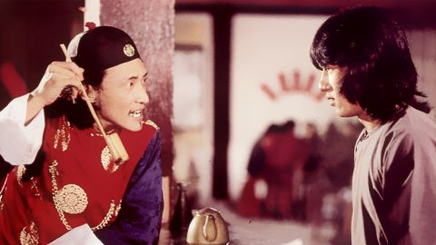 | Se ying diu sau (1978) ? | 7.3 | 14.424 | Action, Comedy | 95 | Siročetu, koji je odrastao u školi kung fua gdje ga tretiraju kao potrčka i metu za vježbanje učenika, život se promijeni nakon što pomogne putujućem prosjaku. | Zemlja: Hong Kong
Redatelj: Yuen Woo-Ping
Scenarij: Chi Yuan Hsi, Huo An Hsi, Lung Hsiao, See-Yuen Ng
Glumci: Jackie Chan, Siu Tin Yuen, Dean Shek, Roy Horan |
| pon 16.11. | 08:25 | STAR Movies | Batman se vraća | 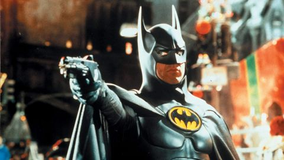 | Batman Returns (1992) | 7.1 | 354.744 | Action, Crime, Fantasy | 155 | Kada se nakazni pingvin i korumpirani poslovni čovjek udruže u namjeri da preuzmu grad Gotham, samo ih jedna osoba može zaustaviti, a to je Batman. Tu je i žena mačka koja ima svoj vlastiti plan. | Zemlja: SAD
Redatelj: Tim Burton
Scenarij: Bob Kane, Daniel Waters, Sam Hamm
Glumci: Michael Keaton, Danny DeVito, Michelle Pfeiffer, Christopher Walken |
| pon 16.11. | 09:20 | CineStar Action | Nerve | | Nerve (2016) | 6.5 | 149.326 | Adventure, Crime, Drama | 110 | Film snimljen prema knjizi Jeanne Ryan. Usudi se zaigrati! Marljiva srednjoškolka, Vee Delmonico, živi prema pravilima i rijetko se usudi napraviti nešto što nije planirala ili smatra neprihvatljivim. | Zemlja: SAD
Redatelj: Henry Joost, Ariel Schulman
Scenarij: Jessica Sharzer, Jeanne Ryan
Glumci: Emma Roberts, Dave Franco, Juliette Lewis, Emily Meade |
| pon 16.11. | 09:45 | AMC | Prime | 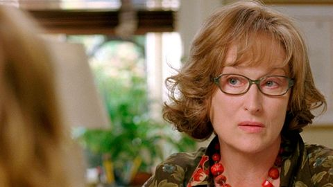 | Prime (2005) | 6.2 | 43.900 | Comedy, Drama, Romance | 100 | Rafi Gardet, uspješna njujorška fotografkinja, nakon razvoda započinje psihoterapiju kod dr. Lise Metzger. | Zemlja: SAD
Redatelj: Ben Younger
Scenarij: Ben Younger
Glumci: Meryl Streep, Bryan Greenberg, Uma Thurman, Jon Abrahams |
| pon 16.11. | 10:10 | CineStar 1 | Moja grčka avantura | 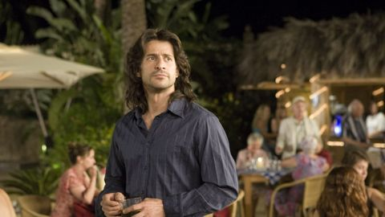 | My Life in Ruins (2009) | 6.0 | 21.713 | Comedy, Romance | 110 | Nakon što dobije otkaz na fakultetu, Georgia je primorana postati turistička voditeljica. Vođenje tura po Grčkoj usmjerit će njezin život u neočekivanom pravcu. | Zemlja: Španjolska
Redatelj: Donald Petrie
Scenarij: Mike Reiss
Glumci: Nia Vardalos, Richard Dreyfuss, Alexis Georgoulis, Alistair McGowan |
| pon 16.11. | 10:30 | CineStar Comedy | Gospodarica orlova | 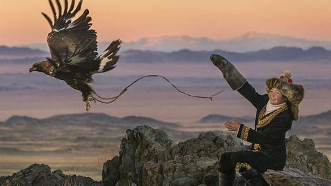 | The Eagle Huntress (2016) | 7.5 | 4.459 | Adventure, Documentary, Sport | 90 | Film prati trinaestogodišnju Aisholpan koja trenira da postane prva gospodarica orlova u dvanaest generacija svoje kazahske obitelji te se uzdiže na sam vrh tradicije koja se već stoljećima... | Zemlja: Ujedinjeno Kraljevstvo
Redatelj: Otto Bell
Glumci: Daisy Ridley, Aisholpan Nurgaiv, Rys Nurgaiv |
| pon 16.11. | 10:35 | CineStar Fantasy | Zabranjena ljubav |  | Upside Down (2012) | 6.3 | 76.301 | Drama, Romance, Sci-Fi | 115 | Sve otkad su se Adam (Jim Sturgess) i Eden (Kirsten Dunst) zaljubili, njihov odnos ima astronomski male izglede. | Zemlja: Francuska
Redatelj: Juan Solanas
Scenarij: Juan Solanas, Santiago Amigorena, Pierre Magny
Glumci: Jim Sturgess, Kirsten Dunst, Timothy Spall, Blu Mankuma |
| pon 16.11. | 11:00 | STAR Movies | Karate kid — nastavak | 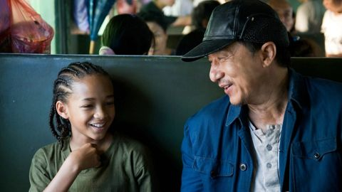 | The Karate Kid (2010) | 6.3 | 231.425 | Action, Drama, Family | 180 | Maltretirani mladić se uz pomoć učitelja borilačkih vještina počne zauzimati za sebe. | Zemlja: SAD
Redatelj: Harald Zwart
Scenarij: Christopher Murphey, Robert Mark Kamen
Glumci: Jaden Smith, Jackie Chan, Taraji P. Henson, Wenwen Han |
| pon 16.11. | 11:10 | CineStar Action | Špijunske igre | 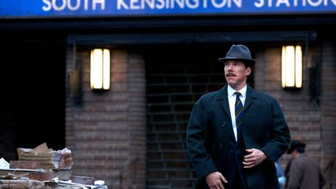 | The Courier (2020) | 7.2 | 83.299 | Drama, History, Mystery | 125 | Greville Wynne pristaje sudjelovati u visokorizičnoj međunarodnoj operaciji, ne sluteći u što se zapravo upušta. | Zemlja: Ujedinjeno Kraljevstvo
Redatelj: Dominic Cooke
Scenarij: Tom O'Connor
Glumci: Benedict Cumberbatch, Vladimir Chuprikov, Merab Ninidze, Rachel Brosnahan |
| pon 16.11. | 11:25 | AMC | Sapphire Blue | 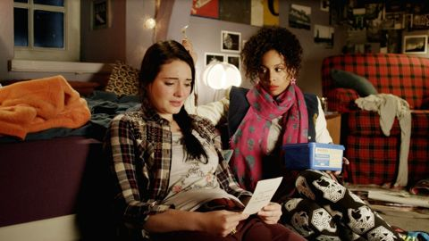 | Saphirblau (2014) | 6.2 | 5.080 | Action, Adventure, Drama | 110 | Gwen je upravo otkrila da je posljednja članica tajnog Kruga dvanaestorice koji putuju kroz vrijeme. | Zemlja: Njemačka
Redatelj: Felix Fuchssteiner, Katharina Schöde, Lev L. Spiro
Scenarij: Katharina Schöde, Kerstin Gier
Glumci: Maria Ehrich, Jannis Niewöhner, Rufus Beck, Kostja Ullmann |
| pon 16.11. | 12:10 | Viasat Kino | Željezna dama | 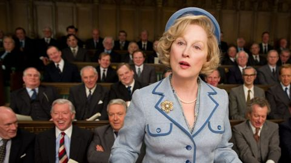 | The Iron Lady (2011) | 6.4 | 117.726 | Biography, Drama | 145 | Starija Margaret Thatcher zamišlja da razgovara sa svojim nedavno preminulim suprugom pokušavajući se pomiriti s njegovom smrću. | Zemlja: Ujedinjeno Kraljevstvo
Redatelj: Phyllida Lloyd
Scenarij: Abi Morgan
Glumci: Meryl Streep, Jim Broadbent, Olivia Colman, Richard E. Grant |
| pon 16.11. | 12:30 | CineStar 2 | Ponoćno sunce |  | Midnight Sun (2018) | 6.6 | 40.581 | Drama, Romance | 100 | Epska romantična drama, govori o 17-godišnjoj djevojci Katie (Bella Thorne) koja, zbog rijetke bolesti, ne smije biti izložena suncu. | Zemlja: SAD
Redatelj: Scott Speer
Scenarij: Eric Kirsten
Glumci: Bella Thorne, Patrick Schwarzenegger, Rob Riggle, Quinn Shephard |
| pon 16.11. | 12:30 | CineStar Fantasy | Belle: Zmaj i pjegava princeza |  | Ryû to sobakasu no hime (2021) | 7.0 | 21.160 | Adventure, Animation, Drama | 130 | Suzu je sramežljiva srednjoškolka koja živi u ruralnom selu. Godinama je samo sjena same sebe. | Zemlja: Japan
Redatelj: Mamoru Hosoda
Scenarij: Mamoru Hosoda
Glumci: Kaho Nakamura, Ryô Narita, Shôta Sometani, Tina Tamashiro |
| pon 16.11. | 13:15 | AMC | Den u realnom svijetu | | Dan in Real Life (2007) | 6.8 | 112.138 | Comedy, Drama, Romance | 90 | Udovac Dan poznati je kolumnist koji na tradicionalnom, obiteljskom okupljanju upoznaje Marie... | Zemlja: SAD
Redatelj: Peter Hedges
Scenarij: Pierce Gardner, Peter Hedges
Glumci: Steve Carell, Juliette Binoche, Dane Cook, Alison Pill |
| pon 16.11. | 14:00 | CineStar 1 | Madame | 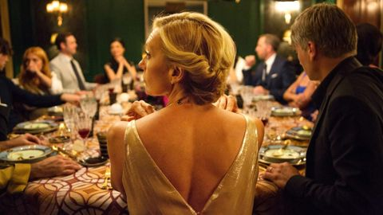 | Madame (2017) | 6.1 | 9.408 | Comedy, Drama, Romance | 110 | Madame je francuska komedija nastala prema priči Amande Sthers. Kako bi poboljšali svoj brak, bogati američki par Anne i Bob presele se u ljetnikovac u romantičnom Parizu. | Zemlja: Francuska
Redatelj: Amanda Sthers
Scenarij: Amanda Sthers, Matthew Robbins
Glumci: Toni Collette, Harvey Keitel, Rossy de Palma, Michael Smiley |
| pon 16.11. | 14:00 | STAR Movies | 10 života | | 10 Lives (2024) | 6.0 | 2.734 | Animation, Comedy, Family | 110 | Razmaženi mačak uzima zdravo za gotovo svoju sreću nakon što ga spasi Rose, nježna i strastvena studentica. | Zemlja: Ujedinjeno Kraljevstvo
Redatelj: Christopher Jenkins
Scenarij: Christopher Jenkins, Karen Wengrod, Ken Cinnamon, Ken Cinnamon
Glumci: Mo Gilligan, Simone Ashley, Sophie Okonedo, Zayn Malik |
| pon 16.11. | 14:02 | HRT 3 | Zeleni planet | 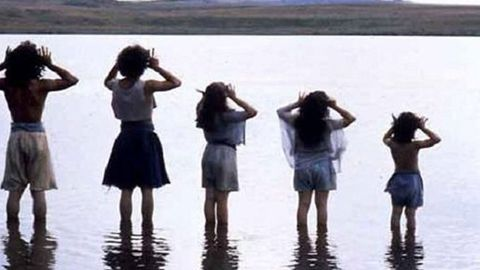 | La belle verte (1996) | 7.1 | 6.380 | Comedy, Sci-Fi | 92 | Na intergalaktičkom saboru dobronamjerna izvanzemaljka prihvaća zadatak da ode na Zemlju, planet koji su u njezinu svijetu svi otpisali kao nepopravljiv, ne bi li Zemljanima prenijela poruku sloge... | Zemlja: Francuska
Redatelj: Coline Serreau
Scenarij: Coline Serreau
Glumci: Coline Serreau, Vincent Lindon, James Thierrée, Samuel Tasinaje |
| pon 16.11. | 14:10 | CineStar 2 | Kursk: Prokletstvo dubina |  | Kursk (2018) | 6.6 | 24.202 | Action, Adventure, Drama | 125 | Tijekom vojne vježbe u kolovozu 2000. godine ruska nuklearna podmornica Kursk doživljava nesreću koja prouzroči potonuće. | Zemlja: Francuska
Redatelj: Thomas Vinterberg
Scenarij: Robert Moore, Robert Rodat
Glumci: Matthias Schoenaerts, Léa Seydoux, Colin Firth, Max von Sydow |
| pon 16.11. | 14:10 | CineStar Comedy | Tri tigra |  | The Paper Tigers (2020) | 6.3 | 5.955 | Action, Comedy | 115 | Tijekom 1990-ih, tri tinejdžera prolaze brutalni kung fu trening pod stalnim nadzorom svog učitelja. | Zemlja: SAD
Redatelj: Quoc Bao Tran
Scenarij: Quoc Bao Tran
Glumci: Ron Yuan, Yuji Okumoto, Matthew Page, Andy Le |
| pon 16.11. | 14:40 | CineStar Fantasy | Slomljena krila | 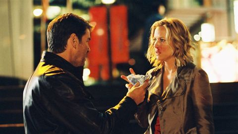 | Butterfly on a Wheel (2007) | 6.6 | 35.455 | Crime, Drama, Thriller | 105 | Neil (Gerard Butler) i Abby Randall (Maria Bello) sretno su oženjeni par. Neil je ambiciozan marketinški stručnjak, a Abby kućanica koja odgaja njihovu petogodišnju kćer Sophie. | Zemlja: Ujedinjeno Kraljevstvo
Redatelj: Mike Barker
Scenarij: William Morrissey
Glumci: Pierce Brosnan, Maria Bello, Gerard Butler, Claudette Mink |
| pon 16.11. | 14:45 | AMC | Tajna podmornice K-19 | | K-19: The Widowmaker (2002) | 6.7 | 73.312 | Drama, History, Thriller | 130 | Tajna podmornice K-19. Na vrhuncu Hladnog rata kapetan Aleksij Vostrikov preuzima zapovjedništvo nad nuklearnom podmornicom K-19. Tijekom putovanja dolazi do ozbiljnog kvara zbog kojeg će Vostrikovljevo iskustvo i... | Zemlja: Ujedinjeno Kraljevstvo
Redatelj: Kathryn Bigelow
Scenarij: Louis Nowra, Christopher Kyle
Glumci: Harrison Ford, Liam Neeson, Peter Sarsgaard, Christian Camargo |
| pon 16.11. | 15:50 | CineStar 1 | Colossal | 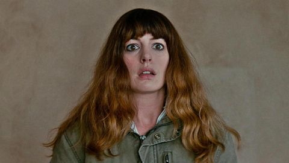 | Colossal (2016) | 6.2 | 76.240 | Comedy, Drama, Fantasy | 125 | Gloria je nezaposlena partijanerica koja je prisiljena napustiti svoj život u New Yorku i vratiti se u rodni grad nakon štu ju dečko izbaci stana. | Zemlja: Južna Koreja
Redatelj: Nacho Vigalondo
Scenarij: Nacho Vigalondo
Glumci: Anne Hathaway, Jason Sudeikis, Austin Stowell, Tim Blake Nelson |
| pon 16.11. | 16:00 | Kino TV | Kao zvijeri | 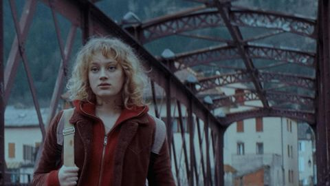 | Seules les bêtes (2019) | 7.1 | 9.586 | Crime, Drama, Mystery | 120 | Nakon misterioznog nestanka žene tijekom snježne oluje, petero stranaca u udaljenom planinskom gradiću uhvaćeno je u misteriju koja se proteže kroz niz kontinenata i koju nitko od njih nije očekivao…. | Zemlja: Francuska
Redatelj: Dominik Moll
Scenarij: Colin Niel, Dominik Moll, Gilles Marchand
Glumci: Denis Ménochet, Laure Calamy, Damien Bonnard, Nadia Tereszkiewicz |
| pon 16.11. | 16:40 | Viasat Kino | Scott Pilgrim protiv svijeta | | Scott Pilgrim vs. the World (2010) | 7.5 | 503.023 | Action, Comedy, Fantasy | 150 | Da bi osvojio srce svoje nove djevojke, Scott Pilgrim mora pobijediti njezinih sedam bivših momaka. | Zemlja: SAD
Redatelj: Edgar Wright
Scenarij: Michael Bacall, Edgar Wright, Bryan Lee O'Malley
Glumci: Michael Cera, Mary Elizabeth Winstead, Kieran Culkin, Chris Evans |
| pon 16.11. | 16:55 | AMC | Šašavi robijaši | 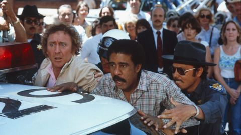 | Stir Crazy (1980) | 6.7 | 33.102 | Comedy, Crime | 105 | Pogrešno optuženih dvoje najboljih prijatelja bit će poslani u zatvor zbog zločina koji nisu počinili. Međutim, nijedna zatvorska ćelija nije ih mogla držati zaključanima. | Zemlja: SAD
Redatelj: Sidney Poitier
Scenarij: Bruce Jay Friedman, Charles Blackwell
Glumci: Gene Wilder, Richard Pryor, Barry Corbin, Craig T. Nelson |
| pon 16.11. | 17:45 | STAR Movies | Nešto poput ljubavi | 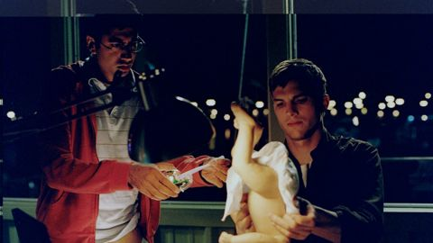 | A Lot Like Love (2005) | 6.6 | 74.071 | Comedy, Drama, Romance | 140 | Na letu iz Los Angelesa za New York "dobar dečko" Oliver Martin upoznaje "zločestu curu" Emily Friehl. Tijekom sljedećih sedam godina povremeno se susreću, a na koncu njihova se veza razvija u ljubav. | Zemlja: SAD
Redatelj: Nigel Cole
Scenarij: Colin Patrick Lynch
Glumci: Ashton Kutcher, Amanda Peet, Kathryn Hahn, Kal Penn |
| pon 16.11. | 17:55 | CineStar 1 | Operacija Mljeveno meso | | Operation Mincemeat (2021) | 6.6 | 45.274 | Drama, War | 140 | Ratne 1943. godine nevjerojatni plan Britanaca upropastio je vojnu taktiku nacista. | Zemlja: Ujedinjeno Kraljevstvo
Redatelj: John Madden
Scenarij: Michelle Ashford, Ben Macintyre
Glumci: Colin Firth, Matthew Macfadyen, Kelly MacDonald, Penelope Wilton |
| pon 16.11. | 17:55 | CineStar Action | Doušnik | 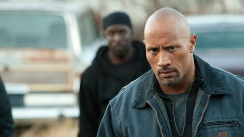 | Snitch (2013) | 6.4 | 96.755 | Action, Drama, Thriller | 125 | Snitch. Dwayne Johnson u eksplozivnoj akciji kao čovjek odlučan baciti meksički narkokartel na koljena. | Zemlja: SAD
Redatelj: Ric Roman Waugh
Scenarij: Justin Haythe, Ric Roman Waugh
Glumci: Dwayne Johnson, Barry Pepper, Jon Bernthal, Susan Sarandon |
| pon 16.11. | 18:00 | CineStar 2 | Mud | 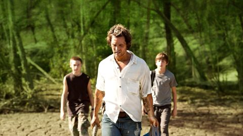 | Mud (2012) | 7.3 | 202.570 | Adventure, Drama | 140 | Dva mlada dečka pronađu bjegunca koji se skriva na otoku u Mississippiju i sklope pakt da će mu pomoći u ponovnom ujedinjenju sa svojom ljubavi i u bijegu. | Zemlja: SAD
Redatelj: Jeff Nichols
Scenarij: Jeff Nichols
Glumci: Matthew McConaughey, Reese Witherspoon, Tye Sheridan, Jacob Lofland |
| pon 16.11. | 18:00 | Kino TV | Renovatorica detektivka: Konkretni dokaz | | Concrete Evidence: A Fixer Upper Mystery (2017) | 6.7 | 1.325 | Crime, Drama, Mystery | 135 | Shannon započinje obnovu stare kuće koju je nedavno kupio njezin dečko Mac. Tijekom procesa Shannon otkrije kostur djevojke u zidovima. Skupa s Macom upušta se u istragu njezine smrti. | Zemlja: SAD
Redatelj: Mark Jean
Scenarij: Kate Carlisle, Teena Booth
Glumci: Jewel Kilcher, Colin Ferguson, Erin Karpluk, Ron Lea |
| pon 16.11. | 18:05 | CineStar Fantasy | Različita | | Divergent (2014) | 6.6 | 525.229 | Action, Adventure, Drama | 145 | Film je nastao na temelju bestselera Veronice Roth i smješten je u svijet u kojem su ljudi podijeljeni u pet skupina, s obzirom na prevladavajuće osobine svojih ličnosti. | Zemlja: SAD
Redatelj: Neil Burger
Scenarij: Evan Daugherty, Vanessa Taylor, Veronica Roth
Glumci: Shailene Woodley, Theo James, Kate Winslet, Ashley Judd |
| pon 16.11. | 18:40 | AMC | Brzi i mrtvi | 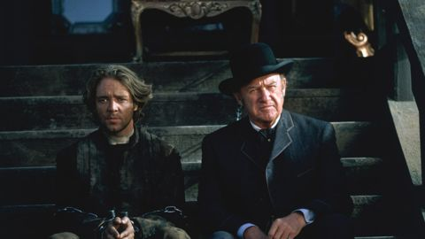 | The Quick and the Dead (1995) | 6.5 | 115.577 | Action, Drama, Romance | 95 | U malom gradu gdje pravdu određuje sila, okupljaju se najbolji revolveraši kako bi sudjelovali u opasnom natjecanju. | Zemlja: SAD
Redatelj: Sam Raimi
Scenarij: Simon Moore
Glumci: Sharon Stone, Gene Hackman, Russell Crowe, Leonardo DiCaprio |
| pon 16.11. | 19:10 | Viasat Kino | Djevojka s bisernom naušnicom | 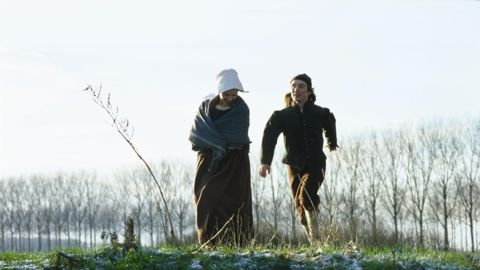 | Girl with a Pearl Earring (2003) | 6.9 | 85.099 | Biography, Drama, Romance | 110 | Mlada sluškinja koja radi u kući slikara Johannesa Vermeera, postaje model za jedno od njegovih najpoznatijih djela. | Zemlja: Ujedinjeno Kraljevstvo
Redatelj: Peter Webber
Scenarij: Tracy Chevalier, Olivia Hetreed
Glumci: Scarlett Johansson, Colin Firth, Tom Wilkinson, Judy Parfitt |
| pon 16.11. | 20:00 | CineStar Action | Plaćenici | 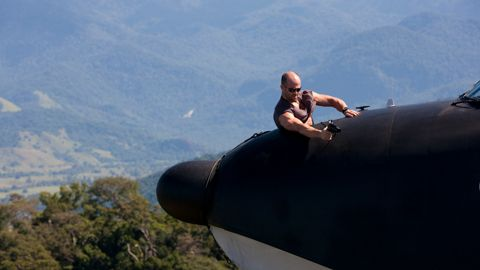 | The Expendables (2010) | 6.4 | 384.187 | Action, Adventure, Thriller | 115 | Ovo je žestoki akcijski triler o grupi plaćenika koji su unajmljeni da se ubace u zemlju Južne Amerike i zbace njihova nemilosrdnoga diktatora. | Zemlja: SAD
Redatelj: Sylvester Stallone
Scenarij: Dave Callaham, Sylvester Stallone
Glumci: Sylvester Stallone, Jason Statham, Jet Li, Dolph Lundgren |
| pon 16.11. | 20:05 | STAR Movies | Novi svijet | 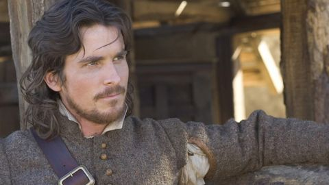 | The New World (2005) | 6.7 | 94.505 | Biography, Drama, History | 170 | Priča o engleskom istraživanju Virginije, te o svijetu koji se mijenja i Pocahontasinim ljubavima. | Zemlja: SAD
Redatelj: Terrence Malick
Scenarij: Terrence Malick
Glumci: Colin Farrell, Q'orianka Kilcher, Christopher Plummer, Christian Bale |
| pon 16.11. | 20:15 | CineStar 1 | Malavita | 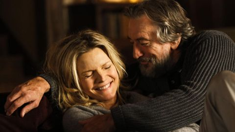 | The Family (2013) | 6.3 | 129.487 | Comedy, Crime, Thriller | 125 | Šef mafije i njegova obitelj premješteni su u uspavani francuski gradić u okviru programa zaštite svjedoka zbog razotkrivanja mafije. | Zemlja: SAD
Redatelj: Luc Besson
Scenarij: Luc Besson, Michael Caleo, Tonino Benacquista
Glumci: Robert De Niro, Michelle Pfeiffer, Tommy Lee Jones, Dianna Agron |
| pon 16.11. | 20:15 | Kino TV | Policijski, pridjev | 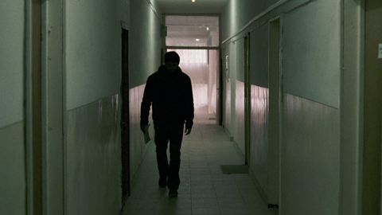 | Politist, adjectiv (2009) | 7.0 | 5.581 | Crime, Drama | 115 | Cristi je policajac koji odbija uhititi mladića zbog nuđenja hašiša dvojici svojih školskih kolega. "Nuđenje" je, naime, kažnjivo zakonom. | Zemlja: Rumunija
Redatelj: Corneliu Porumboiu
Scenarij: Corneliu Porumboiu
Glumci: Dragoş Bucur, Vlad Ivanov, Ion Stoica, Irina Saulescu |
| pon 16.11. | 21:00 | Viasat Kino | Mančester na moru | 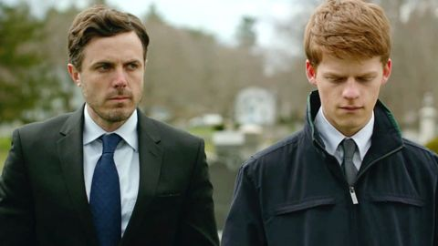 | Manchester by the Sea (2016) | 7.8 | 366.342 | Drama | 185 | Depresivnog ujaka zamole da brine o nećaku tinejdžeru nakon što mu je otac preminuo. | Zemlja: SAD
Redatelj: Kenneth Lonergan
Scenarij: Kenneth Lonergan
Glumci: Casey Affleck, Michelle Williams, Kyle Chandler, Lucas Hedges |
| pon 16.11. | 21:00 | CineStar Comedy | Comic Sans | 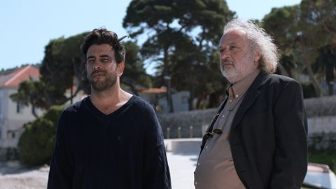 | Comic Sans (2018) | 6.9 | 1.392 | Comedy, Drama, Romance | 105 | Alan, Zagrepčanin viških korijena može se pohvaliti izuzetno uspješnom karijerom grafičkog dizajnera, ali se baš ne može pohvaliti odnosima sa svojim bivšim djevojkama niti odnosom sa svojim ocem,... | Zemlja: Hrvatska
Redatelj: Nevio Marasovic
Scenarij: Nevio Marasovic, Rakan Rushaidat, Janko Popovic Volaric
Glumci: Janko Popović Volarić, Zlatko Burić, Nataša Janjić, Miloš Timotijević |
| pon 16.11. | 21:10 | HRT 2 | Veliki napad | 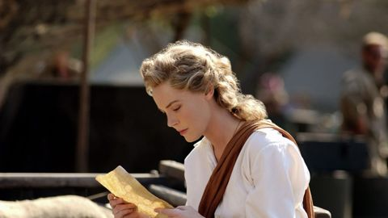 | The Great Raid (2005) | 6.6 | 25.447 | Action, Drama, War | 139 | Godina je 1945. Američka je vojska pritisnula japanske trupe na Filipinima gdje se nalazi popriličan broj ratnih zarobljenika. | Zemlja: Australija
Redatelj: John Dahl
Scenarij: William B. Breuer, Hampton Sides, Carlo Bernard, Doug Miro
Glumci: James Franco, Benjamin Bratt, Max Martini, Robert Mammone |
| pon 16.11. | 21:55 | CineStar Action | Plaćenici 2 | | The Expendables 2 (2012) | 6.6 | 337.450 | Action, Adventure, Thriller | 115 | Plaćenici se vraćaju i ovaj put je osobno... | Zemlja: SAD
Redatelj: Simon West
Scenarij: Richard Wenk, Sylvester Stallone, Ken Kaufman, David Agosto
Glumci: Sylvester Stallone, Jason Statham, Jet Li, Arnold Schwarzenegger |
| pon 16.11. | 22:05 | CineStar 2 | Dobri dileri iz Dallasa | 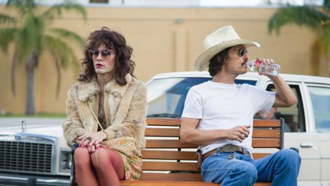 | Dallas Buyers Club (2013) | 7.9 | 554.966 | Biography, Drama | 125 | Nesavršeni čovjek bori se za opstanak u nesigurna vremena u Americi. Film je nadahnut stvarnim događajima, priča je to Rona Woodroofa o snazi. | Zemlja: SAD
Redatelj: Jean-Marc Vallée
Scenarij: Craig Borten, Melisa Wallack
Glumci: Matthew McConaughey, Jennifer Garner, Jared Leto, Denis O'Hare |
| pon 16.11. | 22:10 | HRT 3 | Filmovi P.P. Pasolinija: Accattone | 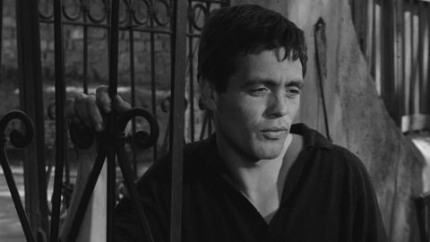 | Accattone (1961) | 7.6 | 11.446 | Drama | 112 | Radnja prati Vittorija Cataldija, zvanog Accattone, besposličara i svodnika koji preživljava iskorištavajući prostitutku Maddalenu. | Zemlja: Italija
Redatelj: Pier Paolo Pasolini
Scenarij: Pier Paolo Pasolini, Sergio Citti
Glumci: Franco Citti, Silvana Corsini, Franca Pasut, Paola Guidiová |
| pon 16.11. | 22:10 | Kino TV | Okus osvete | | Journal 64 (2018) | 7.4 | 22.787 | Crime, Mystery, Thriller | 115 | Dvojica radnika slučajno otkriju uznemirujući prizor u starom stanu u Copenhagenu: skrivena iza lažnog zida nalaze se tri mumificirana leša postavljena u sjedeći položaj za stolom uz još jedno... | Zemlja: Danska
Redatelj: Christoffer Boe
Scenarij: Jussi Adler-Olsen, Bo Hr. Hansen, Mikkel Nørgaard, Nikolaj Arcel
Glumci: Nikolaj Lie Kaas, Fares Fares, Johanne Louise Schmidt, Fanny Leander Bornedal |
| pon 16.11. | 22:55 | STAR Movies | Elizijum | 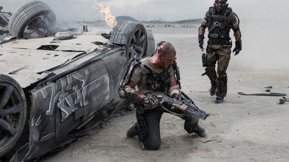 | Elysium (2013) | 6.6 | 496.967 | Action, Drama, Sci-Fi | 130 | U dalekoj budućnosti vrlo bogati žive na luksuznoj svemirskoj stanici, a ostali su prisiljeni živjeti na prenaseljenoj Zemlji. | Zemlja: SAD
Redatelj: Neill Blomkamp
Scenarij: Neill Blomkamp
Glumci: Matt Damon, Jodie Foster, Sharlto Copley, Alice Braga |
| pon 16.11. | 23:50 | CineStar Action | Dheepan | 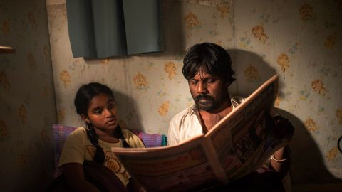 | Dheepan (2015) | 7.2 | 18.172 | Crime, Drama | 130 | Dheepan je Tamilski tigar, borac za slobodu. Građanski rat u Šri lanci približava se kraju, kao i poraz. | Zemlja: Francuska
Redatelj: Jacques Audiard
Scenarij: Jacques Audiard, Thomas Bidegain, Noé Debré
Glumci: Jesuthasan Antonythasan, Kalieaswari Srinivasan, Vincent Rottiers, Claudine Vinasithamby |
| pon 16.11. | 23:50 | AMC | Podzemni svijet 2 | 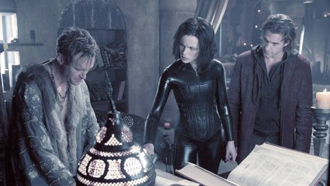 | Underworld: Evolution (2006) | 6.7 | 220.216 | Action, Fantasy, Thriller | 95 | Izolirana vampirska ratnica Selene pokušava probuditi Marcusa, posljednjeg od drevnih vampira koji je još uvijek živ... | Zemlja: SAD
Redatelj: Len Wiseman
Scenarij: Danny McBride, Len Wiseman, Kevin Grevioux
Glumci: Kate Beckinsale, Scott Speedman, Tony Curran, Derek Jacobi |
| uto 17.11. | 00:05 | Viasat Kino | Zamjena | | Changeling (2008) | 7.7 | 277.366 | Biography, Crime, Drama | 185 | Christine Collins samohrana je majka devetogodišnjeg sina koji jednoga dana nestaje. Potraga za njim prestaje kada se pojavi dječak koji tvrdi da je on taj nestali sin, ali Christine osjeća da nije... | Redatelj: Clint Eastwood
Scenarij: J. Michael Straczynski
Glumci: Angelina Jolie, John Malkovich, Colm Feore, Amy Ryan |
| uto 17.11. | 00:15 | CineStar Comedy | Glasovi | | The Voices (2014) | 6.3 | 67.628 | Comedy, Crime, Horror | 100 | Jerry (Ryan Reynolds) je onaj veseli tip koji radi od devet do 17 u tvornici kada, uz neobičan šarm onoga kojemu bi trebalo nekoliko prijatelja. | Redatelj: Marjane Satrapi
Scenarij: Michael R. Perry
Glumci: Ryan Reynolds, Gemma Arterton, Anna Kendrick, Jacki Weaver |
| uto 17.11. | 00:37 | HRT 3 | Zeleni planet | | La belle verte (1996) | 7.1 | 6.380 | Comedy, Sci-Fi | 90 | Na intergalaktičkom saboru dobronamjerna izvanzemaljka prihvaća zadatak da ode na Zemlju, planet koji su u njezinu svijetu svi otpisali kao nepopravljiv, ne bi li Zemljanima prenijela poruku sloge... | Zemlja: Francuska
Redatelj: Coline Serreau
Scenarij: Coline Serreau
Glumci: Coline Serreau, Vincent Lindon, James Thierrée, Samuel Tasinaje |
| uto 17.11. | 01:25 | AMC | Terminator 2: Sudnji dan | 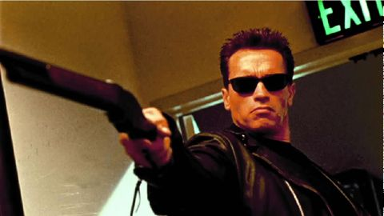 | Terminator 2: Judgment Day (1991) | 8.6 | 1.310.795 | Action, Adventure, Sci-Fi | 130 | Desetogodišnji John Connor mora preživjeti kada napredni terminator T-1000 iz budućnosti stigne s misijom da ga uništi. | Zemlja: SAD
Redatelj: James Cameron
Scenarij: James Cameron, William Wisher
Glumci: Arnold Schwarzenegger, Linda Hamilton, Robert Patrick, Edward Furlong |
| uto 17.11. | 01:45 | CineStar 2 | Svijet odraslih | | Adult World (2013) | 6.1 | 19.368 | Comedy, Drama | 96 | Amy, a naive college graduate who believes she's destined to be a great poet, begrudgingly accepts a job at a sex shop while she pursues a mentorship with reclusive writer Rat Billings. | Zemlja: SAD
Redatelj: Scott Coffey
Scenarij: Andy Cochran
Glumci: John Cusack, Emma Roberts, Armando Riesco, Shannon Woodward |
| uto 17.11. | 01:55 | Nova TV | Krid 3 | 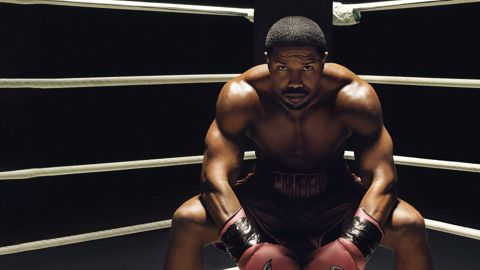 | Creed III (2023) | 6.7 | 112.386 | Action, Drama, Sport | 115 | Nakon povratka prijatelja iz djetinjstva, Adonis Creed suočava se s protivnikom koji ga poznaje bolje od ikoga i prijeti svemu što je izgradio. | Zemlja: SAD
Redatelj: Michael B. Jordan
Scenarij: Keenan Coogler, Zach Baylin, Ryan Coogler, Sylvester Stallone
Glumci: Michael B. Jordan, Tessa Thompson, Jonathan Majors, Wood Harris |
| uto 17.11. | 02:00 | Kino TV | Renovatorica detektivka: Konkretni dokaz | | Concrete Evidence: A Fixer Upper Mystery (2017) | 6.7 | 1.325 | Crime, Drama, Mystery | 120 | Shannon započinje obnovu stare kuće koju je nedavno kupio njezin dečko Mac. Tijekom procesa Shannon otkrije kostur djevojke u zidovima. Skupa s Macom upušta se u istragu njezine smrti. | Zemlja: SAD
Redatelj: Mark Jean
Scenarij: Kate Carlisle, Teena Booth
Glumci: Jewel Kilcher, Colin Ferguson, Erin Karpluk, Ron Lea |
| uto 17.11. | 03:10 | Viasat Kino | Dvije sestre za kralja | | The Other Boleyn Girl (2008) | 6.7 | 128.601 | Biography, Drama, History | 150 | Ova povijesna drama prati oštru borbu sestara Mary (Scarlett Johansson) i Anne Boleyn (Natalie Portman), dok se trude steći naklonost kralja Henrika VIII. | Zemlja: Ujedinjeno Kraljevstvo
Redatelj: Justin Chadwick
Scenarij: Peter Morgan, Philippa Gregory
Glumci: Natalie Portman, Scarlett Johansson, Eric Bana, Jim Sturgess |
| uto 17.11. | 04:00 | Kino TV | Policijski, pridjev | | Politist, adjectiv (2009) | 7.0 | 5.581 | Crime, Drama | 121 | Cristi je policajac koji odbija uhititi mladića zbog nuđenja hašiša dvojici svojih školskih kolega. "Nuđenje" je, naime, kažnjivo zakonom. | Zemlja: Rumunija
Redatelj: Corneliu Porumboiu
Scenarij: Corneliu Porumboiu
Glumci: Dragoş Bucur, Vlad Ivanov, Ion Stoica, Irina Saulescu |
| uto 17.11. | 06:00 | STAR Movies | Roboti | | Robots (2005) | 6.4 | 178.097 | Adventure, Animation, Comedy | 105 | U svijetu robota mladi i idealistički izumitelj putuje u veliki grad da se pridruži tvrtci koja ga nadahnjuje. Međutim, ubrzo će shvatiti da se suprotstavlja zlokobnom rukovodstvu tvrtke. | Zemlja: SAD
Redatelj: Chris Wedge, Carlos Saldanha
Scenarij: David Lindsay-Abaire, Lowell Ganz, Babaloo Mandel, Ron Mita
Glumci: Ewan McGregor, Halle Berry, Robin Williams, Mel Brooks |
| uto 17.11. | 06:01 | Kino TV | Okus osvete | | Journal 64 (2018) | 7.4 | 22.787 | Crime, Mystery, Thriller | 119 | Dvojica radnika slučajno otkriju uznemirujući prizor u starom stanu u Copenhagenu: skrivena iza lažnog zida nalaze se tri mumificirana leša postavljena u sjedeći položaj za stolom uz još jedno... | Zemlja: Danska
Redatelj: Christoffer Boe
Scenarij: Jussi Adler-Olsen, Bo Hr. Hansen, Mikkel Nørgaard, Nikolaj Arcel
Glumci: Nikolaj Lie Kaas, Fares Fares, Johanne Louise Schmidt, Fanny Leander Bornedal |
| uto 17.11. | 06:05 | CineStar 1 | Theater Of Life | | Theater of Life (2016) | 6.7 | 295 | Documentary | 115 | Izvanrednu pučku kuhinju u Milanu – Refettorio Ambrosiano – vodi međunarodno poznat kuhar Massimo Bottura i 40 najboljih svjetskih kuhara uključujući Ferrana Adriju, Renea Redzepija, Alaina... | Zemlja: Kanada
Redatelj: Peter Svatek
Scenarij: Peter Svatek
Glumci: Massimo Bottura |
| uto 17.11. | 07:40 | Viasat Kino | Spajdermen 2 | 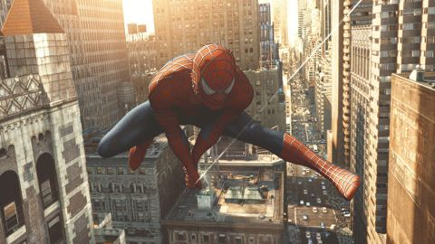 | Spider-Man 2 (2004) | 7.5 | 814.418 | Action, Adventure, Sci-Fi | 175 | Čovjek-pauk 2. Sam Raimi režira ovu Oscarom nagrađenu akcijsku avanturu u kojoj glumi Tobey Maguire Petera Parkera koji pokušava pronaći ravnotežu između života studenta i superjunaka. | Zemlja: SAD
Redatelj: Sam Raimi
Scenarij: Stan Lee, Steve Ditko, Alfred Gough, Miles Millar
Glumci: Tobey Maguire, Kirsten Dunst, James Franco, Alfred Molina |
| uto 17.11. | 07:45 | STAR Movies | Pisma Juliji | | Letters to Juliet (2010) | 6.5 | 116.391 | Adventure, Comedy, Drama | 130 | Sophie sanja o tome da postane spisateljica te otputuje u Veronu, gdje se susreće "Julijine tajnice"…. | Zemlja: SAD
Redatelj: Gary Winick
Scenarij: Jose Rivera, Tim Sullivan
Glumci: Amanda Seyfried, Christopher Egan, Gael García Bernal, Vanessa Redgrave |
| uto 17.11. | 08:00 | CineStar 1 | Colossal | | Colossal (2016) | 6.2 | 76.240 | Comedy, Drama, Fantasy | 125 | Gloria je nezaposlena partijanerica koja je prisiljena napustiti svoj život u New Yorku i vratiti se u rodni grad nakon štu ju dečko izbaci stana. | Zemlja: Južna Koreja
Redatelj: Nacho Vigalondo
Scenarij: Nacho Vigalondo
Glumci: Anne Hathaway, Jason Sudeikis, Austin Stowell, Tim Blake Nelson |
| uto 17.11. | 08:45 | AMC | Opasna veza | 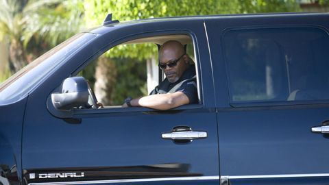 | Lakeview Terrace (2008) | 6.2 | 60.180 | Crime, Drama, Thriller | 105 | Problematični i rasistički nastrojen Afroamerikanac, koji radi kao policajac, spreman je na sve kako bi otjerao svoje nove susjede, simpatični međurasni par. | Zemlja: SAD
Redatelj: Neil LaBute
Scenarij: David Loughery, Howard Korder
Glumci: Samuel L. Jackson, Patrick Wilson, Kerry Washington, Ron Glass |
| uto 17.11. | 08:50 | CineStar 2 | Upoznao sam djevojku | | I Met a Girl (2020) | 6.1 | 1.824 | Drama, Romance | 120 | Devon, ambiciozni glazbenik sa shizofrenijom, ovisi o svom bratu Nicku koji se brine za njega. No, njihov status quo je ugrožen kada Nickova žena, Olivia, zatrudni i oni se dogovore da se Devon iseli. | Zemlja: Australija
Redatelj: Luke Eve
Scenarij: Glen Dolman
Glumci: Brenton Thwaites, Joel Jackson, Lily Sullivan, Zahra Newman |
| uto 17.11. | 09:00 | CineStar Fantasy | Slomljena krila | | Butterfly on a Wheel (2007) | 6.6 | 35.455 | Crime, Drama, Thriller | 105 | Neil (Gerard Butler) i Abby Randall (Maria Bello) sretno su oženjeni par. Neil je ambiciozan marketinški stručnjak, a Abby kućanica koja odgaja njihovu petogodišnju kćer Sophie. | Zemlja: Ujedinjeno Kraljevstvo
Redatelj: Mike Barker
Scenarij: William Morrissey
Glumci: Pierce Brosnan, Maria Bello, Gerard Butler, Claudette Mink |
| uto 17.11. | 09:00 | CineStar Comedy | Ljubav u New Yorku | 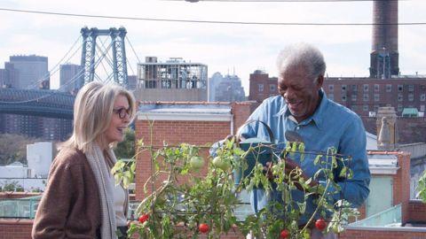 | 5 Flights Up (2014) | 6.2 | 12.089 | Comedy, Drama | 95 | Dugogodišnji bračni par koji je cijeli život proveo u istom stanu u New Yorku suoče se s osobnim problemima i problemima s nekretninama kako se planiraju odseliti. | Zemlja: SAD
Redatelj: Richard Loncraine
Scenarij: Charlie Peters, Jill Ciment
Glumci: Diane Keaton, Morgan Freeman, Cynthia Nixon, Carrie Preston |
| uto 17.11. | 10:00 | Kino TV | Adios Buenos Aires | | Adiós Buenos Aires (2023) | 6.5 | 404 | Comedy, Drama, Music | 120 | U Argentini, 2001. Julio, prodavač cipela i harmonikaš prisiljen je seliti se u Njemačku – no planovi mu se mijenjaju kada upozna koliko prekrasnu toliko i kompliciranu ženu tijekom vožnje... | Zemlja: Njemačka
Redatelj: German Kral
Scenarij: Stephan Puchner, Fernando Castets, German Kral
Glumci: Diego Cremonesi, Marina Bellati, Carlos Portaluppi, Manuel Vicente |
| uto 17.11. | 10:30 | AMC | Dvije sestre za kralja | | The Other Boleyn Girl (2008) | 6.7 | 128.601 | Biography, Drama, History | 105 | Anne i Mary Boleyn sestre su koje postaju suparnice zbog kralja Henrika VIII. | Zemlja: Ujedinjeno Kraljevstvo
Redatelj: Justin Chadwick
Scenarij: Peter Morgan, Philippa Gregory
Glumci: Natalie Portman, Scarlett Johansson, Eric Bana, Jim Sturgess |
| uto 17.11. | 10:35 | Viasat Kino | Dečki mog života |  | Riding in Cars with Boys (2001) | 6.5 | 32.318 | Biography, Comedy, Drama | 160 | Snovi Drew Barrymore o tome da postane spisateljica nikad se nisu ostvarili zbog neplanirane trudnoće. No, dok podiže sina, smogne hrabrosti da se iznova posveti svojim snovima. | Zemlja: SAD
Redatelj: Penny Marshall
Scenarij: Beverly Donofrio, Morgan Ward
Glumci: Drew Barrymore, Steve Zahn, Brittany Murphy, James Woods |
| uto 17.11. | 10:45 | CineStar Fantasy | Umobolnica na osami | 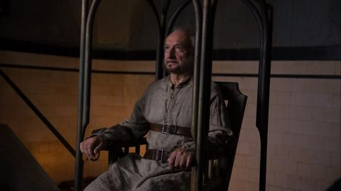 | Stonehearst Asylum (2014) | 6.8 | 65.838 | Drama, Horror, Mystery | 125 | Film temeljen na jednoj od najnapetijih priča genijalnog Edgara Allana Poea! Radnja ovog jezivog trilera smještena je u 19. stoljeće. | Zemlja: SAD
Redatelj: Brad Anderson
Scenarij: Joe Gangemi, Edgar Allan Poe
Glumci: Kate Beckinsale, Jim Sturgess, Michael Caine, Ben Kingsley |
| uto 17.11. | 10:50 | CineStar 2 | Misterij Henrija Picka | | Le mystère Henri Pick (2019) | 6.7 | 5.400 | Comedy, Drama, Mystery | 115 | Urednica otkriva roman kojega smatra remek-djelom, u knjižnici koja je posebna po tomu što skuplja rukopise koje su izdavači odbili. | Zemlja: Belgija
Redatelj: Rémi Bezançon
Scenarij: Rémi Bezançon, David Foenkinos, Vanessa Portal
Glumci: Fabrice Luchini, Camille Cottin, Alice Isaaz, Bastien Bouillon |
| uto 17.11. | 11:20 | CineStar Action | Doušnik | | Snitch (2013) | 6.4 | 96.755 | Action, Drama, Thriller | 125 | Snitch. Dwayne Johnson u eksplozivnoj akciji kao čovjek odlučan baciti meksički narkokartel na koljena. | Zemlja: SAD
Redatelj: Ric Roman Waugh
Scenarij: Justin Haythe, Ric Roman Waugh
Glumci: Dwayne Johnson, Barry Pepper, Jon Bernthal, Susan Sarandon |
| uto 17.11. | 11:50 | CineStar 1 | Operacija Mljeveno meso | | Operation Mincemeat (2021) | 6.6 | 45.274 | Drama, War | 140 | Ratne 1943. godine nevjerojatni plan Britanaca upropastio je vojnu taktiku nacista. | Zemlja: Ujedinjeno Kraljevstvo
Redatelj: John Madden
Scenarij: Michelle Ashford, Ben Macintyre
Glumci: Colin Firth, Matthew Macfadyen, Kelly MacDonald, Penelope Wilton |
| uto 17.11. | 12:15 | AMC | Opasnost iz dubine | | The Shallows (2016) | 6.3 | 156.230 | Drama, Horror, Thriller | 80 | Bezbrižan dan na plaži za Nancy se pretvori u pakao. Nakon što se na dasci za surfanje udalji od obale, postane glavna meta velike bijele psine. | Zemlja: SAD
Redatelj: Jaume Collet-Serra
Scenarij: Anthony Jaswinski
Glumci: Blake Lively, Óscar Jaenada, Brett Cullen, Sedona Legge |
| uto 17.11. | 12:45 | CineStar 2 | Mud | | Mud (2012) | 7.3 | 202.570 | Adventure, Drama | 140 | Dva mlada dečka pronađu bjegunca koji se skriva na otoku u Mississippiju i sklope pakt da će mu pomoći u ponovnom ujedinjenju sa svojom ljubavi i u bijegu. | Zemlja: SAD
Redatelj: Jeff Nichols
Scenarij: Jeff Nichols
Glumci: Matthew McConaughey, Reese Witherspoon, Tye Sheridan, Jacob Lofland |
| uto 17.11. | 12:50 | CineStar Fantasy | Različita | | Divergent (2014) | 6.6 | 525.229 | Action, Adventure, Drama | 145 | Film je nastao na temelju bestselera Veronice Roth i smješten je u svijet u kojem su ljudi podijeljeni u pet skupina, s obzirom na prevladavajuće osobine svojih ličnosti. | Zemlja: SAD
Redatelj: Neil Burger
Scenarij: Evan Daugherty, Vanessa Taylor, Veronica Roth
Glumci: Shailene Woodley, Theo James, Kate Winslet, Ashley Judd |
| uto 17.11. | 13:15 | Viasat Kino | Sajam taštine | | Vanity Fair (2004) | 6.2 | 24.415 | Drama | 200 | Odrastajući u siromaštvu u Londonu početkom 19. stoljeća, mlada djevojka koristi svu svoju duhovitost, lukavstvo i seksualnost da se uzdigne i osvoji englesko društvo. | Zemlja: SAD
Redatelj: Mira Nair
Scenarij: Matthew Faulk, Mark Skeet, Julian Fellowes, William Makepeace Thackeray
Glumci: Reese Witherspoon, Romola Garai, Bob Hoskins, Jim Broadbent |
| uto 17.11. | 14:00 | HRT 3 | Putovnica za Pimlico | | Passport to Pimlico (1949) | 7.1 | 6.039 | Comedy | 81 | Stanovnici dijela Londona proglase neovisnost kad otkriju stari sporazum. Zbog toga iznenada nastaje potreba za "putovnicom za Pimlico"... | Zemlja: Ujedinjeno Kraljevstvo
Redatelj: Henry Cornelius
Scenarij: T.E.B. Clarke
Glumci: Stanley Holloway, Betty Warren, Barbara Murray, Paul Dupuis |
| uto 17.11. | 14:00 | Kino TV | 2046 | | 2046 (2004) | 7.4 | 65.231 | Drama, Romance, Sci-Fi | 120 | Tijekom 1966. godine pisac Chow Mo-Wan provodi dane u hotelskoj sobi u Hong Kongu. | Zemlja: Hong Kong
Redatelj: Wong Kar-Wai
Scenarij: Wong Kar-Wai
Glumci: Tony Leung Chiu-wai, Li Gong, Faye Wong, Takuya Kimura |
| uto 17.11. | 14:01 | HRT 3 | Putovnica za Pimlico | | Passport to Pimlico (1949) | 7.1 | 6.039 | Comedy | 81 | Stanovnici dijela Londona proglase neovisnost kad otkriju stari sporazum. Zbog toga iznenada nastaje potreba za "putovnicom za Pimlico"... | Zemlja: Ujedinjeno Kraljevstvo
Redatelj: Henry Cornelius
Scenarij: T.E.B. Clarke
Glumci: Stanley Holloway, Betty Warren, Barbara Murray, Paul Dupuis |
| uto 17.11. | 14:30 | HRT 2 | Vera | 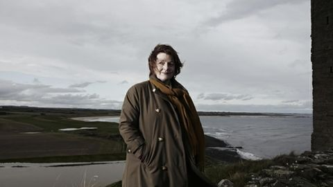 | Vera (2019) ? | 6.7 | 152 | Mystery, Thriller | 90 | Blood Will Tell. Kad ovrhovoditelji pokušaju zaplijeniti dom Freddieja Gilla, nađu ga ustrijeljenog u dnevnom boravku. Viša inspektorica Vera Stanhope (B. | Zemlja: Ujedinjeno Kraljevstvo
Redatelj: Waldemar Oldenburger
Scenarij: Waldemar Oldenburger
Glumci: Brenda Blethyn, Kenny Doughty, Jon Morrison, Ibinabo Jack |
| uto 17.11. | 14:31 | HRT 2 | Vera | | Vera (2019) ? | 6.7 | 152 | Mystery, Thriller | 89 | Blood Will Tell. Kad ovrhovoditelji pokušaju zaplijeniti dom Freddieja Gilla, nađu ga ustrijeljenog u dnevnom boravku. Viša inspektorica Vera Stanhope (B. | Zemlja: Ujedinjeno Kraljevstvo
Redatelj: Waldemar Oldenburger
Scenarij: Waldemar Oldenburger
Glumci: Brenda Blethyn, Kenny Doughty, Jon Morrison, Ibinabo Jack |
| uto 17.11. | 15:20 | AMC | Pripravnici | 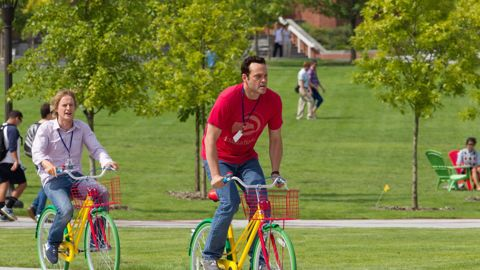 | The Internship (2013) | 6.3 | 229.881 | Comedy | 110 | Dva nezaposlena trgovca odluče se dokazati kroz pripravništvo u Googleu, gdje se moraju nadmetati s mlađim kolegama. | Zemlja: SAD
Redatelj: Shawn Levy
Scenarij: Vince Vaughn, Jared Stern
Glumci: Vince Vaughn, Owen Wilson, Rose Byrne, Aasif Mandvi |
| uto 17.11. | 16:00 | CineStar 1 | Eiffel | 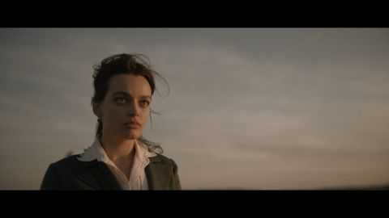 | Eiffel (2021) | 6.3 | 9.424 | Biography, Drama, History | 125 | Eiffel – simbol Pariza. Dok su ga neki smatrali simbolom napretka i industrijske budućnosti, drugi su ga smatrali vrhuncem neukusa. | Zemlja: Belgija
Redatelj: Martin Bourboulon
Scenarij: Caroline Bongrand, Thomas Bidegain, Natalie Carter, Martin Bourboulon
Glumci: Romain Duris, Emma Mackey, Pierre Deladonchamps, Alexandre Steiger |
| uto 17.11. | 16:05 | CineStar Comedy | Comic Sans | | Comic Sans (2018) | 6.9 | 1.392 | Comedy, Drama, Romance | 105 | Alan, Zagrepčanin viških korijena može se pohvaliti izuzetno uspješnom karijerom grafičkog dizajnera, ali se baš ne može pohvaliti odnosima sa svojim bivšim djevojkama niti odnosom sa svojim ocem,... | Zemlja: Hrvatska
Redatelj: Nevio Marasovic
Scenarij: Nevio Marasovic, Rakan Rushaidat, Janko Popovic Volaric
Glumci: Janko Popović Volarić, Zlatko Burić, Nataša Janjić, Miloš Timotijević |
| uto 17.11. | 16:35 | Viasat Kino | Rent-a-mama |  | Baby Mama (2008) | 6.0 | 50.371 | Comedy, Romance | 125 | Rent-a-mama. Uspješna, neudana poslovna žena koja silno želi imati dijete dozna da je neplodna te angažira ženu iz radničke klase da joj bude zamjenska majka. | Zemlja: SAD
Redatelj: Michael McCullers
Scenarij: Michael McCullers
Glumci: Amy Poehler, Tina Fey, Greg Kinnear, Dax Shepard |
| uto 17.11. | 17:10 | AMC | Fantomas | 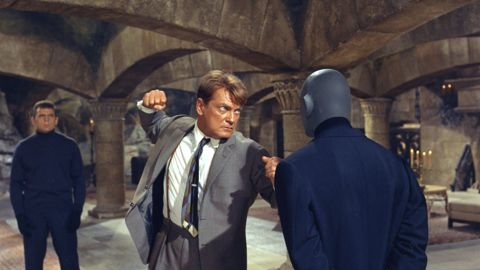 | Fantômas (1964) | 6.9 | 14.023 | Adventure, Comedy, Crime | 100 | Dva najbolja čovjeka Francuske, odvažni novinar i iznimno energični policajac, daju se u potragu za tajanstvenim zločinačkim veleumom. | Zemlja: Francuska
Redatelj: André Hunebelle
Scenarij: Pierre Souvestre, Marcel Allain, Jean Halain, Pierre Foucaud
Glumci: Jean Marais, Louis de Funès, Mylène Demongeot, Jacques Dynam |
| uto 17.11. | 18:00 | Kino TV | Grad prokletih | 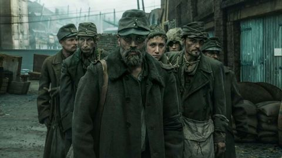 | Hinterland (2021) | 6.1 | 2.010 | Crime, Drama, History | 135 | Nakon Prvog svjetskog rata i sloma Austro-Ugarske, detektiv Peter Perg vraća se kući u Beč nakon godina zatočeništva. No Beč kakvog je nekoć poznavao više ne postoji. | Zemlja: Belgija
Redatelj: Stefan Ruzowitzky
Scenarij: Robert Buchschwenter, Hanno Pinter, Stefan Ruzowitzky
Glumci: Murathan Muslu, Liv Lisa Fries, Max von der Groeben, Marc Limpach |
| uto 17.11. | 18:25 | CineStar 2 | Legende u Vegasu | 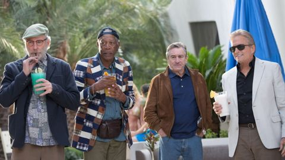 | Last Vegas (2013) | 6.6 | 141.273 | Comedy | 115 | Billy (Michael Douglas), Paddy (Robert De Niro), Archie (Morgan Freeman) i Sam (Kevin Kline) najbolji su prijatelji još od djetinjstva. | Zemlja: SAD
Redatelj: Jon Turteltaub
Scenarij: Dan Fogelman
Glumci: Morgan Freeman, Robert De Niro, Michael Douglas, Mary Steenburgen |
| uto 17.11. | 18:25 | CineStar Fantasy | Trilogija Različita: Pobunjena | | The Divergent Series: Insurgent (2015) | 6.2 | 275.573 | Action, Adventure, Romance | 125 | Nakon što je otkrila da ne pripada niti jednoj frakciji, Beatrice Prior mora izabrati svoj daljnji život. | Zemlja: SAD
Redatelj: Robert Schwentke
Scenarij: Brian Duffield, Akiva Goldsman, Mark Bomback, Veronica Roth
Glumci: Shailene Woodley, Theo James, Kate Winslet, Octavia Spencer |
| uto 17.11. | 18:40 | Viasat Kino | Dvije sestre za kralja | | The Other Boleyn Girl (2008) | 6.7 | 128.601 | Biography, Drama, History | 140 | Ova povijesna drama prati oštru borbu sestara Mary (Scarlett Johansson) i Anne Boleyn (Natalie Portman), dok se trude steći naklonost kralja Henrika VIII. | Zemlja: Ujedinjeno Kraljevstvo
Redatelj: Justin Chadwick
Scenarij: Peter Morgan, Philippa Gregory
Glumci: Natalie Portman, Scarlett Johansson, Eric Bana, Jim Sturgess |
| uto 17.11. | 19:25 | CineStar Comedy | Smisao života jednog psa | | A Dog's Purpose (2017) | 7.3 | 88.661 | Adventure, Comedy, Drama | 100 | Vjerojatno ste se više puta zapitali što vaš kućni ljubimac misli dok vas zamišljeno gleda u oči. | Zemlja: SAD
Redatelj: Lasse Hallström
Scenarij: W. Bruce Cameron, Cathryn Michon, Audrey Wells, Maya Forbes
Glumci: Josh Gad, K.J. Apa, Britt Robertson, Dennis Quaid |
| uto 17.11. | 20:00 | CineStar Action | Plaćenici 3 | 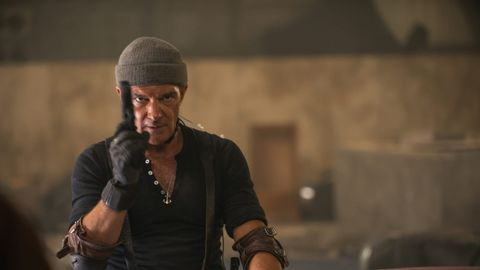 | The Expendables 3 (2014) | 6.1 | 208.596 | Action, Adventure, Thriller | 135 | Filmska franšiza s najviše glumačkih zvijezda u povijesti, eksplozivnih kaskaderskih akrobacija i nevjerojatnog oružja. | Zemlja: SAD
Redatelj: Patrick Hughes
Scenarij: Sylvester Stallone, Creighton Rothenberger, Katrin Benedikt, Dave Callaham
Glumci: Sylvester Stallone, Jason Statham, Antonio Banderas, Jet Li |
| uto 17.11. | 20:00 | STAR Movies | Matrix | | The Matrix (1999) | 8.7 | 2.294.151 | Action, Sci-Fi | 165 | Računalni haker od tajanstvenih pobunjenika saznaje o pravoj prirodi svoje stvarnosti i svojoj ulozi u ratu protiv njezinih kontrolora. | Zemlja: SAD
Redatelj: Lana Wachowski, Lilly Wachowski
Scenarij: Lilly Wachowski, Lana Wachowski
Glumci: Keanu Reeves, Laurence Fishburne, Carrie-Anne Moss, Hugo Weaving |
| uto 17.11. | 20:05 | STAR Movies | Matrix | | The Matrix (1999) | 8.7 | 2.294.151 | Action, Sci-Fi | 170 | Računalni haker od tajanstvenih pobunjenika saznaje o pravoj prirodi svoje stvarnosti i svojoj ulozi u ratu protiv njezinih kontrolora. | Zemlja: SAD
Redatelj: Lana Wachowski, Lilly Wachowski
Scenarij: Lilly Wachowski, Lana Wachowski
Glumci: Keanu Reeves, Laurence Fishburne, Carrie-Anne Moss, Hugo Weaving |
| uto 17.11. | 20:15 | Kino TV | Djelo bez autora | | Werk ohne Autor (2018) | 7.7 | 28.725 | Biography, Drama, Romance | 225 | Inspiriran stvarnim događajima i obuhvaćaju tri ere njemačke povijesti, "Djelo bez autora" priča je o mladom studentu umjetnosti Kurtu (Tom Schilling) koji se zaljubljuje u svoju kolegicu Ellie... | Zemlja: Njemačka
Redatelj: Florian Henckel von Donnersmarck
Scenarij: Florian Henckel von Donnersmarck
Glumci: Tom Schilling, Sebastian Koch, Paula Beer, Saskia Rosendahl |
| uto 17.11. | 20:30 | AMC | Knjižničar 2: Potraga za blagom kralja Solomona |  | The Librarian: Return to King Solomon's Mines (2006) | 6.2 | 17.670 | Action, Adventure, Comedy | 90 | U drugom nastavku pratimo Flynna Carsena, knjižničara avanturističkog duha, u potrazi za legendarnim rudnicima kralja Solomona. | Zemlja: SAD
Redatelj: Jonathan Frakes
Scenarij: Marco Schnabel, David N. Titcher
Glumci: Noah Wyle, Gabrielle Anwar, Bob Newhart, Jane Curtin |
| uto 17.11. | 20:30 | CineStar Fantasy | 13 grijeha | | 13 Sins (2014) | 6.3 | 42.843 | Horror, Thriller | 105 | Nakon gubitka posla Elliot Brindle nađe se u iznimno teškoj situaciji. No onda dobije tajanstveni poziv. Ukoliko uspješno obavi 13 zadataka, osvojit će pozamašni iznos novca. | Zemlja: SAD
Redatelj: Daniel Stamm
Scenarij: David Birke, Daniel Stamm, Chookiat Sakveerakul, Eakasit Thairaat
Glumci: Mark Webber, Devon Graye, Tom Bower, Rutina Wesley |
| uto 17.11. | 21:00 | Viasat Kino | Slomljeno cvijeće | | Broken Flowers (2005) | 7.1 | 110.985 | Comedy, Drama, Mystery | 135 | Kada bivši Don Juan, s manjim bogatstvom, primi anonimno pismo u kojem piše da ima devetnaestogodišnjeg sina koji ga možda traži, kreće na putovanje po zemlji u potrazi za bivšim ljubavnicama. | Zemlja: SAD
Redatelj: Jim Jarmusch
Scenarij: Jim Jarmusch, Bill Raden, Sara Driver
Glumci: Bill Murray, Sharon Stone, Jessica Lange, Julie Delpy |
| uto 17.11. | 21:05 | CineStar Comedy | Putovanje jednog psa | | A Dog's Journey (2019) | 7.5 | 34.170 | Adventure, Comedy, Drama | 105 | Dugoočekivani nastavak dirljivog globalnog hita Smisao života jednog psa, nastao na temelju bestselera Brucea Camerona, koji je je ispričan kroz pseći pogled na svijet. | Zemlja: Burkina Faso
Redatelj: Gail Mancuso
Scenarij: W. Bruce Cameron, Cathryn Michon, Maya Forbes, Wallace Wolodarsky
Glumci: Dennis Quaid, Josh Gad, Kathryn Prescott, Henry Lau |
| uto 17.11. | 21:12 | HRT 2 | Jedan život |  | One Life (2023) | 7.5 | 42.130 | Biography, Drama, History | 112 | Uoči Drugog svjetskog rata, mladi Nicholas Winton pokreće očajničku akciju spašavanja, i iz Praga u Britaniju uspijeva evakuirati 669 većinom židovske djece. | Zemlja: Ujedinjeno Kraljevstvo
Redatelj: James Hawes
Scenarij: Lucinda Coxon, Nick Drake, Barbara Winton
Glumci: Anthony Hopkins, Helena Bonham Carter, Jonathan Pryce, Romola Garai |
| uto 17.11. | 21:13 | HRT 2 | Jedan život | | One Life (2023) | 7.5 | 42.130 | Biography, Drama, History | 112 | Uoči Drugog svjetskog rata, mladi Nicholas Winton pokreće očajničku akciju spašavanja, i iz Praga u Britaniju uspijeva evakuirati 669 većinom židovske djece. | Zemlja: Ujedinjeno Kraljevstvo
Redatelj: James Hawes
Scenarij: Lucinda Coxon, Nick Drake, Barbara Winton
Glumci: Anthony Hopkins, Helena Bonham Carter, Jonathan Pryce, Romola Garai |
| uto 17.11. | 21:15 | HRT 2 | Jedan život | | One Life (2023) | 7.5 | 42.130 | Biography, Drama, History | 110 | Uoči Drugog svjetskog rata, mladi Nicholas Winton pokreće očajničku akciju spašavanja, i iz Praga u Britaniju uspijeva evakuirati 669 većinom židovske djece. | Zemlja: Ujedinjeno Kraljevstvo
Redatelj: James Hawes
Scenarij: Lucinda Coxon, Nick Drake, Barbara Winton
Glumci: Anthony Hopkins, Helena Bonham Carter, Jonathan Pryce, Romola Garai |
| uto 17.11. | 21:58 | HRT 3 | Vječni ciklus komedije: Slatka Irma | | Irma la Douce (1963) | 7.3 | 24.696 | Comedy, Romance | 138 | U pet ujutro u Parizu svi spavaju osim zaposlenika tržnice, prostitutki u ulici Casanova i posjetitelja kafića u toj ulici. U kafić, čiji je vlasnik Moustache (L. | Zemlja: SAD
Redatelj: Billy Wilder
Scenarij: Alexandre Breffort, Billy Wilder, I.A.L. Diamond
Glumci: Jack Lemmon, Shirley MacLaine, Lou Jacobi, Bruce Yarnell |
| uto 17.11. | 22:00 | HRT 3 | Vječni ciklus komedije: Slatka Irma | | Irma la Douce (1963) | 7.3 | 24.696 | Comedy, Romance | 137 | U pet ujutro u Parizu svi spavaju osim zaposlenika tržnice, prostitutki u ulici Casanova i posjetitelja kafića u toj ulici. U kafić, čiji je vlasnik Moustache (L. | Zemlja: SAD
Redatelj: Billy Wilder
Scenarij: Alexandre Breffort, Billy Wilder, I.A.L. Diamond
Glumci: Jack Lemmon, Shirley MacLaine, Lou Jacobi, Bruce Yarnell |
| uto 17.11. | 22:10 | CineStar 1 | Tajna u njihovim očima | | Secret in Their Eyes (2015) | 6.3 | 55.632 | Crime, Drama, Mystery | 125 | Prije trinaest godina istražiteljica Jess Cobb je na uviđaju otkrila tijelo svoje kćeri tinejdžerice. Sada njezin kolega Ray Kasten pronalazi novi trag u vezi tog zločina. | Zemlja: SAD
Redatelj: Billy Ray
Scenarij: Billy Ray, Juan José Campanella, Eduardo Sacheri
Glumci: Chiwetel Ejiofor, Julia Roberts, Nicole Kidman, Joe Cole |
| uto 17.11. | 22:10 | CineStar 2 | Jackie | | Jackie (2016) | 6.6 | 87.752 | Biography, Drama | 110 | Biografska priča o Jackie Kennedy, udovici američkog predsjednika Johna F. Kennedyja, nakon njegovog ubojstva. | Zemlja: Čile
Redatelj: Pablo Larraín
Scenarij: Noah Oppenheim
Glumci: Natalie Portman, Peter Sarsgaard, Greta Gerwig, Richard E. Grant |
| uto 17.11. | 22:45 | STAR Movies | Neprijatelj Pred Vratima | | Enemy at the Gates (2001) | 7.5 | 297.011 | Action, Drama, War | 160 | Ruski i njemački snajperist igraju se mačke i miša tijekom bitke za Staljingrad. | Redatelj: Jean-Jacques Annaud
Scenarij: Jean-Jacques Annaud, Alain Godard
Glumci: Jude Law, Ed Harris, Rachel Weisz, Joseph Fiennes |
| uto 17.11. | 22:50 | CineStar Comedy | Put promjene | | The Road Within (2014) | 7.0 | 17.312 | Adventure, Comedy, Drama | 100 | Film je o Vincentu, mladiću s Tourettovim sindromom. Njegova majka umre, pa je njegov otac s kojim se gotovo ni ne poznaje, primoran uskočiti. | Zemlja: SAD
Redatelj: Gren Wells
Scenarij: Florian David Fitz, Gren Wells
Glumci: Dev Patel, Kyra Sedgwick, Robert Patrick, Robert Sheehan |
| uto 17.11. | 22:55 | STAR Movies | Neprijatelj pred vratima | | Enemy at the Gates (2001) | 7.5 | 297.011 | Action, Drama, War | 165 | Ruski i njemački snajperist igraju se mačke i miša tijekom bitke za Staljingrad. | Zemlja: Irska
Redatelj: Jean-Jacques Annaud
Scenarij: Jean-Jacques Annaud, Alain Godard
Glumci: Jude Law, Ed Harris, Rachel Weisz, Joseph Fiennes |
| uto 17.11. | 23:00 | RTL | Čudesna žena | | Wonder Woman (2017) | 7.3 | 744.752 | Action, Adventure, Fantasy | 130 | Povijesna fotografija iz Prvog svjetskog rata Dianu Prince vraća iz Pariza u prošla vremena i otvara poglavlje o njezinom porijeklu. | Zemlja: SAD
Redatelj: Patty Jenkins
Scenarij: Allan Heinberg, Zack Snyder, Jason Fuchs, William Moulton Marston
Glumci: Gal Gadot, Chris Pine, Connie Nielsen, Robin Wright |
| uto 17.11. | 23:15 | Viasat Kino | Zelena milja | | The Green Mile (1999) | 8.6 | 1.597.584 | Crime, Drama, Fantasy | 240 | U odjelu za osuđenike na smrt na živote zatvorskih stražara utječe jedan od zatvorenika: crnac osuđen za ubojstva dviju djevojčica, koji posjeduje tajanstveni dar. | Zemlja: SAD
Redatelj: Frank Darabont
Scenarij: Stephen King, Frank Darabont
Glumci: Tom Hanks, Michael Clarke Duncan, David Morse, Bonnie Hunt |
| uto 17.11. | 23:30 | RTL | Čudesna žena | | Wonder Woman (2017) | 7.3 | 744.752 | Action, Adventure, Fantasy | 160 | Povijesna fotografija iz Prvog svjetskog rata Dianu Prince vraća iz Pariza u prošla vremena i otvara poglavlje o njezinom porijeklu. | Zemlja: SAD
Redatelj: Patty Jenkins
Scenarij: Allan Heinberg, Zack Snyder, Jason Fuchs, William Moulton Marston
Glumci: Gal Gadot, Chris Pine, Connie Nielsen, Robin Wright |
| sri 18.11. | 00:00 | CineStar 2 | Dijete 44 | | Child 44 (2015) | 6.4 | 80.620 | Crime, Drama, History | 140 | Tijekom pedesetih godina Staljinovu Rusiju potresaju slučajevi ubojstava djece. Državni agent Leo Demidov pokušava ući u trag okrutnom ubojici. | Redatelj: Daniel Espinosa
Scenarij: Richard Price, Tom Rob Smith
Glumci: Tom Hardy, Gary Oldman, Noomi Rapace, Joel Kinnaman |
| sri 18.11. | 00:00 | Kino TV | Dvostruka Prijevara | | He-eo-jil gyeol-sim (2022) | 7.2 | 72.201 | Crime, Drama, Mystery | 135 | Dobitnik nagrade za najbolju režiju na filmskom festivalu u Cannesu! | Redatelj: Park Chan-wook
Scenarij: Park Chan-wook, Chung Seo-kyung
Glumci: Hae-il Park, Wei Tang, Lee Jung-hyun, Kyung-pyo Go |
| sri 18.11. | 00:05 | HRT 2 | Vera | | Vera (2019) ? | 6.7 | 152 | Mystery, Thriller | 90 | Blood Will Tell. Kad ovrhovoditelji pokušaju zaplijeniti dom Freddieja Gilla, nađu ga ustrijeljenog u dnevnom boravku. Viša inspektorica Vera Stanhope (B. | Redatelj: Waldemar Oldenburger
Scenarij: Waldemar Oldenburger
Glumci: Brenda Blethyn, Kenny Doughty, Jon Morrison, Ibinabo Jack |
| sri 18.11. | 00:06 | HRT 2 | Vera | | Vera (2019) ? | 6.7 | 152 | Mystery, Thriller | 89 | Blood Will Tell. Kad ovrhovoditelji pokušaju zaplijeniti dom Freddieja Gilla, nađu ga ustrijeljenog u dnevnom boravku. Viša inspektorica Vera Stanhope (B. | Zemlja: Ujedinjeno Kraljevstvo
Redatelj: Waldemar Oldenburger
Scenarij: Waldemar Oldenburger
Glumci: Brenda Blethyn, Kenny Doughty, Jon Morrison, Ibinabo Jack |
| sri 18.11. | 00:10 | CineStar Action | Bull | | Bull (2021) | 6.5 | 11.488 | Crime, Fantasy, Thriller | 105 | Ovo je brutalan, razoran i vraški napet, osvetnički triler scenarista i redatelja Paula Andrewa Williamsa. | Redatelj: Paul Andrew Williams
Scenarij: Paul Andrew Williams
Glumci: Neil Maskell, David Hayman, Tamzin Outhwaite, Kellie Shirley |
| sri 18.11. | 00:30 | CineStar Comedy | Mjesto Za Nas | | Come as You Are (2019) | 7.1 | 5.302 | Comedy, Drama | 105 | Tri muškaraca s invaliditetom bježe od svojim brižnih roditelja u bordel u Montrealu kako bi izgubili nevinost i dokazali da mogu biti samostalni. | Redatelj: Richard Wong
Scenarij: Pierre De Clercq, Erik Linthorst
Glumci: Grant Rosenmeyer, Hayden Szeto, Ravi Patel, Gabourey Sidibe |
| sri 18.11. | 00:43 | HRT 3 | Putovnica Za Pimlico | | Passport to Pimlico (1949) ? | 7.1 | 6.039 | Comedy | 82 | Stanovnici dijela Londona proglase neovisnost kad otkriju stari sporazum. Zbog toga iznenada nastaje potreba za "putovnicom za Pimlico"... | Redatelj: Henry Cornelius
Scenarij: T.E.B. Clarke
Glumci: Stanley Holloway, Betty Warren, Barbara Murray, Paul Dupuis |
| sri 18.11. | 00:45 | HRT 3 | Putovnica za Pimlico | | Passport to Pimlico (1949) | 7.1 | 6.039 | Comedy | 81 | Stanovnici dijela Londona proglase neovisnost kad otkriju stari sporazum. Zbog toga iznenada nastaje potreba za "putovnicom za Pimlico"... | Zemlja: Ujedinjeno Kraljevstvo
Redatelj: Henry Cornelius
Scenarij: T.E.B. Clarke
Glumci: Stanley Holloway, Betty Warren, Barbara Murray, Paul Dupuis |
| sri 18.11. | 01:25 | STAR Movies | Žena Kralj | | The Woman King (2022) | 6.9 | 84.664 | Action, Drama, History | 160 | Inspirirana istinitim događajima, ovo je akcijom nabijena priča o jedinici ratnica koje su štitile Afričko Kraljevstvo Dahomej vještinama i žestinom kakvu svijet nikada nije vidio. | Redatelj: Gina Prince-Bythewood
Scenarij: Dana Stevens, Maria Bello
Glumci: Viola Davis, Thuso Mbedu, Lashana Lynch, Sheila Atim |
| sri 18.11. | 01:40 | STAR Movies | Žena kralj | | The Woman King (2022) | 6.9 | 84.664 | Action, Drama, History | 145 | Inspirirana istinitim događajima, ovo je akcijom nabijena priča o jedinici ratnica koje su štitile Afričko Kraljevstvo Dahomej vještinama i žestinom kakvu svijet nikada nije vidio. | Zemlja: SAD
Redatelj: Gina Prince-Bythewood
Scenarij: Dana Stevens, Maria Bello
Glumci: Viola Davis, Thuso Mbedu, Lashana Lynch, Sheila Atim |
| sri 18.11. | 01:50 | CineStar 1 | Velika igra | | Molly's Game (2017) | 7.4 | 207.282 | Biography, Crime, Drama | 147 | Redateljski prvijenac Aarona Sorkina, dobitnika nagrade Oscar®, scenarista filmova Društvene mreže, Steve Jobs, Igra pobjednika i Malo dobrih ljudi. | Zemlja: Kina
Redatelj: Aaron Sorkin
Scenarij: Aaron Sorkin, Molly Bloom
Glumci: Jessica Chastain, Idris Elba, Kevin Costner, Michael Cera |
| sri 18.11. | 02:15 | CineStar Comedy | Živo meso | | Carne trémula (1997) | 7.3 | 36.011 | Drama | 103 | Dostavljač pizze Victor posvađa se s Helenom koju je upoznao tek prije nekoliko dana. Ona je tada bila pijana i ne želi ni čuti za njega. | Zemlja: Francuska
Redatelj: Pedro Almodóvar
Scenarij: Pedro Almodóvar, Ruth Rendell, Ray Loriga, Jorge Guerricaechevarría
Glumci: Javier Bardem, Francesca Neri, Liberto Rabal, Penélope Cruz |
| sri 18.11. | 02:15 | Kino TV | Djelo bez autora | | Werk ohne Autor (2018) | 7.7 | 28.725 | Biography, Drama, Romance | 226 | Inspiriran stvarnim događajima i obuhvaćaju tri ere njemačke povijesti, "Djelo bez autora" priča je o mladom studentu umjetnosti Kurtu (Tom Schilling) koji se zaljubljuje u svoju kolegicu Ellie... | Zemlja: Njemačka
Redatelj: Florian Henckel von Donnersmarck
Scenarij: Florian Henckel von Donnersmarck
Glumci: Tom Schilling, Sebastian Koch, Paula Beer, Saskia Rosendahl |
| sri 18.11. | 02:20 | CineStar 2 | Divlja Ruža | | Wild Rose (2018) | 7.1 | 17.283 | Drama, Music | 102 | 22-g. Rose-Lynn izlazi iz zatvora nakon godinu dana zbog manjeg kaznenog djela, no nije puno toga naučila i željna je nastaviti točno gdje je stala – želi postati country pjevačica. | Zemlja: Kanada
Redatelj: Tom Harper
Scenarij: Nicole Taylor
Glumci: Jessie Buckley, Julie Walters, Sophie Okonedo, Jamie Sives |
| sri 18.11. | 02:45 | CineStar Fantasy | Hladna osveta |  | Cold Pursuit (2019) | 6.2 | 85.612 | Action, Comedy, Crime | 114 | Liam Neeson je glavna zvijezda napetog trilera koji je temeljen na mračnom skandinavskom trileru iz 2014. godine pod nazivom "In Order of Disappearance". | Zemlja: Burkina Faso
Redatelj: Hans Petter Moland
Scenarij: Frank Baldwin, Kim Fupz Aakeson
Glumci: Liam Neeson, Laura Dern, Tom Bateman, Tom Jackson |
| sri 18.11. | 03:15 | Viasat Kino | Kapetan Gaćeša: Prvi epski film | | Captain Underpants: The First Epic Movie (2017) | 6.2 | 37.714 | Action, Adventure, Animation | 115 | Dva ludo maštovita šaljivca hipnotiziraju mrzovoljnog ravnatelja da pomisli da je smiješno entuzijastičan, ali nevjerojatno glup superheroj u donjem rublju. | Zemlja: Indija
Redatelj: David Soren
Scenarij: Nicholas Stoller, Dav Pilkey, David Soren
Glumci: Ed Helms, Kevin Hart, Thomas Middleditch, Nick Kroll |
| sri 18.11. | 03:15 | AMC | Hellboy | | Hellboy (2004) | 6.9 | 374.576 | Action, Adventure, Fantasy | 110 | Demon, kojega su odmalena odgajali nacisti, izraste u zaštitnika i borca protiv mračnih sila. | Zemlja: SAD
Redatelj: Guillermo del Toro
Scenarij: Guillermo del Toro, Peter Briggs, Mike Mignola
Glumci: Ron Perlman, John Hurt, Selma Blair, Rupert Evans |
| sri 18.11. | 04:05 | STAR Movies | Nesanica | | Insomnia (2002) | 7.2 | 354.298 | Drama, Mystery, Thriller | 115 | Dobitnici Oscara Al Pacino, Robin Williams i Hilary Swank predvode fantastičnu glumačku postavu i pružaju snažne izvedbe u uzbudljivom psihološkom trileru hvaljenog redatelja filma Memento. | Zemlja: SAD
Redatelj: Christopher Nolan
Scenarij: Hillary Seitz, Nikolaj Frobenius, Erik Skjoldbjærg
Glumci: Al Pacino, Robin Williams, Hilary Swank, Martin Donovan |
| sri 18.11. | 05:10 | Viasat Kino | Dečki mog života | | Riding in Cars with Boys (2001) | 6.5 | 32.318 | Biography, Comedy, Drama | 160 | Snovi Drew Barrymore o tome da postane spisateljica nikad se nisu ostvarili zbog neplanirane trudnoće. No, dok podiže sina, smogne hrabrosti da se iznova posveti svojim snovima. | Zemlja: SAD
Redatelj: Penny Marshall
Scenarij: Beverly Donofrio, Morgan Ward
Glumci: Drew Barrymore, Steve Zahn, Brittany Murphy, James Woods |
| sri 18.11. | 06:01 | Kino TV | Dvostruka prevara | | He-eo-jil gyeol-sim (2022) | 7.2 | 72.201 | Crime, Drama, Mystery | 134 | Dobitnik nagrade za najbolju režiju na filmskom festivalu u Cannesu! | Zemlja: Južna Koreja
Redatelj: Park Chan-wook
Scenarij: Park Chan-wook, Chung Seo-kyung
Glumci: Hae-il Park, Wei Tang, Lee Jung-hyun, Kyung-pyo Go |
| sri 18.11. | 06:05 | CineStar 1 | Knjiški moljac |  | Bookworm (2024) | 6.1 | 2.993 | Adventure, Comedy, Drama | 120 | Mildred je prenapredna 11-g. djevojčica. Uz samohranu majku, pobjegla je od dosadnog života u predgrađu i uronila u književne pustolovine. Želi dokaz da mitološka zvijer postoji. | Zemlja: Novi Zeland
Redatelj: Ant Timpson
Scenarij: Toby Harvard, Ant Timpson
Glumci: Elijah Wood, Nell Fisher, Michael Smiley, Morgana O'Reilly |
| sri 18.11. | 07:10 | STAR Movies | Nešto Poput Ljubavi | | A Lot Like Love (2005) | 6.6 | 74.071 | Comedy, Drama, Romance | 140 | Na letu iz Los Angelesa za New York "dobar dečko" Oliver Martin upoznaje "zločestu curu" Emily Friehl. Tijekom sljedećih sedam godina povremeno se susreću, a na koncu njihova se veza razvija u ljubav. | Redatelj: Nigel Cole
Scenarij: Colin Patrick Lynch
Glumci: Ashton Kutcher, Amanda Peet, Kathryn Hahn, Kal Penn |
| sri 18.11. | 07:20 | STAR Movies | Nešto poput ljubavi | | A Lot Like Love (2005) | 6.6 | 74.071 | Comedy, Drama, Romance | 135 | Na letu iz Los Angelesa za New York "dobar dečko" Oliver Martin upoznaje "zločestu curu" Emily Friehl. Tijekom sljedećih sedam godina povremeno se susreću, a na koncu njihova se veza razvija u ljubav. | Zemlja: SAD
Redatelj: Nigel Cole
Scenarij: Colin Patrick Lynch
Glumci: Ashton Kutcher, Amanda Peet, Kathryn Hahn, Kal Penn |
| sri 18.11. | 07:50 | Viasat Kino | Spider-Man 3 | | Spider-Man 3 (2007) | 6.3 | 724.859 | Action, Adventure, Sci-Fi | 175 | Spider-Man 3. Kada neobični izvanzemaljac oboji Spider-Manovo odijelo u crno, njegovi najmračniji demoni izlaze na vidjelo. Spider-Man je u borbi svog života, a u glavnoj ulozi je Tobey Maguire. | Zemlja: SAD
Redatelj: Sam Raimi
Scenarij: Sam Raimi, Ivan Raimi, Alvin Sargent, Stan Lee
Glumci: Tobey Maguire, Kirsten Dunst, James Franco, Thomas Haden Church |
| sri 18.11. | 08:05 | CineStar 1 | Eiffel | | Eiffel (2021) | 6.3 | 9.424 | Biography, Drama, History | 125 | Eiffel – simbol Pariza. Dok su ga neki smatrali simbolom napretka i industrijske budućnosti, drugi su ga smatrali vrhuncem neukusa. | Zemlja: Belgija
Redatelj: Martin Bourboulon
Scenarij: Caroline Bongrand, Thomas Bidegain, Natalie Carter, Martin Bourboulon
Glumci: Romain Duris, Emma Mackey, Pierre Deladonchamps, Alexandre Steiger |
| sri 18.11. | 08:15 | Kino TV | Grad prokletih | | Hinterland (2021) | 6.1 | 2.010 | Crime, Drama, History | 105 | Nakon Prvog svjetskog rata i sloma Austro-Ugarske, detektiv Peter Perg vraća se kući u Beč nakon godina zatočeništva. No Beč kakvog je nekoć poznavao više ne postoji. | Zemlja: Belgija
Redatelj: Stefan Ruzowitzky
Scenarij: Robert Buchschwenter, Hanno Pinter, Stefan Ruzowitzky
Glumci: Murathan Muslu, Liv Lisa Fries, Max von der Groeben, Marc Limpach |
| sri 18.11. | 08:30 | CineStar 2 | Obiteljski čovjek | | A Family Man (2016) | 6.5 | 14.990 | Drama | 120 | Dane Jensen (Gerard Butler) jako je ambiciozan lovac na talente koji radi u jakoj firmi za zapošljavanje u Chicagu. | Zemlja: Kanada
Redatelj: Mark Williams
Scenarij: Bill Dubuque
Glumci: Gerard Butler, Gretchen Mol, Alfred Molina, Willem Dafoe |
| sri 18.11. | 08:50 | CineStar Action | Ubojstvo i margarite | | The Matador (2005) | 6.7 | 48.171 | Comedy, Crime, Thriller | 115 | Julian Noble (Pierce Brosnan) je plaćeni ubojica – ili, njegovim riječima, "pomagač u fatalnim slučajevima" i jako dobar u svojem poslu. | Zemlja: Njemačka
Redatelj: Richard Shepard
Scenarij: Richard Shepard
Glumci: Pierce Brosnan, Greg Kinnear, Hope Davis, Philip Baker Hall |
| sri 18.11. | 09:00 | CineStar Fantasy | Umobolnica na osami | | Stonehearst Asylum (2014) | 6.8 | 65.838 | Drama, Horror, Mystery | 125 | Film temeljen na jednoj od najnapetijih priča genijalnog Edgara Allana Poea! Radnja ovog jezivog trilera smještena je u 19. stoljeće. | Zemlja: SAD
Redatelj: Brad Anderson
Scenarij: Joe Gangemi, Edgar Allan Poe
Glumci: Kate Beckinsale, Jim Sturgess, Michael Caine, Ben Kingsley |
| sri 18.11. | 09:05 | AMC | Smrtonosni val | | The Tracey Fragments (2007) | 6.0 | 7.810 | Drama | 90 | Nakon razornog tsunamija na istočnoj obali SAD-a, znanstvenik John McAdams pokušava otkriti krije li se iza katastrofe ljudska ruka. | Zemlja: Kanada
Redatelj: Bruce McDonald
Scenarij: Maureen Medved
Glumci: Angus MacFadyen, Karine Vanasse, Louis Philippe Dandenault, Ellen David |
| sri 18.11. | 09:30 | STAR Movies | Ona je prava |  | She's the One (1996) | 6.0 | 20.332 | Comedy, Drama, Romance | 120 | Ljubavni životi dva brata, Mickeyja i Francisca, međusobno se povezuju dok Francis vara svoju suprugu s Mickeyjevom bivšom djevojkom, dok se Mickey impulzivno udaje za nepoznatu ženu. | Zemlja: SAD
Redatelj: Edward Burns
Scenarij: Edward Burns
Glumci: Edward Burns, Michael McGlone, Jennifer Aniston, Cameron Diaz |
| sri 18.11. | 10:00 | Kino TV | Devet dugih mjeseci | | 9 mois ferme (2013) | 6.4 | 5.684 | Comedy, Crime, Mystery | 120 | Ariane je sutkinja poznata po svojoj strogoći i pravdoljubivosti čiji se život okrene naglavačke kada sazna da je trudna. | Zemlja: Francuska
Redatelj: Albert Dupontel
Scenarij: Héctor Cabello Reyes, Olivier Demangel, Albert Dupontel, Laurent Turner
Glumci: Sandrine Kiberlain, Albert Dupontel, Nicolas Marié, Philippe Uchan |
| sri 18.11. | 10:35 | AMC | Smrtonosni val | | The Tracey Fragments (2007) | 6.0 | 7.810 | Drama | 90 | Nakon razornog tsunamija na istočnoj obali SAD-a, znanstvenik John McAdams pokušava otkriti krije li se iza katastrofe ljudska ruka. | Zemlja: Kanada
Redatelj: Bruce McDonald
Scenarij: Maureen Medved
Glumci: Angus MacFadyen, Karine Vanasse, Louis Philippe Dandenault, Ellen David |
| sri 18.11. | 10:45 | Viasat Kino | Scott Pilgrim protiv svijeta | | Scott Pilgrim vs. the World (2010) | 7.5 | 503.023 | Action, Comedy, Fantasy | 150 | Da bi osvojio srce svoje nove djevojke, Scott Pilgrim mora pobijediti njezinih sedam bivših momaka. | Zemlja: SAD
Redatelj: Edgar Wright
Scenarij: Michael Bacall, Edgar Wright, Bryan Lee O'Malley
Glumci: Michael Cera, Mary Elizabeth Winstead, Kieran Culkin, Chris Evans |
| sri 18.11. | 11:30 | STAR Movies | Božić među prijateljima | | We Need a Little Christmas (2022) ? | 6.6 | 928 | Drama, Family, Romance | 110 | Dok se Julie suočava sa svojim prvim Božićem kao samohrana majka, razvija neočekivano prijateljstvo sa starijom susjedom. | Zemlja: Kanada
Redatelj: Kevin Fair
Scenarij: Graham Locke, Angela Mancuso
Glumci: Erica Durance, Lynn Whitfield, Patrick Sabongui, Azriel Dalman |
| sri 18.11. | 12:00 | Kino TV | Dobar šef | | El buen patrón (2021) | 7.1 | 17.000 | Comedy, Drama | 120 | Španjolski kandidat za nagradu Oscar 2022.! Dobitnik čak šest prestižnih španjolskih nagrada Goya uključujući za najbolji film, redatelja i glumca! | Zemlja: Španija
Redatelj: Fernando León de Aranoa
Scenarij: Fernando León de Aranoa
Glumci: Javier Bardem, Manolo Solo, Almudena Amor, Óscar de la Fuente |
| sri 18.11. | 12:25 | CineStar 2 | Legende u Vegasu | | Last Vegas (2013) | 6.6 | 141.273 | Comedy | 115 | Billy (Michael Douglas), Paddy (Robert De Niro), Archie (Morgan Freeman) i Sam (Kevin Kline) najbolji su prijatelji još od djetinjstva. | Zemlja: SAD
Redatelj: Jon Turteltaub
Scenarij: Dan Fogelman
Glumci: Morgan Freeman, Robert De Niro, Michael Douglas, Mary Steenburgen |
| sri 18.11. | 12:35 | CineStar Action | Plaćenici 3 | | The Expendables 3 (2014) | 6.1 | 208.596 | Action, Adventure, Thriller | 135 | Filmska franšiza s najviše glumačkih zvijezda u povijesti, eksplozivnih kaskaderskih akrobacija i nevjerojatnog oružja. | Zemlja: SAD
Redatelj: Patrick Hughes
Scenarij: Sylvester Stallone, Creighton Rothenberger, Katrin Benedikt, Dave Callaham
Glumci: Sylvester Stallone, Jason Statham, Antonio Banderas, Jet Li |
| sri 18.11. | 12:45 | CineStar Fantasy | Trilogija Različita: Pobunjena | | The Divergent Series: Insurgent (2015) | 6.2 | 275.573 | Action, Adventure, Romance | 125 | Nakon što je otkrila da ne pripada niti jednoj frakciji, Beatrice Prior mora izabrati svoj daljnji život. | Zemlja: SAD
Redatelj: Robert Schwentke
Scenarij: Brian Duffield, Akiva Goldsman, Mark Bomback, Veronica Roth
Glumci: Shailene Woodley, Theo James, Kate Winslet, Octavia Spencer |
| sri 18.11. | 13:15 | Viasat Kino | Dvije sestre za kralja | | The Other Boleyn Girl (2008) | 6.7 | 128.601 | Biography, Drama, History | 150 | Ova povijesna drama prati oštru borbu sestara Mary (Scarlett Johansson) i Anne Boleyn (Natalie Portman), dok se trude steći naklonost kralja Henrika VIII. | Zemlja: Ujedinjeno Kraljevstvo
Redatelj: Justin Chadwick
Scenarij: Peter Morgan, Philippa Gregory
Glumci: Natalie Portman, Scarlett Johansson, Eric Bana, Jim Sturgess |
| sri 18.11. | 13:20 | STAR Movies | Knjiga života | | The Book of Life (2014) | 7.2 | 86.435 | Adventure, Animation, Comedy | 120 | Ova animirana komedija u produkciji slavnog Guillerma del Tora i prati putovanje Manola, mladića koji se upušta u avanturu kroz tri fantastična svijeta u kojima se mora suočiti sa svojim najvećim... | Zemlja: SAD
Redatelj: Jorge R. Gutiérrez
Scenarij: Jorge R. Gutiérrez, Doug Langdale
Glumci: Diego Luna, Zoe Saldaña, Channing Tatum, Ice Cube |
| sri 18.11. | 13:20 | AMC | Sapphire Blue | | Saphirblau (2014) | 6.2 | 5.080 | Action, Adventure, Drama | 110 | Gwen je upravo otkrila da je posljednja članica tajnog Kruga dvanaestorice koji putuju kroz vrijeme. | Zemlja: Njemačka
Redatelj: Felix Fuchssteiner, Katharina Schöde, Lev L. Spiro
Scenarij: Katharina Schöde, Kerstin Gier
Glumci: Maria Ehrich, Jannis Niewöhner, Rufus Beck, Kostja Ullmann |
| sri 18.11. | 14:00 | HRT 3 | Knjiga ljubavi | | The Devil and the Deep Blue Sea (2016) | 6.0 | 5.133 | Drama | 104 | Arhitekt Henry bori se s gubitkom supruge Penny koja je preminula u tragičnoj nesreći. Slučajno upoznaje beskućnicu Millie, tinejdžericu koja pokušava naći svog oca. | Zemlja: SAD
Redatelj: Bill Purple
Scenarij: Robbie Pickering, Bill Purple
Glumci: Jason Sudeikis, Maisie Williams, Jessica Biel, Orlando Jones |
| sri 18.11. | 14:00 | Kino TV | Chungking Express | | Chung Hing sam lam (1994) | 7.9 | 115.137 | Comedy, Crime, Drama | 120 | Svakoga dana Policajac 223 (Takeshi Kaneshiro) kupuje konzervu ananasa s rokom trajanja do 1. svibnja kako bi na taj način simbolički označio dan kada će i službeno preboljeti svoju izgubljenu ljubav. | Zemlja: Hong Kong
Redatelj: Wong Kar-Wai
Scenarij: Wong Kar-Wai
Glumci: Brigitte Lin, Tony Leung Chiu-wai, Faye Wong, Takeshi Kaneshiro |
| sri 18.11. | 14:20 | CineStar 2 | Samo za hrabre | | Only the Brave (2017) | 7.6 | 94.847 | Action, Biography, Drama | 145 | Temeljeno na istinitoj priči elitne posade vatrogasaca iz Prescotta u Arizoni, koja se borila s požarom u Yarnellu, u lipnju 2013. godine, a u kojoj je život izgubilo 19 članova posade. | Zemlja: SAD
Redatelj: Joseph Kosinski
Scenarij: Sean Flynn, Ken Nolan, Eric Warren Singer
Glumci: Josh Brolin, Miles Teller, Jeff Bridges, James Badge Dale |
| sri 18.11. | 14:29 | HRT 2 | Vera | | Vera (2019) ? | 6.7 | 152 | Mystery, Thriller | 89 | Parent not Expected. More je izbacilo tijelo 19-godišnjeg Dennisa Baylissa blizu farme lososa na obali, a viša inspektorica Vera Stanhope (B. | Zemlja: Ujedinjeno Kraljevstvo
Redatelj: Waldemar Oldenburger
Scenarij: Waldemar Oldenburger
Glumci: Brenda Blethyn, Kenny Doughty, Jon Morrison, Ibinabo Jack |
| sri 18.11. | 14:30 | HRT 2 | Vera | | Vera (2019) | 6.7 | 152 | Mystery, Thriller | 90 | Parent not Expected. More je izbacilo tijelo 19-godišnjeg Dennisa Baylissa blizu farme lososa na obali, a viša inspektorica Vera Stanhope (B. | Redatelj: Waldemar Oldenburger
Scenarij: Waldemar Oldenburger
Glumci: Brenda Blethyn, Kenny Doughty, Jon Morrison, Ibinabo Jack |
| sri 18.11. | 14:30 | CineStar Comedy | Smisao života jednog psa | | A Dog's Purpose (2017) | 7.3 | 88.661 | Adventure, Comedy, Drama | 100 | Vjerojatno ste se više puta zapitali što vaš kućni ljubimac misli dok vas zamišljeno gleda u oči. | Zemlja: SAD
Redatelj: Lasse Hallström
Scenarij: W. Bruce Cameron, Cathryn Michon, Audrey Wells, Maya Forbes
Glumci: Josh Gad, K.J. Apa, Britt Robertson, Dennis Quaid |
| sri 18.11. | 14:31 | HRT 2 | Vera | | Vera (2019) ? | 6.7 | 152 | Mystery, Thriller | 89 | Parent not Expected. More je izbacilo tijelo 19-godišnjeg Dennisa Baylissa blizu farme lososa na obali, a viša inspektorica Vera Stanhope (B. | Zemlja: Ujedinjeno Kraljevstvo
Redatelj: Waldemar Oldenburger
Scenarij: Waldemar Oldenburger
Glumci: Brenda Blethyn, Kenny Doughty, Jon Morrison, Ibinabo Jack |
| sri 18.11. | 14:50 | CineStar Action | Nepodnošljiva težina golemog talenta | | The Unbearable Weight of Massive Talent (2022) | 7.0 | 182.696 | Action, Comedy, Crime | 120 | Nick Cage je u ulozi glumca koji očajnički želi dobiti ulogu u filmu Quentina Tarantina. | Zemlja: SAD
Redatelj: Tom Gormican
Scenarij: Tom Gormican, Kevin Etten
Glumci: Nicolas Cage, Pedro Pascal, Tiffany Haddish, Sharon Horgan |
| sri 18.11. | 14:50 | CineStar Fantasy | Terminator 3 |  | Terminator 3: Rise of the Machines (2003) ? | 6.3 | 442.404 | Action, Sci-Fi | 115 | Deset godina nakon posljednjeg susreta s Terminatorom, John Connor (Nick Stahl) živi kao lutalica kako ga strojevi ne bi pronašli. | Zemlja: SAD
Redatelj: Jonathan Mostow
Scenarij: John Brancato, Michael Ferris, Tedi Sarafian
Glumci: Arnold Schwarzenegger, Nick Stahl, Claire Danes, Kristanna Loken |
| sri 18.11. | 15:20 | STAR Movies | Moja djevojka | | My Girl (1991) | 6.9 | 99.855 | Comedy, Drama, Family | 130 | Život djevojčice na pragu tinejdžerske dobi okreće se naglavačke kad joj se pridruži nevjerojatni prijatelj. | Zemlja: SAD
Redatelj: Howard Zieff
Scenarij: Laurice Elehwany
Glumci: Macaulay Culkin, Dan Aykroyd, Anna Chlumsky, Richard Masur |
| sri 18.11. | 16:05 | CineStar 1 | Greenland: Posljednje utočište |  | Greenland (2020) | 6.4 | 178.118 | Action, Adventure, Thriller | 135 | Kako se odbrojavanje do globalne apokalipse približava, obitelj Johna Garrityja se bori za opstanak. | Zemlja: SAD
Redatelj: Ric Roman Waugh
Scenarij: Chris Sparling
Glumci: Gerard Butler, Morena Baccarin, Scott Glenn, Roger Dale Floyd |
| sri 18.11. | 16:10 | CineStar Comedy | Putovanje jednog psa | | A Dog's Journey (2019) | 7.5 | 34.170 | Adventure, Comedy, Drama | 105 | Dugoočekivani nastavak dirljivog globalnog hita Smisao života jednog psa, nastao na temelju bestselera Brucea Camerona, koji je je ispričan kroz pseći pogled na svijet. | Zemlja: Burkina Faso
Redatelj: Gail Mancuso
Scenarij: W. Bruce Cameron, Cathryn Michon, Maya Forbes, Wallace Wolodarsky
Glumci: Dennis Quaid, Josh Gad, Kathryn Prescott, Henry Lau |
| sri 18.11. | 16:50 | AMC | Pustolovina rabina Jacoba |  | Les aventures de Rabbi Jacob (1973) | 7.4 | 16.694 | Adventure, Comedy | 95 | Netrpeljivi Francuz prisiljen je glumiti popularnog rabina koji je u bijegu od skupine ubojica i policije. | Zemlja: Francuska
Redatelj: Gérard Oury
Scenarij: Gérard Oury, Danièle Thompson, Josy Eisenberg
Glumci: Louis de Funès, Claude Giraud, Henri Guybet, Renzo Montagnani |
| sri 18.11. | 17:30 | STAR Movies | Slučajni predsjednik | | Man of the Year (2006) | 6.2 | 38.373 | Comedy, Drama, Romance | 155 | Komičar koji vodi program satiričnih vijesti odluči se kandidirati za predsjednika i, zbog greške računalnog glasačkog uređaja... bude izabran. | Zemlja: SAD
Redatelj: Barry Levinson
Scenarij: Barry Levinson
Glumci: Robin Williams, Christopher Walken, Laura Linney, Jeff Goldblum |
| sri 18.11. | 17:40 | CineStar Action | Peti element | | Le cinquième élément (1997) | 7.6 | 554.654 | Action, Adventure, Sci-Fi | 140 | Bruce Willis glumi Korbena Dallasa, njujorškog taksistu koji će postati junak u ovoj priči o ljubavi i preživljavaju u 23. stoljeću. | Zemlja: Francuska
Redatelj: Luc Besson
Scenarij: Luc Besson, Robert Mark Kamen
Glumci: Bruce Willis, Gary Oldman, Milla Jovovich, Ian Holm |
| sri 18.11. | 18:10 | Viasat Kino | Sajam taštine | | Vanity Fair (2004) | 6.2 | 24.415 | Drama | 170 | Odrastajući u siromaštvu u Londonu početkom 19. stoljeća, mlada djevojka koristi svu svoju duhovitost, lukavstvo i seksualnost da se uzdigne i osvoji englesko društvo. | Zemlja: SAD
Redatelj: Mira Nair
Scenarij: Matthew Faulk, Mark Skeet, Julian Fellowes, William Makepeace Thackeray
Glumci: Reese Witherspoon, Romola Garai, Bob Hoskins, Jim Broadbent |
| sri 18.11. | 18:15 | CineStar 2 | Kralj glazbe | | Midas Man (2024) | 6.4 | 2.513 | Biography, Drama, Music | 125 | Film prikazuje Brianov život, od mladosti do divljeg, neviđenog uspjeha i kaosa dok je vodio i promovirao neke od najvećih na svijetu. | Zemlja: Ujedinjeno Kraljevstvo
Redatelj: Joe Stephenson
Scenarij: Brigit Grant, Jonathan Wakeham
Glumci: Emily Watson, Eddie Marsan, Eddie Izzard, Ed Speleers |
| sri 18.11. | 18:20 | CineStar 1 | Pas | | Dog (2022) | 6.5 | 53.557 | Comedy, Drama | 115 | Bivšem vojnom rendžeru Briggsu je dodijeljeno da se brine o vojno obučenom psu palog vojnika. Njegova je misija transportirati psa na drugi kraj zemlje kako bi prisustvovali vojničkom sprovodu. | Zemlja: SAD
Redatelj: Reid Carolin, Channing Tatum
Scenarij: Reid Carolin, Brett Rodriguez
Glumci: Channing Tatum, Jane Adams, Kevin Nash, Q'orianka Kilcher |
| sri 18.11. | 18:25 | AMC | Legenda o vitezu | | A Knight's Tale (2001) | 7.0 | 224.281 | Action, Adventure, Drama | 125 | Nakon smrti svog gospodara, seoski zemljoposjednik, vođen čežnjom za hranom i slavom, stvara novi viteški identitet. | Zemlja: SAD
Redatelj: Brian Helgeland
Scenarij: Brian Helgeland
Glumci: Heath Ledger, Rufus Sewell, Shannyn Sossamon, Paul Bettany |
| sri 18.11. | 19:35 | CineStar Comedy | Hologram za kralja | | A Hologram for the King (2016) | 6.1 | 50.383 | Comedy, Drama, Romance | 95 | Ostao je bez posla, žena ga je ostavila i ne može platiti školarinu svojoj kćeri. | Zemlja: SAD
Redatelj: Tom Tykwer
Scenarij: Dave Eggers, Tom Tykwer
Glumci: Tom Hanks, Omar Elba, Sarita Choudhury, Sidse Babett Knudsen |
| sri 18.11. | 20:00 | CineStar Action | Opasan let |  | Plane (2023) | 6.5 | 106.390 | Action, Adventure, Thriller | 120 | Nakon prisilnog slijetanja u zabačenom području, pilot mora zaštititi putnike od opasnosti koje ih čekaju izvan oštećenog zrakoplova. | Zemlja: SAD
Redatelj: Jean-François Richet
Scenarij: Charles Cumming, J.P. Davis
Glumci: Gerard Butler, Mike Colter, Yoson An, Daniella Pineda |
| sri 18.11. | 20:00 | STAR Movies | Matrix Reloaded |  | The Matrix Reloaded (2003) | 7.2 | 679.706 | Action, Sci-Fi | 165 | Neo, Trinity i Morpheus pokušavaju spasiti Ključara kako bi se Neo mogao suočiti s Arhitektom Matrixa. | Zemlja: SAD
Redatelj: Lana Wachowski, Lilly Wachowski
Scenarij: Lilly Wachowski, Lana Wachowski
Glumci: Keanu Reeves, Laurence Fishburne, Carrie-Anne Moss, Hugo Weaving |
| sri 18.11. | 20:05 | STAR Movies | Matrix Reloaded | | The Matrix Reloaded (2003) | 7.2 | 679.706 | Action, Sci-Fi | 170 | Neo, Trinity i Morpheus pokušavaju spasiti Ključara kako bi se Neo mogao suočiti s Arhitektom Matrixa. | Zemlja: SAD
Redatelj: Lana Wachowski, Lilly Wachowski
Scenarij: Lilly Wachowski, Lana Wachowski
Glumci: Keanu Reeves, Laurence Fishburne, Carrie-Anne Moss, Hugo Weaving |
| sri 18.11. | 20:15 | CineStar 1 | John Wick | | John Wick (2014) | 7.5 | 846.097 | Action, Crime, Thriller | 115 | Kad umirovljenog plaćenog ubojicu brutalni ruski mafijaš natjera da se vrati u akciju on se nemilosrdno upusti u lov svojih protivnika. | Zemlja: SAD
Redatelj: Chad Stahelski
Scenarij: Derek Kolstad
Glumci: Keanu Reeves, Michael Nyqvist, Alfie Allen, Willem Dafoe |
| sri 18.11. | 20:15 | Kino TV | Ljeto Za Sjećanje | | The Way, Way Back (2013) | 7.4 | 165.474 | Comedy, Drama | 105 | Introvertirani tinejdžer Duncan odlazi na odmor s mamom, njezinim novim dečkom Trentom i njegovom kćeri. Privikavanje na zamršenu obiteljsku situaciju olakšat će mu neočekivano prijateljstvo. | Zemlja: SAD
Redatelj: Nat Faxon, Jim Rash
Scenarij: Nat Faxon, Jim Rash
Glumci: Liam James, Steve Carell, Toni Collette, Allison Janney |
| sri 18.11. | 20:20 | CineStar 2 | Zvuk slobode | | Sound of Freedom (2023) | 7.6 | 140.613 | Biography, Crime, Drama | 135 | Film govori o istinitoj životnoj priči Timothyja Ballarda, koji je dao otkaz na poslu u američkom Ministarstvu domovinske sigurnosti kako bi pomogao spasiti živote djece žrtava trgovine ljudima u... | Zemlja: SAD
Redatelj: Alejandro Monteverde
Scenarij: Rod Barr, Alejandro Monteverde
Glumci: Jim Caviezel, Mira Sorvino, Bill Camp, Eduardo Verástegui |
| sri 18.11. | 20:30 | AMC | 50 Poljubaca Za Pamćenje |  | 50 First Dates (2004) | 6.8 | 423.058 | Comedy, Drama, Romance | 90 | Henry je nepopravljivi zavodnik sve dok ne upozna simpatičnu Lucy. Konačno spreman obvezati se na ozbiljan odnos, Henry se sada suočava s novim problemom. | Zemlja: SAD
Redatelj: Peter Segal
Scenarij: George Wing
Glumci: Adam Sandler, Drew Barrymore, Rob Schneider, Sean Astin |
| sri 18.11. | 20:30 | CineStar Fantasy | Dredd | | Dredd (2012) | 7.1 | 316.013 | Action, Crime, Sci-Fi | 105 | Presuda dolazi Ovo je futuristička priča smještena u 22. stoljeće i vodi nas na ulice megalopolisa zvanog Mega City One. | Zemlja: Južnoafrička Republika
Redatelj: Pete Travis
Scenarij: John Wagner, Carlos Ezquerra, Alex Garland
Glumci: Karl Urban, Olivia Thirlby, Lena Headey, Wood Harris |
| sri 18.11. | 21:00 | Viasat Kino | Milijunaš s ulice | | Slumdog Millionaire (2008) | 8.0 | 918.276 | Crime, Drama, Romance | 160 | Nakon što je optužen za varanje, tinejdžer u indijskoj igrici prepričava svoju životnu priču da bi pokazao kako je uspio besprijekorno odgovoriti na sva pitanja. | Zemlja: SAD
Redatelj: Danny Boyle, Loveleen Tandan
Scenarij: Simon Beaufoy, Vikas Swarup
Glumci: Dev Patel, Freida Pinto, Saurabh Shukla, Anil Kapoor |
| sri 18.11. | 21:10 | HRT 2 | Harrisonovo Cvijeće | | Harrison's Flowers (2000) | 7.0 | 7.164 | Drama, Romance, War | 120 | Fotoreporter Harrison Lloyd (D. Strathairn) odlučio je prekinuti karijeru, ogorčen nasiljem koje je zabilježila njegova kamera. | Redatelj: Élie Chouraqui
Scenarij: Isabel Ellsen, Élie Chouraqui, Didier Le Pêcheur, Michael Katims
Glumci: Andie MacDowell, Elias Koteas, Brendan Gleeson, Adrien Brody |
| sri 18.11. | 21:10 | CineStar Comedy | Dok smo bili mladi | | While We're Young (2014) | 6.3 | 56.537 | Comedy, Drama, Mystery | 100 | U komediji-drami "Sve što vole mladii" Noe Baumbacha, Ben Stiller i Naomi Watts glume Josha i Corneliu, bračni par iz New Yorka bez djece u svojim 40-im godinama. | Zemlja: SAD
Redatelj: Noah Baumbach
Scenarij: Noah Baumbach, Henrik Ibsen, Wallace Shawn
Glumci: Naomi Watts, Ben Stiller, Adam Driver, Amanda Seyfried |
| sri 18.11. | 21:12 | HRT 2 | Harrisonovo cvijeće | | Harrison's Flowers (2000) | 7.0 | 7.164 | Drama, Romance, War | 128 | Fotoreporter Harrison Lloyd (D. Strathairn) odlučio je prekinuti karijeru, ogorčen nasiljem koje je zabilježila njegova kamera. | Zemlja: Francuska
Redatelj: Élie Chouraqui
Scenarij: Isabel Ellsen, Élie Chouraqui, Didier Le Pêcheur, Michael Katims
Glumci: Andie MacDowell, Elias Koteas, Brendan Gleeson, Adrien Brody |
| sri 18.11. | 21:13 | HRT 2 | Harrisonovo cvijeće | | Harrison's Flowers (2000) | 7.0 | 7.164 | Drama, Romance, War | 127 | Fotoreporter Harrison Lloyd (D. Strathairn) odlučio je prekinuti karijeru, ogorčen nasiljem koje je zabilježila njegova kamera. | Zemlja: Francuska
Redatelj: Élie Chouraqui
Scenarij: Isabel Ellsen, Élie Chouraqui, Didier Le Pêcheur, Michael Katims
Glumci: Andie MacDowell, Elias Koteas, Brendan Gleeson, Adrien Brody |
| sri 18.11. | 21:44 | HRT 3 | Stanica Frutvejl | | Fruitvale Station (2013) | 7.5 | 93.538 | Biography, Crime, Drama | 84 | Film snimljen prema istinitom događaju, prikazuje posljednji dan u životu mladog Afroamerikanca Oscara Granta. U ranim jutarnjim satima 1. siječnja 2009. godine Oscar je upucan na postaji metroa. | Zemlja: SAD
Redatelj: Ryan Coogler
Scenarij: Ryan Coogler
Glumci: Michael B. Jordan, Melonie Diaz, Octavia Spencer, Kevin Durand |
| sri 18.11. | 21:45 | HRT 3 | Stanica Frutvejl | | Fruitvale Station (2013) | 7.5 | 93.538 | Biography, Crime, Drama | 83 | Film snimljen prema istinitom događaju, prikazuje posljednji dan u životu mladog Afroamerikanca Oscara Granta. U ranim jutarnjim satima 1. siječnja 2009. godine Oscar je upucan na postaji metroa. | Zemlja: SAD
Redatelj: Ryan Coogler
Scenarij: Ryan Coogler
Glumci: Michael B. Jordan, Melonie Diaz, Octavia Spencer, Kevin Durand |
| sri 18.11. | 21:50 | HRT 3 | Postaja Fruitvale | | Fruitvale Station (2013) | 7.5 | 93.538 | Biography, Crime, Drama | 84 | Film snimljen prema istinitom događaju, prikazuje posljednji dan u životu mladog Afroamerikanca Oscara Granta. U ranim jutarnjim satima 1. siječnja 2009. godine Oscar je upucan na postaji metroa. | Redatelj: Ryan Coogler
Scenarij: Ryan Coogler
Glumci: Michael B. Jordan, Melonie Diaz, Octavia Spencer, Kevin Durand |
| sri 18.11. | 22:00 | CineStar Action | Sedam psihopata | | Seven Psychopaths (2012) | 7.1 | 292.253 | Comedy, Crime, Drama | 125 | Marty je pisac koji se bori s nedostatkom usredotočenosti i nadahnuća. Ipak, sanja o tome da završi svoj scenarij. | Zemlja: SAD
Redatelj: Martin McDonagh
Scenarij: Martin McDonagh
Glumci: Michael Pitt, Michael Stuhlbarg, Sam Rockwell, Colin Farrell |
| sri 18.11. | 22:00 | AMC | Brže |  | Faster (2010) | 6.4 | 118.177 | Action, Crime, Drama | 90 | Američki akcijski triler Brži od pravde predstavlja priču o bivšem zatvoreniku (D. Johnson) koji pokušava osvetiti bratovu smrt. | Zemlja: SAD
Redatelj: George Tillman Jr.
Scenarij: Tony Gayton, Joe Gayton
Glumci: Dwayne Johnson, Billy Bob Thornton, Oliver Jackson-Cohen, Carla Gugino |
| sri 18.11. | 22:00 | Kino TV | Manifest | | Manifesto (2015) | 6.5 | 7.682 | Drama | 120 | Film "Manifesto" donosi šaroliki spektar likova – od učiteljice do beskućnika, koji se u svojim monolozima oslanjaju na manifeste različitih filozofa i umjetnika. | Zemlja: Njemačka
Redatelj: Julian Rosefeldt
Scenarij: Julian Rosefeldt
Glumci: Cate Blanchett, Erika Bauer, Ruby Bustamante, Carl Dietrich |
| sri 18.11. | 22:10 | CineStar 1 | John Wick 2 | | John Wick: Chapter 2 (2017) | 7.4 | 582.567 | Action, Crime, Thriller | 135 | Keanu Reeves vraća se u novom nastavku filma John Wick, i dalje izgleda izvrsno u odijelu, ima novog psa, nepogrešivo pogađa metu i još se pokušava umiroviti. | Zemlja: Kanada
Redatelj: Chad Stahelski
Scenarij: Derek Kolstad
Glumci: Keanu Reeves, Riccardo Scamarcio, Ian McShane, Ruby Rose |
| sri 18.11. | 22:35 | CineStar 2 | Kasta: Priča o razdoru | | Origin (2023) | 7.2 | 8.561 | Drama, History | 150 | Dok istražuje globalni fenomen kaste i njezin mračan utjecaj na društvo, novinarka se suočava s neizrecivim osobnim gubitkom i otkriva ljepotu ljudske otpornosti. | Zemlja: SAD
Redatelj: Ava DuVernay
Scenarij: Ava DuVernay, Isabel Wilkerson
Glumci: Aunjanue Ellis-Taylor, Jon Bernthal, Vera Farmiga, Audra McDonald |
| sri 18.11. | 22:55 | STAR Movies | Napad na Belu kuću | | White House Down (2013) | 6.3 | 251.555 | Action, Drama, Thriller | 165 | Nakon napada na Bijelu kuću, John Cale uzima stvar u svoje ruke i spašava najmoćnijeg političara na svijetu, američkog predsjednika Jamesa Sawyera. | Zemlja: SAD
Redatelj: Roland Emmerich
Scenarij: James Vanderbilt
Glumci: Channing Tatum, Jamie Foxx, Maggie Gyllenhaal, James Woods |
| sri 18.11. | 23:00 | RTL | Igrač Broj Jedan | | Ready Player One (2018) ? | 7.4 | 555.339 | Action, Adventure, Sci-Fi | 185 | U bliskoj budućnosti, 2045. godine svijet je već toliko izgubio na privlačnosti da sve više ljudi traži bijeg u virtualnoj realnosti, programu koji se zove OASIS. | Redatelj: Steven Spielberg
Scenarij: Zak Penn, Ernest Cline
Glumci: Tye Sheridan, Olivia Cooke, Ben Mendelsohn, Lena Waithe |
| sri 18.11. | 23:30 | AMC | Lovina |  | The Hunted (2003) | 6.1 | 55.928 | Action, Crime, Drama | 85 | FBI-ev šumski tragač pokušava uhvatiti obučenog ubojicu, koji je lov na ljude pretvorio u sport. | Zemlja: SAD
Redatelj: William Friedkin
Scenarij: David Griffiths, Peter Griffiths, Art Monterastelli
Glumci: Tommy Lee Jones, Benicio del Toro, Connie Nielsen, Leslie Stefanson |
| sri 18.11. | 23:40 | Viasat Kino | Lolita | | Lolita (1997) | 6.8 | 76.338 | Drama, Romance | 175 | Profesor engleskog jezika zaljubi se u maloljetnicu te se mora suočiti s posljedicama svojih postupaka. | Zemlja: SAD
Redatelj: Adrian Lyne
Scenarij: Vladimir Nabokov, Stephen Schiff
Glumci: Jeremy Irons, Dominique Swain, Melanie Griffith, Suzanne Shepherd |
| sri 18.11. | 23:40 | HRT 3 | Knjiga ljubavi | | The Devil and the Deep Blue Sea (2016) | 6.0 | 5.133 | Drama | 105 | Arhitekt Henry bori se s gubitkom supruge Penny koja je preminula u tragičnoj nesreći. Slučajno upoznaje beskućnicu Millie, tinejdžericu koja pokušava naći svog oca. | Zemlja: SAD
Redatelj: Bill Purple
Scenarij: Robbie Pickering, Bill Purple
Glumci: Jason Sudeikis, Maisie Williams, Jessica Biel, Orlando Jones |
| čet 19.11. | 00:10 | HRT 2 | Vera | | Vera (2019) | 6.7 | 152 | Mystery, Thriller | 90 | Parent not Expected. More je izbacilo tijelo 19-godišnjeg Dennisa Baylissa blizu farme lososa na obali, a viša inspektorica Vera Stanhope (B. | Redatelj: Waldemar Oldenburger
Scenarij: Waldemar Oldenburger
Glumci: Brenda Blethyn, Kenny Doughty, Jon Morrison, Ibinabo Jack |
| čet 19.11. | 00:20 | HRT 2 | Vera | | Vera (2019) ? | 6.7 | 152 | Mystery, Thriller | 90 | Parent not Expected. More je izbacilo tijelo 19-godišnjeg Dennisa Baylissa blizu farme lososa na obali, a viša inspektorica Vera Stanhope (B. | Zemlja: Ujedinjeno Kraljevstvo
Redatelj: Waldemar Oldenburger
Scenarij: Waldemar Oldenburger
Glumci: Brenda Blethyn, Kenny Doughty, Jon Morrison, Ibinabo Jack |
| čet 19.11. | 00:21 | HRT 2 | Vera | | Vera (2019) ? | 6.7 | 152 | Mystery, Thriller | 89 | Parent not Expected. More je izbacilo tijelo 19-godišnjeg Dennisa Baylissa blizu farme lososa na obali, a viša inspektorica Vera Stanhope (B. | Redatelj: Waldemar Oldenburger
Scenarij: Waldemar Oldenburger
Glumci: Brenda Blethyn, Kenny Doughty, Jon Morrison, Ibinabo Jack |
| čet 19.11. | 00:50 | CineStar Fantasy | Faults | | Faults (2014) | 6.7 | 11.738 | Drama, Mystery, Thriller | 95 | Claire je pod nadzorom zagonetnog kulta Faults. Roditelji očajnički žele naći svoju kćer, pa žele angažirati Ansela Rotha, jednog od najvećih za kultove i kontrolu uma. | Redatelj: Riley Stearns
Scenarij: Riley Stearns
Glumci: Leland Orser, Mary Elizabeth Winstead, Jon Gries, Lance Reddick |
| čet 19.11. | 00:55 | AMC | Underworld: Evolucija | | Underworld (2003) ? | 7.0 | 305.047 | Action, Fantasy, Thriller | 95 | Izolirana vampirska ratnica Selene pokušava probuditi Marcusa, posljednjeg od drevnih vampira koji je još uvijek živ... | Redatelj: Len Wiseman
Scenarij: Kevin Grevioux, Len Wiseman, Danny McBride
Glumci: Kate Beckinsale, Scott Speedman, Tony Curran, Derek Jacobi |
| čet 19.11. | 01:30 | STAR Movies | Samo Ti | | Only You (1994) | 6.5 | 30.735 | Comedy, Romance | 125 | Faith Corvatch prima telefonski poziv noć prije svog vjenčanja od čovjeka, za kojeg joj je vidovnjakinja predvidjela da će biti njezin muž. | Redatelj: Norman Jewison
Scenarij: Diane Drake
Glumci: Marisa Tomei, Robert Downey Jr., Bonnie Hunt, Joaquim de Almeida |
| čet 19.11. | 01:35 | STAR Movies | Samo ti | | Only You (1994) | 6.5 | 30.735 | Comedy, Romance | 120 | Faith Corvatch prima telefonski poziv noć prije svog vjenčanja od čovjeka, za kojeg joj je vidovnjakinja predvidjela da će biti njezin muž. | Zemlja: SAD
Redatelj: Norman Jewison
Scenarij: Diane Drake
Glumci: Marisa Tomei, Robert Downey Jr., Bonnie Hunt, Joaquim de Almeida |
| čet 19.11. | 01:40 | STAR Movies | Samo ti | | Only You (1994) | 6.5 | 30.735 | Comedy, Romance | 115 | Faith je djevojka koja oduvijek sanja o savršenom muškarcu, naravno, uz pomoć proročanstva ona zna i njegovo ime. Sada, nekoliko dana prije vjenčanja ona konačno dobiva priliku za taj sudbonosni... Faith je djevojka koja oduvijek sanja o savršenom muškarcu, naravno, uz pomoć proročanstva ona zna i njegovo ime. Sada, nekoliko dana prije vjenčanja ona konačno dobiva priliku za taj sudbonosni susret. | Zemlja: SAD
Redatelj: Norman Jewison
Scenarij: Diane Drake |
| čet 19.11. | 02:30 | AMC | Blejd raner 2049 | | Blade Runner 2049 (2017) | 8.0 | 776.482 | Action, Drama, Mystery | 150 | Godine 2049. u Los Angelesu novi istrebljivač vodi istragu koja ga vodi do traga prethodnog istrebljivača, koji je nestao prije trideset godina. | Zemlja: Meksiko
Redatelj: Denis Villeneuve
Scenarij: Hampton Fancher, Michael Green, Philip K. Dick
Glumci: Ryan Gosling, Harrison Ford, Ana de Armas, Jared Leto |
| čet 19.11. | 02:35 | Viasat Kino | Ruska obećanja | | Eastern Promises (2007) | 7.6 | 281.430 | Crime, Drama, Thriller | 125 | Mlada Ruskinja koja živi u Londonu umire tijekom poroda, a primalji ostavlja dnevnik s tragovima koji navode na to da dijete ima veze sa silovanjem koje uključuje nasilnu rusku mafijašku obitelj. | Zemlja: SAD
Redatelj: David Cronenberg
Scenarij: Steven Knight
Glumci: Naomi Watts, Viggo Mortensen, Vincent Cassel, Armin Mueller-Stahl |
| čet 19.11. | 02:50 | CineStar Action | Nestajanje | | The Machinist (2004) | 7.6 | 448.692 | Drama, Thriller | 111 | Trevor Reznik (C. Bale) već godinu dana pati od kronične nesanice, pretjerano je oslabio, osamljen je i potpuno razočaran. | Zemlja: Francuska
Redatelj: Brad Anderson
Scenarij: Scott Kosar
Glumci: Christian Bale, Jennifer Jason Leigh, Aitana Sánchez-Gijón, John Sharian |
| čet 19.11. | 03:00 | CineStar 1 | American Ultra | | American Ultra (2015) | 6.1 | 101.555 | Action, Comedy, Sci-Fi | 106 | Film American Ultra akcijska je komedija brzog ritma u kojoj Mike (Eisenberg), "miran susjed" naizgled loše sreće i bez motivacije, koji živi u malom gradiću sa svojom djevojkom Phoebe (Stewart),... | Zemlja: SAD
Redatelj: Nima Nourizadeh
Scenarij: Max Landis
Glumci: Jesse Eisenberg, Kristen Stewart, Topher Grace, Connie Britton |
| čet 19.11. | 03:35 | STAR Movies | Zatočene | | Prisoners (2013) | 8.2 | 968.992 | Crime, Drama, Mystery | 145 | Kad mu šestogodišnja kći iznenada nestane ispred njihove kuće, zajedno sa svojom prijateljicom, shrvani Keller Dover odlučuje uzeti stvar u svoje ruke. | Zemlja: SAD
Redatelj: Denis Villeneuve
Scenarij: Aaron Guzikowski
Glumci: Hugh Jackman, Jake Gyllenhaal, Viola Davis, Maria Bello |
| čet 19.11. | 04:00 | Kino TV | Ljeto Za Sjećanje | | The Way, Way Back (2013) | 7.4 | 165.474 | Comedy, Drama | 121 | Introvertirani tinejdžer Duncan odlazi na odmor s mamom, njezinim novim dečkom Trentom i njegovom kćeri. Privikavanje na zamršenu obiteljsku situaciju olakšat će mu neočekivano prijateljstvo. | Zemlja: SAD
Redatelj: Nat Faxon, Jim Rash
Scenarij: Nat Faxon, Jim Rash
Glumci: Liam James, Steve Carell, Toni Collette, Allison Janney |
| čet 19.11. | 04:40 | Viasat Kino | Scott Pilgrim protiv svijeta | | Scott Pilgrim vs. the World (2010) | 7.5 | 503.023 | Action, Comedy, Fantasy | 145 | Da bi osvojio srce svoje nove djevojke, Scott Pilgrim mora pobijediti njezinih sedam bivših momaka. | Zemlja: SAD
Redatelj: Edgar Wright
Scenarij: Michael Bacall, Edgar Wright, Bryan Lee O'Malley
Glumci: Michael Cera, Mary Elizabeth Winstead, Kieran Culkin, Chris Evans |
| čet 19.11. | 06:00 | AMC | Opasnost iz dubine | | The Shallows (2016) | 6.3 | 156.230 | Drama, Horror, Thriller | 75 | Bezbrižan dan na plaži za Nancy se pretvori u pakao. Nakon što se na dasci za surfanje udalji od obale, postane glavna meta velike bijele psine. | Zemlja: SAD
Redatelj: Jaume Collet-Serra
Scenarij: Anthony Jaswinski
Glumci: Blake Lively, Óscar Jaenada, Brett Cullen, Sedona Legge |
| čet 19.11. | 06:01 | Kino TV | Manifest | | Manifesto (2015) | 6.5 | 7.682 | Drama | 119 | Film "Manifesto" donosi šaroliki spektar likova – od učiteljice do beskućnika, koji se u svojim monolozima oslanjaju na manifeste različitih filozofa i umjetnika. | Zemlja: Njemačka
Redatelj: Julian Rosefeldt
Scenarij: Julian Rosefeldt
Glumci: Cate Blanchett, Erika Bauer, Ruby Bustamante, Carl Dietrich |
| čet 19.11. | 07:10 | CineStar Action | Nepodnošljiva težina golemog talenta | | The Unbearable Weight of Massive Talent (2022) | 7.0 | 182.696 | Action, Comedy, Crime | 120 | Nick Cage je u ulozi glumca koji očajnički želi dobiti ulogu u filmu Quentina Tarantina. | Zemlja: SAD
Redatelj: Tom Gormican
Scenarij: Tom Gormican, Kevin Etten
Glumci: Nicolas Cage, Pedro Pascal, Tiffany Haddish, Sharon Horgan |
| čet 19.11. | 07:15 | AMC | Zmija u orlovoj sjeni | | Se ying diu sau (1978) ? | 7.3 | 14.424 | Action, Comedy | 95 | Siročetu, koji je odrastao u školi kung fua gdje ga tretiraju kao potrčka i metu za vježbanje učenika, život se promijeni nakon što pomogne putujućem prosjaku. | Zemlja: Hong Kong
Redatelj: Yuen Woo-Ping
Scenarij: Chi Yuan Hsi, Huo An Hsi, Lung Hsiao, See-Yuen Ng
Glumci: Jackie Chan, Siu Tin Yuen, Dean Shek, Roy Horan |
| čet 19.11. | 07:55 | CineStar 1 | Greenland: Posljednje utočište | | Greenland (2020) | 6.4 | 178.118 | Action, Adventure, Thriller | 135 | Kako se odbrojavanje do globalne apokalipse približava, obitelj Johna Garrityja se bori za opstanak. | Zemlja: SAD
Redatelj: Ric Roman Waugh
Scenarij: Chris Sparling
Glumci: Gerard Butler, Morena Baccarin, Scott Glenn, Roger Dale Floyd |
| čet 19.11. | 09:00 | STAR Movies | Novi svijet | | The New World (2005) | 6.7 | 94.505 | Biography, Drama, History | 165 | Priča o engleskom istraživanju Virginije, te o svijetu koji se mijenja i Pocahontasinim ljubavima. | Zemlja: SAD
Redatelj: Terrence Malick
Scenarij: Terrence Malick
Glumci: Colin Farrell, Q'orianka Kilcher, Christopher Plummer, Christian Bale |
| čet 19.11. | 09:00 | CineStar Fantasy | Terminator 3 | | Terminator 3: Rise of the Machines (2003) ? | 6.3 | 442.404 | Action, Sci-Fi | 115 | Deset godina nakon posljednjeg susreta s Terminatorom, John Connor (Nick Stahl) živi kao lutalica kako ga strojevi ne bi pronašli. | Zemlja: SAD
Redatelj: Jonathan Mostow
Scenarij: John Brancato, Michael Ferris, Tedi Sarafian
Glumci: Arnold Schwarzenegger, Nick Stahl, Claire Danes, Kristanna Loken |
| čet 19.11. | 09:05 | STAR Movies | Novi svijet | | The New World (2005) | 6.7 | 94.505 | Biography, Drama, History | 165 | Priča o engleskom istraživanju Virginije, te o svijetu koji se mijenja i Pocahontasinim ljubavima. | Zemlja: SAD
Redatelj: Terrence Malick
Scenarij: Terrence Malick
Glumci: Colin Farrell, Q'orianka Kilcher, Christopher Plummer, Christian Bale |
| čet 19.11. | 10:00 | Kino TV | Asistentica | | The Assistant (2019) | 6.3 | 30.154 | Drama | 120 | Jane je asistentica direktora u moćnoj korporaciji, naviknuta na stroge rasporede i hladne hodnike poslovnog svijeta. | Zemlja: SAD
Redatelj: Kitty Green
Scenarij: Kitty Green
Glumci: Julia Garner, Matthew Macfadyen, Makenzie Leigh, Kristine Froseth |
| čet 19.11. | 10:10 | CineStar 1 | Knjižara | | The Bookshop (2017) | 6.5 | 19.174 | Drama | 125 | "Bookshop" je priča koju je napisala i režirala Isabel Coixet, a zasnovana je na romanu Penelope Fitzgerald. | Zemlja: Njemačka
Redatelj: Isabel Coixet
Scenarij: Isabel Coixet, Penelope Fitzgerald
Glumci: Emily Mortimer, Bill Nighy, Patricia Clarkson, Hunter Tremayne |
| čet 19.11. | 10:35 | CineStar Comedy | Ljepota različitosti | | Presque (2021) | 7.1 | 2.124 | Comedy, Drama | 100 | U gradu na obali Ženevskog jezera, Louis je direktor pogrebnog poduzeća. Prekaljeni neženja, sa svojih 58 godina u potpunosti se posvetio poslu. | Zemlja: Francuska
Redatelj: Bernard Campan, Alexandre Jollien
Scenarij: Hélène Grémillon, Alexandre Jollien, Bernard Campan, Manuel Poirier
Glumci: Bernard Campan, Alexandre Jollien, Tiphaine Daviot, Julie-Anne Roth |
| čet 19.11. | 10:55 | CineStar Action | Peti element | | Le cinquième élément (1997) | 7.6 | 554.654 | Action, Adventure, Sci-Fi | 140 | Bruce Willis glumi Korbena Dallasa, njujorškog taksistu koji će postati junak u ovoj priči o ljubavi i preživljavaju u 23. stoljeću. | Zemlja: Francuska
Redatelj: Luc Besson
Scenarij: Luc Besson, Robert Mark Kamen
Glumci: Bruce Willis, Gary Oldman, Milla Jovovich, Ian Holm |
| čet 19.11. | 11:35 | Viasat Kino | Rent-a-mama | | Baby Mama (2008) | 6.0 | 50.371 | Comedy, Romance | 120 | Rent-a-mama. Uspješna, neudana poslovna žena koja silno želi imati dijete dozna da je neplodna te angažira ženu iz radničke klase da joj bude zamjenska majka. | Zemlja: SAD
Redatelj: Michael McCullers
Scenarij: Michael McCullers
Glumci: Amy Poehler, Tina Fey, Greg Kinnear, Dax Shepard |
| čet 19.11. | 11:35 | AMC | Opasna veza | | Lakeview Terrace (2008) | 6.2 | 60.180 | Crime, Drama, Thriller | 105 | Problematični i rasistički nastrojen Afroamerikanac, koji radi kao policajac, spreman je na sve kako bi otjerao svoje nove susjede, simpatični međurasni par. | Zemlja: SAD
Redatelj: Neil LaBute
Scenarij: David Loughery, Howard Korder
Glumci: Samuel L. Jackson, Patrick Wilson, Kerry Washington, Ron Glass |
| čet 19.11. | 11:45 | STAR Movies | Plesom do praznika | | Steppin' Into the Holiday (2022) | 6.5 | 887 | Comedy, Romance | 115 | Nekadašnja zvijezda Broadwaya, Billy Holiday, upoznaje Rae, karizmatičnu vlasnicu lokalnog plesnog studija, a nakon što se ponudi da joj pomogne u prikupljanju sredstava za plesni recital, njihova... | Zemlja: SAD
Redatelj: David Kendall
Scenarij: Aliza Murrieta, Peter Murrieta
Glumci: Jana Kramer, Cheri Oteri, Mario Lopez, Carla Jimenez |
| čet 19.11. | 11:50 | STAR Movies | Plesom do praznika | | Steppin' Into the Holiday (2022) | 6.5 | 887 | Comedy, Romance | 110 | Nekadašnja zvijezda Broadwaya, Billy Holiday, upoznaje Rae, karizmatičnu vlasnicu lokalnog plesnog studija, a nakon što se ponudi da joj pomogne u prikupljanju sredstava za plesni recital, njihova... | Zemlja: SAD
Redatelj: David Kendall
Scenarij: Aliza Murrieta, Peter Murrieta
Glumci: Jana Kramer, Cheri Oteri, Mario Lopez, Carla Jimenez |
| čet 19.11. | 12:15 | CineStar 1 | Pas | | Dog (2022) | 6.5 | 53.557 | Comedy, Drama | 115 | Bivšem vojnom rendžeru Briggsu je dodijeljeno da se brine o vojno obučenom psu palog vojnika. Njegova je misija transportirati psa na drugi kraj zemlje kako bi prisustvovali vojničkom sprovodu. | Zemlja: SAD
Redatelj: Reid Carolin, Channing Tatum
Scenarij: Reid Carolin, Brett Rodriguez
Glumci: Channing Tatum, Jane Adams, Kevin Nash, Q'orianka Kilcher |
| čet 19.11. | 12:15 | CineStar 2 | Kralj glazbe | | Midas Man (2024) | 6.4 | 2.513 | Biography, Drama, Music | 125 | Film prikazuje Brianov život, od mladosti do divljeg, neviđenog uspjeha i kaosa dok je vodio i promovirao neke od najvećih na svijetu. | Zemlja: Ujedinjeno Kraljevstvo
Redatelj: Joe Stephenson
Scenarij: Brigit Grant, Jonathan Wakeham
Glumci: Emily Watson, Eddie Marsan, Eddie Izzard, Ed Speleers |
| čet 19.11. | 13:20 | AMC | Brzi i mrtvi | | The Quick and the Dead (1995) | 6.5 | 115.577 | Action, Drama, Romance | 100 | U malom gradu gdje pravdu određuje sila, okupljaju se najbolji revolveraši kako bi sudjelovali u opasnom natjecanju. | Zemlja: SAD
Redatelj: Sam Raimi
Scenarij: Simon Moore
Glumci: Sharon Stone, Gene Hackman, Russell Crowe, Leonardo DiCaprio |
| čet 19.11. | 13:35 | Viasat Kino | Djevojka s bisernom naušnicom | | Girl with a Pearl Earring (2003) | 6.9 | 85.099 | Biography, Drama, Romance | 125 | Mlada sluškinja koja radi u kući slikara Johannesa Vermeera, postaje model za jedno od njegovih najpoznatijih djela. | Zemlja: Ujedinjeno Kraljevstvo
Redatelj: Peter Webber
Scenarij: Tracy Chevalier, Olivia Hetreed
Glumci: Scarlett Johansson, Colin Firth, Tom Wilkinson, Judy Parfitt |
| čet 19.11. | 14:00 | HRT 3 | Riba u kadi | | A Fish in the Bathtub (1998) | 6.1 | 836 | Comedy | 95 | Radnja prati bračni par Sama (Jerry Stiller) i Molly (Anne Meara) koji su u braku već 40 godina, ali ne prestaju s prepirkama i često apsurdnim svađama. | Zemlja: SAD
Redatelj: Joan Micklin Silver
Scenarij: John Silverstein, David Chudnovsky, Raphael D. Silver
Glumci: Jerry Stiller, Anne Meara, Mark Ruffalo, Jane Adams |
| čet 19.11. | 14:00 | Kino TV | Jedna ljubav | | Un amor (2023) | 6.5 | 1.812 | Drama, Romance | 125 | Bježeći od gradskog života, tridesetogodišnja Natalia pronalazi utočište u malom selu La Escapa u unutrašnjosti Španjolske. | Zemlja: Španjolska
Redatelj: Isabel Coixet
Scenarij: Isabel Coixet, Laura Ferrero, Sara Mesa
Glumci: Laia Costa, Hovik Keuchkerian, Luis Bermejo, Hugo Silva |
| čet 19.11. | 14:20 | CineStar 2 | Djevojka u magli | | La ragazza nella nebbia (2017) | 6.8 | 15.012 | Crime, Drama, Mystery | 140 | Temeljno na bestseleru Donata Carrisija, koji je ujedno i redatelj filma. Djevojka u magli je zapanjujući, napeti triler u kojem na kraju svi likovi postanu sumnjivci. | Zemlja: Italija
Redatelj: Donato Carrisi
Scenarij: Donato Carrisi
Glumci: Toni Servillo, Alessio Boni, Lorenzo Richelmy, Jean Reno |
| čet 19.11. | 14:30 | CineStar Comedy | Hologram za kralja | | A Hologram for the King (2016) | 6.1 | 50.383 | Comedy, Drama, Romance | 95 | Ostao je bez posla, žena ga je ostavila i ne može platiti školarinu svojoj kćeri. | Zemlja: SAD
Redatelj: Tom Tykwer
Scenarij: Dave Eggers, Tom Tykwer
Glumci: Tom Hanks, Omar Elba, Sarita Choudhury, Sidse Babett Knudsen |
| čet 19.11. | 15:00 | AMC | Šašavi robijaši | | Stir Crazy (1980) | 6.7 | 33.102 | Comedy, Crime | 105 | Pogrešno optuženih dvoje najboljih prijatelja bit će poslani u zatvor zbog zločina koji nisu počinili. Međutim, nijedna zatvorska ćelija nije ih mogla držati zaključanima. | Zemlja: SAD
Redatelj: Sidney Poitier
Scenarij: Bruce Jay Friedman, Charles Blackwell
Glumci: Gene Wilder, Richard Pryor, Barry Corbin, Craig T. Nelson |
| čet 19.11. | 15:05 | CineStar Action | Stockholmski sindrom | | Stockholm (2018) | 6.1 | 16.179 | Biography, Comedy, Crime | 110 | Film se temelji na istinitoj priči o talačkoj krizi i pljački koja se odvila u Stockholmu 1973. godine, a koja je objavljena godinu dana kasnije u članku New Yorkera pod nazivom The Bank Drama,... | Zemlja: SAD
Redatelj: Robert Budreau
Scenarij: Robert Budreau, Daniel Lang, James Luscombe, Grayson Moore
Glumci: Ethan Hawke, Noomi Rapace, Mark Strong, Christopher Heyerdahl |
| čet 19.11. | 15:40 | Viasat Kino | Zatvorski krug | | The Longest Yard (2005) | 6.4 | 215.274 | Comedy, Crime, Sport | 145 | Zatvorenici formiraju nogometni tim kako bi izazvali zatvorske čuvare. | Zemlja: SAD
Redatelj: Peter Segal
Scenarij: Albert S. Ruddy, Tracy Keenan Wynn, Sheldon Turner
Glumci: Adam Sandler, Chris Rock, Burt Reynolds, Nelly |
| čet 19.11. | 16:45 | AMC | Den u realnom svijetu | | Dan in Real Life (2007) | 6.8 | 112.138 | Comedy, Drama, Romance | 90 | Udovac Dan poznati je kolumnist koji na tradicionalnom, obiteljskom okupljanju upoznaje Marie... | Zemlja: SAD
Redatelj: Peter Hedges
Scenarij: Pierce Gardner, Peter Hedges
Glumci: Steve Carell, Juliette Binoche, Dane Cook, Alison Pill |
| čet 19.11. | 17:40 | STAR Movies | Osmijeh Mona Lize | | Mona Lisa Smile (2003) | 6.6 | 101.199 | Drama | 140 | Tijekom pedesetih godina prošlog stoljeća profesorica Watson potiče svoje studentice na koledžu Wellesley da slijede svoje želje i ambicije usprkos pritiscima ondašnjeg društva. | Zemlja: SAD
Redatelj: Mike Newell
Scenarij: Lawrence Konner, Mark Rosenthal
Glumci: Julia Roberts, Kirsten Dunst, Julia Stiles, Maggie Gyllenhaal |
| čet 19.11. | 17:45 | CineStar Action | Tri mušketira: D'Artagnan | | Les trois mousquetaires: D'Artagnan (2023) | 6.7 | 27.882 | Action, Adventure, History | 135 | Nevjerojatna, herojska priča, govori o mladiću po imenu d'Artagnan koji od kuće odlazi u Pariz, nadajući se da će postati mušketir garde. | Zemlja: Njemačka
Redatelj: Martin Bourboulon
Scenarij: Matthieu Delaporte, Alexandre de La Patellière, Alexandre Dumas
Glumci: François Civil, Vincent Cassel, Romain Duris, Pio Marmaï |
| čet 19.11. | 17:45 | STAR Movies | Osmijeh Mona Lize | | Mona Lisa Smile (2003) | 6.6 | 101.199 | Drama | 145 | Tijekom pedesetih godina prošlog stoljeća profesorica Watson potiče svoje studentice na koledžu Wellesley da slijede svoje želje i ambicije usprkos pritiscima ondašnjeg društva. | Zemlja: SAD
Redatelj: Mike Newell
Scenarij: Lawrence Konner, Mark Rosenthal
Glumci: Julia Roberts, Kirsten Dunst, Julia Stiles, Maggie Gyllenhaal |
| čet 19.11. | 18:05 | Viasat Kino | Sjećanja jedne gejše | | Memoirs of a Geisha (2005) | 7.3 | 174.788 | Drama, Romance | 175 | Žena otkriva kako je nadvladala svoje korijene iz ribarskog sela i postala jedna od najslavnijih gejši u Japanu. | Zemlja: SAD
Redatelj: Rob Marshall
Scenarij: Robin Swicord, Arthur Golden
Glumci: Ken Watanabe, Ziyi Zhang, Michelle Yeoh, Li Gong |
| čet 19.11. | 18:15 | AMC | Spajdermen | | Spider-Man (2002) | 7.5 | 1.004.264 | Action, Adventure, Sci-Fi | 115 | Spider-Man. Nakon što Petera Parkera ugrize genetski modificirani pauk, život tog srednjoškolca naglo se mijenja. | Zemlja: SAD
Redatelj: Sam Raimi
Scenarij: Stan Lee, Steve Ditko, David Koepp
Glumci: Tobey Maguire, Willem Dafoe, Kirsten Dunst, James Franco |
| čet 19.11. | 18:35 | CineStar 2 | Genijalna prevara | | Bad Genius (2024) | 6.3 | 3.897 | Crime, Drama, Thriller | 105 | Glavna junakinja, Lynn, izuzetno inteligentna učenica, koristi svoje sposobnosti kako bi pomogla bogatim učenicima da varaju na prijemnim ispitima, a sve to u zamjenu za novac. | Zemlja: Kanada
Redatelj: J.C. Lee
Scenarij: J.C. Lee, Julius Onah
Glumci: Benedict Wong, Taylor Hickson, Sarah-Jane Redmond, Jabari Banks |
| čet 19.11. | 20:00 | CineStar Action | Tri mušketira: Milady | | Les trois mousquetaires: D'Artagnan (2023) ? | 6.7 | 27.882 | Action, Adventure, History | 130 | Roman Alexandra Dumasa književni je klasik koji je već nekoliko puta ekraniziran za velika platna, no ova raskošna adaptacija predstavlja nove likove i brojne lokacije, od slavnog Louvrea do... | Zemlja: Francuska
Redatelj: Martin Bourboulon
Scenarij: Matthieu Delaporte, Alexandre de La Patellière, Alexandre Dumas
Glumci: François Civil, Vincent Cassel, Romain Duris, Pio Marmaï |
| čet 19.11. | 20:00 | STAR Movies | Matrix Revolutions | | The Matrix Revolutions (2003) | 6.8 | 582.637 | Action, Sci-Fi | 165 | Ljudska naseobina Zion brani se od masovne invazije strojeva dok se Neo bori za okončanje rata na drugom frontu, a istovremeno se suprotstavlja i odmetnutom agentu Smithu. | Redatelj: Lana Wachowski, Lilly Wachowski
Scenarij: Lilly Wachowski, Lana Wachowski
Glumci: Keanu Reeves, Laurence Fishburne, Carrie-Anne Moss, Hugo Weaving |
| čet 19.11. | 20:10 | AMC | Totalni opoziv |  | Total Recall (2012) | 6.2 | 278.604 | Action, Adventure, Sci-Fi | 110 | Kako bi pobjegao od kolotečine, tvornički radnik Douglas Quaid poželi imati sjećanja špijuna. | Zemlja: SAD
Redatelj: Len Wiseman
Scenarij: Kurt Wimmer, Mark Bomback, Ronald Shusett, Dan O'Bannon
Glumci: Colin Farrell, Kate Beckinsale, Jessica Biel, Bryan Cranston |
| čet 19.11. | 20:10 | STAR Movies | Matrix Revolutions |  | The Matrix Revolutions (2003) | 6.8 | 582.637 | Action, Sci-Fi | 160 | Ljudska naseobina Zion brani se od masovne invazije strojeva dok se Neo bori za okončanje rata na drugom frontu, a istovremeno se suprotstavlja i odmetnutom agentu Smithu. | Zemlja: SAD
Redatelj: Lana Wachowski, Lilly Wachowski
Scenarij: Lilly Wachowski, Lana Wachowski
Glumci: Keanu Reeves, Laurence Fishburne, Carrie-Anne Moss, Hugo Weaving |
| čet 19.11. | 20:15 | CineStar 1 | John Wick 3: Parabellum | | John Wick: Chapter 3 - Parabellum (2019) | 7.4 | 491.597 | Action, Crime, Thriller | 140 | Halle Berry se pridružuje Keanu Reevesu u novom nastavku Johna Wicka i upravo zato se još više veselimo trećem nastavku. | Zemlja: SAD
Redatelj: Chad Stahelski
Scenarij: Derek Kolstad, Shay Hatten, Chris Collins, Marc Abrams
Glumci: Keanu Reeves, Halle Berry, Ian McShane, Laurence Fishburne |
| čet 19.11. | 20:15 | Kino TV | Sretni zajedno | | Chun gwong ja sit (1997) | 7.6 | 39.179 | Drama, Romance | 105 | Lai (Tony Leung Chiu Wai) i njegov dečko Ho (Leslie Cheung) iz Hong Konga stižu u Argentinu u potrazi za boljim životom. | Zemlja: Burkina Faso
Redatelj: Wong Kar-Wai
Scenarij: Wong Kar-Wai, Manuel Puig
Glumci: Leslie Cheung, Chen Chang, Gregory Dayton, Tony Leung Chiu-wai |
| čet 19.11. | 21:00 | Viasat Kino | Najbolji tim | | Friday Night Lights (2004) | 7.2 | 71.825 | Action, Drama, Sport | 155 | Film se temelji na istinitoj priči o siromašnom teksaškom gradu Odessi, američkom nogometu i srednjoškolskoj momčadi koja se junački bori da bi došla do pobjede. | Zemlja: SAD
Redatelj: Peter Berg
Scenarij: Buzz Bissinger, David Aaron Cohen, Peter Berg
Glumci: Billy Bob Thornton, Lucas Black, Garrett Hedlund, Derek Luke |
| čet 19.11. | 21:00 | CineStar Comedy | Maggie Moore i Maggie Moore | | Maggie Moore(s) (2023) | 6.2 | 11.301 | Comedy, Crime, Mystery | 100 | Radnja filma događa se u prašnjavom pustinjskom gradu u kojemu se ništa ne događa, jer se šef policije iznenada suoči s umorstvima dviju žena istoga imena. "Jedno umorstvo je zločin. | Zemlja: SAD
Redatelj: John Slattery
Scenarij: Paul Bernbaum
Glumci: Jon Hamm, Tina Fey, Christopher Denham, Micah Stock |
| čet 19.11. | 21:05 | HRT 2 | Muškarci Ne Plaču | | Muskarci ne placu (2017) | 7.2 | 945 | Drama | 100 | Skupina ratnih veterana sa sukobljenih strana bivše Jugoslavije susreće se na grupnoj radionici koja bi im trebala pomoći da se suoče s prošlošću. | Redatelj: Alen Drljevic
Scenarij: Alen Drljevic, Zoran Solomun
Glumci: Boris Isaković, Leon Lučev, Emir Hadžihafizbegović, Sebastian Cavazza |
| čet 19.11. | 21:06 | HRT 2 | Muškarci ne plaču | | Muskarci ne placu (2017) | 7.2 | 945 | Drama | 101 | Skupina ratnih veterana sa sukobljenih strana bivše Jugoslavije susreće se na grupnoj radionici koja bi im trebala pomoći da se suoče s prošlošću. | Zemlja: Slovenija
Redatelj: Alen Drljevic
Scenarij: Alen Drljevic, Zoran Solomun
Glumci: Boris Isaković, Leon Lučev, Emir Hadžihafizbegović, Sebastian Cavazza |
| čet 19.11. | 22:00 | AMC | Zatvorski krug | | The Longest Yard (2005) | 6.4 | 215.274 | Comedy, Crime, Sport | 100 | Zatvorenici oforme nogometnu momčad kako bi izazvali zatvorske čuvare. | Zemlja: SAD
Redatelj: Peter Segal
Scenarij: Albert S. Ruddy, Tracy Keenan Wynn, Sheldon Turner
Glumci: Adam Sandler, Chris Rock, Burt Reynolds, Nelly |
| čet 19.11. | 22:00 | Kino TV | Mila zemlja | | Sweet Country (2017) | 6.9 | 10.227 | Adventure, Crime, Drama | 120 | Australski western radnjom smješten na granici sjevernog teritorija u 20-im godinama prošlog stoljeća, gdje se pravda nalazi na iskušenju kada ostarjeli domorodac u samoobrani ubije bijelca te... | Zemlja: Australija
Redatelj: Warwick Thornton
Scenarij: David Tranter, Steven McGregor
Glumci: Hamilton Morris, Bryan Brown, Sam Neill, Ewen Leslie |
| čet 19.11. | 22:05 | HRT 3 | Filmovi Abbasa Kiarostamija: Život se nastavlja | | Zendegi va digar hich (1992) | 7.8 | 9.521 | Adventure, Drama | 93 | Radnja je smještena u sjeverni Iran neposredno nakon katastrofalnog potresa iz 1990. godine, koji je odnio više od 50 tisuća života. | Zemlja: Iran
Redatelj: Abbas Kiarostami
Scenarij: Abbas Kiarostami
Glumci: Farhad Kheradmand, Pouya Payvar, Hocine Rifahi, Behrouz Abedini |
| čet 19.11. | 22:10 | CineStar Action | Puls grada | | Asphalt City (2023) | 6.1 | 9.703 | Drama, Thriller | 140 | Početnik u hitnoj medicinskoj službi, Ollie Cross (Tye Sheridan), prolazi kroz noći nabijene adrenalinom u ambulantama u Brownsvilleu, Brooklynu, dok dane provodi učenjem za medicinske ispite u... | Zemlja: SAD
Redatelj: Jean-Stéphane Sauvaire
Scenarij: Shannon Burke, Ryan King, Ben Mac Brown
Glumci: Sean Penn, Tye Sheridan, Gbenga Akinnagbe, Raquel Nave |
| čet 19.11. | 22:10 | CineStar 2 | Slomljeni grad | | Broken City (2013) | 6.1 | 86.569 | Action, Crime, Drama | 120 | U slomljenom gradu koji obiluje nepravdom, bivši policajac Billy Taggart (Mark Wahlberg) traži iskupljenje i osvetu nakon što ga prevari, a potom mu i smjesti najmoćnija ličnost u gradu,... | Zemlja: SAD
Redatelj: Allen Hughes
Scenarij: Brian Tucker
Glumci: Mark Wahlberg, Russell Crowe, Catherine Zeta-Jones, Jeffrey Wright |
| čet 19.11. | 22:40 | CineStar Comedy | Prinčevi pustinje | | Zodi & Tehu, frères du désert (2023) | 6.1 | 356 | Adventure, Family | 110 | Zodi, dvanaestogodišnji mladi nomad, u pustinji otkriva napušteno mladunče deve. Uzima ga pod svoje okrilje, hrani i postaje mu najbolji prijatelj. | Zemlja: Francuska
Redatelj: Eric Barbier
Scenarij: Jennifer Devoldère, Eric Barbier
Glumci: Alexandra Lamy, Yassir Drief, Youssef Hajdi, Anas El Baz |
| čet 19.11. | 23:00 | RTL | Kuća noćnih mora | | The Night House (2020) | 6.4 | 81.216 | Horror, Mystery, Thriller | 110 | Beth (Rebecca Hall) je nedavno na šokantan način ostala bez supruga Owena (Evan Jonigkeit) nakon što si je on iznenada oduzeo život. | Zemlja: Ujedinjeno Kraljevstvo
Redatelj: David Bruckner
Scenarij: Ben Collins, Luke Piotrowski
Glumci: Rebecca Hall, Sarah Goldberg, Vondie Curtis-Hall, Evan Jonigkeit |
| čet 19.11. | 23:20 | RTL | Kuća noćnih mora | | The Night House (2020) | 6.4 | 81.216 | Horror, Mystery, Thriller | 135 | Beth (Rebecca Hall) je nedavno na šokantan način ostala bez supruga Owena (Evan Jonigkeit) nakon što si je on iznenada oduzeo život. | Zemlja: Ujedinjeno Kraljevstvo
Redatelj: David Bruckner
Scenarij: Ben Collins, Luke Piotrowski
Glumci: Rebecca Hall, Sarah Goldberg, Vondie Curtis-Hall, Evan Jonigkeit |
| čet 19.11. | 23:35 | Viasat Kino | Samoubistva djevica | | The Virgin Suicides (1999) | 7.2 | 189.524 | Drama, Romance | 120 | Grupa muških prijatelja postane opsjednuta s pet tajanstvenih sestara koje su sredinom 1970-ih sakrili njihovi strogi i religiozni roditelji u predgrađu Detroita. | Zemlja: SAD
Redatelj: Sofia Coppola
Scenarij: Jeffrey Eugenides, Sofia Coppola
Glumci: Kirsten Dunst, James Woods, Kathleen Turner, Josh Hartnett |
| pet 20.11. | 00:09 | HRT 3 | Riba U Kadi | | A Fish in the Bathtub (1998) | 6.1 | 836 | Comedy | 94 | Radnja prati bračni par Sama (Jerry Stiller) i Molly (Anne Meara) koji su u braku već 40 godina, ali ne prestaju s prepirkama i često apsurdnim svađama. | Redatelj: Joan Micklin Silver
Scenarij: John Silverstein, David Chudnovsky, Raphael D. Silver
Glumci: Jerry Stiller, Anne Meara, Mark Ruffalo, Jane Adams |
| pet 20.11. | 00:10 | HRT 3 | Riba u kadi | | A Fish in the Bathtub (1998) | 6.1 | 836 | Comedy | 93 | Radnja prati bračni par Sama (Jerry Stiller) i Molly (Anne Meara) koji su u braku već 40 godina, ali ne prestaju s prepirkama i često apsurdnim svađama. | Zemlja: SAD
Redatelj: Joan Micklin Silver
Scenarij: John Silverstein, David Chudnovsky, Raphael D. Silver
Glumci: Jerry Stiller, Anne Meara, Mark Ruffalo, Jane Adams |
| pet 20.11. | 00:20 | CineStar 1 | Godina Nasilja | | A Most Violent Year (2014) | 6.9 | 82.665 | Crime, Drama, Thriller | 125 | Radnja filma Godina nasilja smještena je u 1981., godinu u kojoj je u Velikoj jabuci zabilježen najveći broj kriminalnih radnji u povijesti grada. | Redatelj: J.C. Chandor
Scenarij: J.C. Chandor
Glumci: Oscar Isaac, Jessica Chastain, David Oyelowo, Alessandro Nivola |
| pet 20.11. | 00:45 | Nova TV | Pavao, Kristov Apostol | | Paul, Apostle of Christ (2018) | 6.7 | 11.745 | Adventure, Biography, Drama | 100 | Pavao, koji je od najozloglašenijeg progonitelja kršćana postao Kristov najutjecajniji apostol, posljednje dane života provodi u mračnoj i sumornoj zatvorskoj ćeliji čekajući da ga car Neron smakne. | Redatelj: Andrew Hyatt
Scenarij: Andrew Hyatt, Terence Berden
Glumci: Jim Caviezel, James Faulkner, Olivier Martinez, Joanne Whalley |
| pet 20.11. | 00:50 | Nova TV | Pavao, Kristov apostol | | Paul, Apostle of Christ (2018) | 6.7 | 11.745 | Adventure, Biography, Drama | 115 | Pavao, koji je od najozloglašenijeg progonitelja kršćana postao Kristov najutjecajniji apostol, posljednje dane života provodi u mračnoj i sumornoj zatvorskoj ćeliji čekajući da ga car Neron smakne. | Zemlja: SAD
Redatelj: Andrew Hyatt
Scenarij: Andrew Hyatt, Terence Berden
Glumci: Jim Caviezel, James Faulkner, Olivier Martinez, Joanne Whalley |
| pet 20.11. | 00:50 | STAR Movies | Grimizna Plima | | Crimson Tide (1995) | 7.4 | 139.126 | Action, Drama, Thriller | 135 | Kad ruski pobunjenici preuzmu kontrolu nad nekoliko nuklearnih projektila, Amerikanci šalju svoje snage. | Redatelj: Tony Scott
Scenarij: Michael Schiffer, Richard P. Henrick
Glumci: Denzel Washington, Gene Hackman, Matt Craven, George Dzundza |
| pet 20.11. | 01:35 | Viasat Kino | Mančester na moru | | Manchester by the Sea (2016) | 7.8 | 366.342 | Drama | 165 | Depresivnog ujaka zamole da brine o nećaku tinejdžeru nakon što mu je otac preminuo. | Zemlja: SAD
Redatelj: Kenneth Lonergan
Scenarij: Kenneth Lonergan
Glumci: Casey Affleck, Michelle Williams, Kyle Chandler, Lucas Hedges |
| pet 20.11. | 02:00 | CineStar Comedy | Brooklynska braća pobjeđuju najbolje | | Brooklyn Brothers Beat the Best (2011) | 6.5 | 590 | Comedy, Music | 99 | Nedavno ostavljen od djevojke, neuspješni Alex (O'Nan) kreće na improvizirano putovanje sa svojim novim kolegom iz benda, ekscentričnim Jimom (Michael Weston). | Zemlja: SAD
Redatelj: Ryan O'Nan
Scenarij: Ryan O'Nan
Glumci: Ryan O'Nan, Michael Weston, Arielle Kebbel, Andrew McCarthy |
| pet 20.11. | 03:05 | STAR Movies | Loši momci | | Bad Boys (1995) | 6.8 | 320.516 | Action, Comedy, Crime | 130 | Dvojica modernih detektiva štite svjedokinju ubojstva dok istražuju slučaj nestalog heroina. | Zemlja: SAD
Redatelj: Michael Bay
Scenarij: George Gallo, Michael Barrie, Jim Mulholland, Doug Richardson
Glumci: Will Smith, Martin Lawrence, Téa Leoni, Tchéky Karyo |
| pet 20.11. | 03:15 | STAR Movies | Zločesti Dečki | | Bad Boys (1995) | 6.8 | 320.516 | Action, Comedy, Crime | 115 | Dvojica modernih detektiva štite svjedokinju ubojstva dok istražuju slučaj nestalog heroina. | Redatelj: Michael Bay
Scenarij: George Gallo, Michael Barrie, Jim Mulholland, Doug Richardson
Glumci: Will Smith, Martin Lawrence, Téa Leoni, Tchéky Karyo |
| pet 20.11. | 04:20 | Viasat Kino | Sedam godina u Tibetu |  | Seven Years in Tibet (1997) | 7.1 | 171.331 | Adventure, Biography, Drama | 170 | Heinrich Harrer putuje na Himalaju kako bi planinario. No, izbija rat pa bježi u Tibet gdje se sprijatelji s mladim Dalaj Lamom. | Zemlja: SAD
Redatelj: Jean-Jacques Annaud
Scenarij: Heinrich Harrer, Becky Johnston
Glumci: Brad Pitt, David Thewlis, BD Wong, Danny Denzongpa |
| pet 20.11. | 06:01 | Kino TV | Mila zemlja | | Sweet Country (2017) | 6.9 | 10.227 | Adventure, Crime, Drama | 119 | Australski western radnjom smješten na granici sjevernog teritorija u 20-im godinama prošlog stoljeća, gdje se pravda nalazi na iskušenju kada ostarjeli domorodac u samoobrani ubije bijelca te... | Zemlja: Australija
Redatelj: Warwick Thornton
Scenarij: David Tranter, Steven McGregor
Glumci: Hamilton Morris, Bryan Brown, Sam Neill, Ewen Leslie |
| pet 20.11. | 06:05 | CineStar 1 | Mala laž za veliki san |  | Fourmi (2019) | 6.2 | 518 | Comedy, Drama | 120 | Dirljiva i uzbudljiva priča o neograničenoj snazi dječje ljubavi. | Zemlja: Francuska
Redatelj: Julien Rappeneau
Scenarij: Artur Laperla, Julien Rappeneau, Mario Torrecillas
Glumci: François Damiens, Maleaume Paquin, André Dussollier, Ludivine Sagnier |
| pet 20.11. | 06:50 | STAR Movies | Slučajni predsjednik | | Man of the Year (2006) | 6.2 | 38.373 | Comedy, Drama, Romance | 140 | Komičar koji vodi program satiričnih vijesti odluči se kandidirati za predsjednika i, zbog greške računalnog glasačkog uređaja... bude izabran. | Zemlja: SAD
Redatelj: Barry Levinson
Scenarij: Barry Levinson
Glumci: Robin Williams, Christopher Walken, Laura Linney, Jeff Goldblum |
| pet 20.11. | 06:55 | CineStar Action | Stockholmski sindrom | | Stockholm (2018) | 6.1 | 16.179 | Biography, Comedy, Crime | 110 | Film se temelji na istinitoj priči o talačkoj krizi i pljački koja se odvila u Stockholmu 1973. godine, a koja je objavljena godinu dana kasnije u članku New Yorkera pod nazivom The Bank Drama,... | Zemlja: SAD
Redatelj: Robert Budreau
Scenarij: Robert Budreau, Daniel Lang, James Luscombe, Grayson Moore
Glumci: Ethan Hawke, Noomi Rapace, Mark Strong, Christopher Heyerdahl |
| pet 20.11. | 07:55 | AMC | Prime | | Prime (2005) | 6.2 | 43.900 | Comedy, Drama, Romance | 100 | Rafi Gardet, uspješna njujorška fotografkinja, nakon razvoda započinje psihoterapiju kod dr. Lise Metzger. | Zemlja: SAD
Redatelj: Ben Younger
Scenarij: Ben Younger
Glumci: Meryl Streep, Bryan Greenberg, Uma Thurman, Jon Abrahams |
| pet 20.11. | 08:00 | Kino TV | Daveova banka | | Bank of Dave (2023) | 7.1 | 17.436 | Biography, Comedy, Drama | 120 | Dave, običan čovjek s dovoljno sredstava, odlučuje preokrenuti sustav u svoju korist i u korist zajednice. | Zemlja: Ujedinjeno Kraljevstvo
Redatelj: Chris Foggin
Scenarij: Piers Ashworth, Clare Keogh
Glumci: Rory Kinnear, Hugh Bonneville, Joel Fry, Phoebe Dynevor |
| pet 20.11. | 08:55 | CineStar 2 | Svemir između nas | | The Space Between Us (2017) | 6.4 | 59.389 | Drama, Romance, Sci-Fi | 130 | U svemirskoj avanturi, space shuttle kreće u prvu misiju kolonizacije Marsa, no odmah nakon polijetanja saznaju da je jedna astronautkinja trudna. | Zemlja: SAD
Redatelj: Peter Chelsom
Scenarij: Allan Loeb, Stewart Schill, Richard Barton Lewis
Glumci: Gary Oldman, Asa Butterfield, Carla Gugino, Britt Robertson |
| pet 20.11. | 09:10 | STAR Movies | Matrix | | The Matrix (1999) | 8.7 | 2.294.151 | Action, Sci-Fi | 175 | Računalni haker od tajanstvenih pobunjenika saznaje o pravoj prirodi svoje stvarnosti i svojoj ulozi u ratu protiv njezinih kontrolora. | Zemlja: SAD
Redatelj: Lana Wachowski, Lilly Wachowski
Scenarij: Lilly Wachowski, Lana Wachowski
Glumci: Keanu Reeves, Laurence Fishburne, Carrie-Anne Moss, Hugo Weaving |
| pet 20.11. | 09:20 | Viasat Kino | Djevojka s bisernom naušnicom | | Girl with a Pearl Earring (2003) | 6.9 | 85.099 | Biography, Drama, Romance | 135 | Mlada sluškinja koja radi u kući slikara Johannesa Vermeera, postaje model za jedno od njegovih najpoznatijih djela. | Zemlja: Ujedinjeno Kraljevstvo
Redatelj: Peter Webber
Scenarij: Tracy Chevalier, Olivia Hetreed
Glumci: Scarlett Johansson, Colin Firth, Tom Wilkinson, Judy Parfitt |
| pet 20.11. | 09:35 | AMC | Provjerena kopija | | Copie conforme (2010) | 7.2 | 29.481 | Drama, Romance | 100 | Tijekom svog boravka u Toskani gdje promovira svoju zadnju knjigu, sredovječni britanski pisac upoznaje Francuskinju koja ga odvede u selo Lucignano. | Zemlja: Iran
Redatelj: Abbas Kiarostami
Scenarij: Abbas Kiarostami, Caroline Eliacheff
Glumci: Juliette Binoche, William Shimell, Jean-Claude Carrière, Agathe Natanson |
| pet 20.11. | 10:05 | CineStar 1 | Balerina | | Ballerina (2016) | 6.8 | 27.382 | Adventure, Animation, Comedy | 105 | Prekrasna priča o upornosti i volji da se ostvare snovi, jer ništa nije nemoguće. Nikada ne odustaj od svojih snova ma kako teško bilo. | Zemlja: Francuska
Redatelj: Eric Summer, Éric Warin
Scenarij: Eric Summer, Laurent Zeitoun, Carol Noble
Glumci: Elle Fanning, Dane DeHaan, Carly Rae Jepsen, Maddie Ziegler |
| pet 20.11. | 10:30 | RTL | San snova | | Cvrcak i mravica (2023) | 6.2 | 442 | Adventure, Animation, Comedy | 70 | Nakon susreta sa Sonjom na skvoš-terenima Alen se za romantični savjet obraća Maji. Komplikacije s Leovim diplomskim ispitom dovest će Mirka u niz problema, a čitava situacija Sonji ide u korist. | Zemlja: Hrvatska
Redatelj: Luka Rukavina, Kristijan Milić, Dino Krpan
Scenarij: Luka Rukavina, Rona Zulj
Glumci: Marko Braić, Tea Šimić, Emir Hadžihafizbegović, Ivana Krizmanić |
| pet 20.11. | 10:35 | CineStar Action | Tri mušketira: D'Artagnan | | Les trois mousquetaires: D'Artagnan (2023) | 6.7 | 27.882 | Action, Adventure, History | 135 | Nevjerojatna, herojska priča, govori o mladiću po imenu d'Artagnan koji od kuće odlazi u Pariz, nadajući se da će postati mušketir garde. | Zemlja: Njemačka
Redatelj: Martin Bourboulon
Scenarij: Matthieu Delaporte, Alexandre de La Patellière, Alexandre Dumas
Glumci: François Civil, Vincent Cassel, Romain Duris, Pio Marmaï |
| pet 20.11. | 10:40 | CineStar Fantasy | Praznici u divljini | | Donne-moi des ailes (2019) | 7.3 | 3.376 | Adventure, Drama, Family | 125 | Francuski redatelj i scenarist Nicolas Vanier donosi novu nevjerojatnu istinitu priču koja je prethodi onoj iz filma Belle & Sebastian. Priča se odvija između oca i sina, Christiana i Thomasa. | Zemlja: Norveška
Redatelj: Nicolas Vanier
Scenarij: Matthieu Petit, Christian Moullec, Nicolas Vanier, Lilou Fogli
Glumci: Jean-Paul Rouve, Louis Vazquez, Mélanie Doutey, Lilou Fogli |
| pet 20.11. | 10:55 | CineStar Comedy | Sammy na putu oko svijeta | | Sammy's avonturen: De geheime doorgang (2010) | 6.0 | 9.035 | Adventure, Animation, Family | 80 | Dok se probija do mora ubrzo nakon izlijeganja na jednoj kalifornijskoj plaži, morska kornjača Sammy pronalazi i gubi ljubav svoga života – lijepu kornjačicu Lelu. | Zemlja: Belgija
Redatelj: Ben Stassen
Scenarij: Ben Stassen, Domonic Paris
Glumci: Yuri Lowenthal, Stacy Keach, Jenny McCarthy, Tim Curry |
| pet 20.11. | 11:05 | CineStar 2 | Moj Blind Date | | Mein Blind Date mit dem Leben (2017) | 7.1 | 6.244 | Biography, Comedy, Drama | 120 | Ambiciozni mladić trudi se ostvariti san i zaposliti u luksuznom hotelu u Münchenu iako ima mali postotak ostatka vida. | Zemlja: Njemačka
Redatelj: Marc Rothemund
Scenarij: Oliver Ziegenbalg, Ruth Toma, Saliya Kahawatte
Glumci: Kostja Ullmann, Jacob Matschenz, Anna Maria Mühe, Johann von Bülow |
| pet 20.11. | 11:15 | AMC | Smrtonosni val | | The Tracey Fragments (2007) | 6.0 | 7.810 | Drama | 95 | Nakon razornog tsunamija na istočnoj obali SAD-a, znanstvenik John McAdams pokušava otkriti krije li se iza katastrofe ljudska ruka. | Zemlja: Kanada
Redatelj: Bruce McDonald
Scenarij: Maureen Medved
Glumci: Angus MacFadyen, Karine Vanasse, Louis Philippe Dandenault, Ellen David |
| pet 20.11. | 11:35 | Viasat Kino | Željezna dama | | The Iron Lady (2011) | 6.4 | 117.726 | Biography, Drama | 125 | Starija Margaret Thatcher zamišlja da razgovara sa svojim nedavno preminulim suprugom pokušavajući se pomiriti s njegovom smrću. | Zemlja: Ujedinjeno Kraljevstvo
Redatelj: Phyllida Lloyd
Scenarij: Abi Morgan
Glumci: Meryl Streep, Jim Broadbent, Olivia Colman, Richard E. Grant |
| pet 20.11. | 12:00 | Kino TV | Carol | | Carol (2015) | 7.3 | 155.690 | Drama, Romance | 120 | Tijekom pedesetih godina u New Yorku mlada fotografkinja i prodavačica Therese Belivet upoznaje Carol, udanu ženu s kojom uskoro započinje romansu. | Zemlja: SAD
Redatelj: Todd Haynes
Scenarij: Patricia Highsmith, Phyllis Nagy
Glumci: Cate Blanchett, Rooney Mara, Kyle Chandler, Sarah Paulson |
| pet 20.11. | 12:15 | CineStar Comedy | Kaamelott: Prvo poglavlje | | Kaamelott - Premier volet (2021) | 6.1 | 4.813 | Adventure, Comedy, Fantasy | 120 | Deset je godina prošlo otkad se Arthur odrekao prijestolja i nestao nakon što ga je predao bivšem prijatelju Lancelotu, koji je od tada nad kraljevstvom uspostavio strašnu vladavinu. | Zemlja: Belgija
Redatelj: Alexandre Astier
Scenarij: Alexandre Astier
Glumci: Alexandre Astier, Lionnel Astier, Franck Pitiot, Jean-Christophe Hembert |
| pet 20.11. | 12:50 | CineStar Action | Tri mušketira: Milady | | Les trois mousquetaires: D'Artagnan (2023) ? | 6.7 | 27.882 | Action, Adventure, History | 130 | Roman Alexandra Dumasa književni je klasik koji je već nekoliko puta ekraniziran za velika platna, no ova raskošna adaptacija predstavlja nove likove i brojne lokacije, od slavnog Louvrea do... | Zemlja: Francuska
Redatelj: Martin Bourboulon
Scenarij: Matthieu Delaporte, Alexandre de La Patellière, Alexandre Dumas
Glumci: François Civil, Vincent Cassel, Romain Duris, Pio Marmaï |
| pet 20.11. | 12:50 | AMC | Smrtonosni val | | The Tracey Fragments (2007) | 6.0 | 7.810 | Drama | 90 | Nakon razornog tsunamija na istočnoj obali SAD-a, znanstvenik John McAdams pokušava otkriti krije li se iza katastrofe ljudska ruka. | Zemlja: Kanada
Redatelj: Bruce McDonald
Scenarij: Maureen Medved
Glumci: Angus MacFadyen, Karine Vanasse, Louis Philippe Dandenault, Ellen David |
| pet 20.11. | 13:05 | CineStar 2 | Genijalna prevara | | Bad Genius (2024) | 6.3 | 3.897 | Crime, Drama, Thriller | 105 | Glavna junakinja, Lynn, izuzetno inteligentna učenica, koristi svoje sposobnosti kako bi pomogla bogatim učenicima da varaju na prijemnim ispitima, a sve to u zamjenu za novac. | Zemlja: Kanada
Redatelj: J.C. Lee
Scenarij: J.C. Lee, Julius Onah
Glumci: Benedict Wong, Taylor Hickson, Sarah-Jane Redmond, Jabari Banks |
| pet 20.11. | 13:40 | Viasat Kino | Dvije sestre za kralja | | The Other Boleyn Girl (2008) | 6.7 | 128.601 | Biography, Drama, History | 145 | Ova povijesna drama prati oštru borbu sestara Mary (Scarlett Johansson) i Anne Boleyn (Natalie Portman), dok se trude steći naklonost kralja Henrika VIII. | Zemlja: Ujedinjeno Kraljevstvo
Redatelj: Justin Chadwick
Scenarij: Peter Morgan, Philippa Gregory
Glumci: Natalie Portman, Scarlett Johansson, Eric Bana, Jim Sturgess |
| pet 20.11. | 14:00 | HRT 3 | Čuvar tajnih podataka | | Entrusted (2003) | 6.4 | 757 | Drama, Thriller | 126 | München, 1942. Gestapo ucjenom privoli profesora filozofije Gregora Laemmieja da uđe u trag svojoj nekadašnjoj briljantnoj studentici Mariji von Gall, koja sada u južnoj Francuskoj spašava Židove... | Zemlja: Francuska
Redatelj: Giacomo Battiato
Scenarij: Giacomo Battiato, Loup Durand, Nicola Lusuardi
Glumci: Klaus Maria Brandauer, Giovanna Mezzogiorno, Ken Duken, Claire Keim |
| pet 20.11. | 14:00 | Kino TV | Početak | | Dasatskisi (2020) | 6.6 | 2.782 | Drama | 125 | U uspavanom provincijskom gradiću, zajednicu Jehovinih svjedoka napala je ekstremistička skupina. Usred ovog sukoba, svijet Yane, supruge vođe zajednice, polako se ruši. | Zemlja: Francuska
Redatelj: Dea Kulumbegashvili
Scenarij: Dea Kulumbegashvili, Rati Oneli
Glumci: Ia Sukhitashvili, Rati Oneli, Kakha Kintsurashvili, Saba Gogichaishvili |
| pet 20.11. | 14:10 | HRT 2 | Vera | | Vera (2019) ? | 6.7 | 152 | Mystery, Thriller | 92 | The Escape Turn. Alun Wilmott, milijunaš i direktor lanca kladionica. ustrijeljen je kad je zatekao dvojicu maskiranih provalnika koji su pištoljem prijetili njegovoj obitelji. | Zemlja: Ujedinjeno Kraljevstvo
Redatelj: Waldemar Oldenburger
Scenarij: Waldemar Oldenburger
Glumci: Brenda Blethyn, Kenny Doughty, Jon Morrison, Ibinabo Jack |
| pet 20.11. | 14:55 | CineStar Fantasy | Ja sam majka |  | I Am Mother (2019) | 6.7 | 107.906 | Drama, Mystery, Sci-Fi | 120 | Rođena iz probnih epruveta u nuklearnom skladištu, usamljena tinejdžerica prva je od novoga naraštaja ljudi koje je podigla "Majka" – dobronamjeran robot stvoren da ponovno nastani Zemlju nakon... | Zemlja: Australija
Redatelj: Grant Sputore
Scenarij: Michael Lloyd Green, Grant Sputore
Glumci: Luke Hawker, Rose Byrne, Maddie Lenton, Hazel Sandery |
| pet 20.11. | 15:00 | CineStar Action | Prkos | | Defiance (2008) | 7.1 | 162.188 | Action, Drama, History | 150 | Godine 1941, ubijene su tisuće Židova iz istočne Europe. Izbjegavši smrt, trojica braće bježe u šumu koju poznaju od djetinjstva. Tamo započinju svoju očajničku bitku sa nacistima. | Zemlja: SAD
Redatelj: Edward Zwick
Scenarij: Clayton Frohman, Edward Zwick, Nechama Tec
Glumci: Daniel Craig, Liev Schreiber, Jamie Bell, George MacKay |
| pet 20.11. | 15:35 | AMC | Fantomas | | Fantômas (1964) | 6.9 | 14.023 | Adventure, Comedy, Crime | 100 | Dva najbolja čovjeka Francuske, odvažni novinar i iznimno energični policajac, daju se u potragu za tajanstvenim zločinačkim veleumom. | Zemlja: Francuska
Redatelj: André Hunebelle
Scenarij: Pierre Souvestre, Marcel Allain, Jean Halain, Pierre Foucaud
Glumci: Jean Marais, Louis de Funès, Mylène Demongeot, Jacques Dynam |
| pet 20.11. | 15:45 | CineStar 1 | Bježi | | Run (2020) | 6.7 | 116.543 | Drama, Horror, Mystery | 105 | BJEŽI nije običan triler, to je vrhunski užasavajući film – majstorski rad vizionarske ekipe filma "Searching" koji unosi nemir u gledatelja pred velikim ekranom. | Zemlja: SAD
Redatelj: Aneesh Chaganty
Scenarij: Aneesh Chaganty, Sev Ohanian
Glumci: Sarah Paulson, Kiera Allen, Sara Sohn, Pat Healy |
| pet 20.11. | 15:55 | CineStar Comedy | Prinčevi pustinje | | Zodi & Tehu, frères du désert (2023) | 6.1 | 356 | Adventure, Family | 110 | Zodi, dvanaestogodišnji mladi nomad, u pustinji otkriva napušteno mladunče deve. Uzima ga pod svoje okrilje, hrani i postaje mu najbolji prijatelj. | Zemlja: Francuska
Redatelj: Eric Barbier
Scenarij: Jennifer Devoldère, Eric Barbier
Glumci: Alexandra Lamy, Yassir Drief, Youssef Hajdi, Anas El Baz |
| pet 20.11. | 16:05 | Kino TV | Vjeran čovjek | | L'homme fidèle (2018) | 6.2 | 4.846 | Comedy, Drama, Romance | 115 | Marianne ostavlja Abela kako bi bila s Paulom, njegovim najboljim prijateljem i ocem njezinog nerođenog djeteta. Osam godina kasnije, Paul umire. | Zemlja: Francuska
Redatelj: Louis Garrel
Scenarij: Jean-Claude Carrière, Louis Garrel, Florence Seyvos
Glumci: Louis Garrel, Laetitia Casta, Lily-Rose Depp, Joseph Engel |
| pet 20.11. | 17:15 | AMC | Iluzionist |  | The Illusionist (2006) | 7.5 | 408.142 | Drama, Fantasy, Mystery | 105 | Na početku 19. stoljeća u Beču, iluzionist Eisenheim ponovno susreće svoju davnu ljubav, Sophie. | Zemlja: SAD
Redatelj: Neil Burger
Scenarij: Neil Burger, Steven Millhauser
Glumci: Edward Norton, Paul Giamatti, Jessica Biel, Rufus Sewell |
| pet 20.11. | 17:30 | CineStar 1 | Fabelmanovi |  | The Fabelmans (2022) | 7.5 | 138.022 | Biography, Drama | 165 | U novoj uzbudljivoj filmskoj priči Spielberg donosi intimni pogled u svoje djetinjstvo u polu-autobiografskom filmu koji prati osjetljive godine mladića koji će otkriti potresnu obiteljsku tajnu... | Zemlja: SAD
Redatelj: Steven Spielberg
Scenarij: Steven Spielberg, Tony Kushner
Glumci: Gabriel LaBelle, Michelle Williams, Paul Dano, Seth Rogen |
| pet 20.11. | 17:30 | CineStar Action | Bitka za Midvej |  | Midway (2019) | 6.7 | 107.593 | Action, Drama, History | 150 | Bitka kod Midwaya započela je 4. lipnja 1942. godine. Bila je to odlučujuća pobjeda SAD-a protiv Japana za vrijeme Drugog svjetskog rata. | Zemlja: Hong Kong
Redatelj: Roland Emmerich
Scenarij: Wes Tooke
Glumci: Ed Skrein, Patrick Wilson, Luke Evans, Woody Harrelson |
| pet 20.11. | 17:45 | STAR Movies | Nikad se nisam poljubila | | Never Been Kissed (1999) | 6.0 | 104.366 | Comedy, Drama, Romance | 140 | Nesretni dvadesetpetogodišnji novinar mora tajno otići u srednju školu, ponovno proživljavajući svoju užasnu adolescenciju, ali i prvi put pronalazi pravu ljubav. | Zemlja: SAD
Redatelj: Raja Gosnell
Scenarij: Abby Kohn, Marc Silverstein
Glumci: Drew Barrymore, David Arquette, Michael Vartan, Leelee Sobieski |
| pet 20.11. | 17:45 | CineStar Comedy | Tajni život gđe. Mraz | | Charming Christmas (2015) | 6.2 | 2.132 | Drama, Romance | 90 | Robna kuća Rossman priprema se za Božić, ali zaposlenici nisu baš u blagdanskom duhu. | Zemlja: SAD
Redatelj: Craig Pryce
Scenarij: Rosalind Noonan, Karen McClellan
Glumci: Julie Benz, David Sutcliffe, Bruce Gray, Catherine McNally |
| pet 20.11. | 18:15 | CineStar 2 | Slatka mala tajna | | A Simple Favor (2018) | 6.7 | 192.877 | Comedy, Crime, Mystery | 125 | Napet a istovremeno glamurozan i duhoviti triler ispunjen prevratima i izdajama, tajnama i otkrivenjima, ljubavi i lojalnosti, ubojstvima i osveti, redatelja i scenarista Paula Feiga s Annom... | Zemlja: Kanada
Redatelj: Paul Feig
Scenarij: Darcey Bell, Jessica Sharzer
Glumci: Blake Lively, Anna Kendrick, Henry Golding, Ian Ho |
| pet 20.11. | 18:30 | Viasat Kino | Ponos i predrasude |  | Pride & Prejudice (2005) | 7.8 | 385.983 | Drama, Romance | 150 | Životi pet sestara u georgijanskoj Engleskoj okrenu se naglavce kada se bogati mladić sa svojim prijateljem doseli u njihovo susjedstvo. Film je temeljen na romanu Jane Austen. | Zemlja: SAD
Redatelj: Joe Wright
Scenarij: Deborah Moggach, Jane Austen, Emma Thompson
Glumci: Keira Knightley, Matthew Macfadyen, Brenda Blethyn, Donald Sutherland |
| pet 20.11. | 18:35 | CineStar Fantasy | Duh u oklopu | | Ghost in the Shell (2017) | 6.3 | 242.823 | Action, Crime, Drama | 115 | "Duh u oklopu" temeljen je na međunarodno priznatom SF naslijeđu, japanskom animiranom filmu iz 1995. godine, kojeg je režirao Mamoru Oshii prema istoimenoj mangi iz 1991. godine. | Zemlja: SAD
Redatelj: Rupert Sanders
Scenarij: Shirow Masamune, Jamie Moss, William Wheeler, Ehren Kruger
Glumci: Scarlett Johansson, Pilou Asbæk, Takeshi Kitano, Juliette Binoche |
| pet 20.11. | 19:00 | AMC | Knjižničar 2: Potraga za blagom kralja Solomona | | The Librarian: Return to King Solomon's Mines (2006) | 6.2 | 17.670 | Action, Adventure, Comedy | 85 | U drugom nastavku pratimo Flynna Carsena, knjižničara avanturističkog duha, u potrazi za legendarnim rudnicima kralja Solomona. | Zemlja: SAD
Redatelj: Jonathan Frakes
Scenarij: Marco Schnabel, David N. Titcher
Glumci: Noah Wyle, Gabrielle Anwar, Bob Newhart, Jane Curtin |
| pet 20.11. | 19:15 | CineStar Comedy | Paddington | | Paddington (2014) | 7.3 | 160.226 | Adventure, Comedy, Family | 90 | Film Paddington prati komične avanture mladog peruanskog medvjeda koji putuje u London u potrazi za domom. | Zemlja: Ujedinjeno Kraljevstvo
Redatelj: Paul King
Scenarij: Paul King, Hamish McColl, Michael Bond
Glumci: Hugh Bonneville, Sally Hawkins, Samuel Joslin, Madeleine Harris |
| pet 20.11. | 20:00 | CineStar Action | Na krilima časti |  | Devotion (2022) | 6.6 | 33.547 | Action, Adventure, Biography | 150 | Film je inspiriran nevjerojatno potresnom istinitom pričom o dvojici elitnih borbenih pilota američke mornarice koji na kraju postanu najslavniji vojnici mornarice tijekom "zaboravljenog"... | Zemlja: SAD
Redatelj: J.D. Dillard
Scenarij: Jake Crane, Jonathan Stewart, Adam Makos
Glumci: Jonathan Majors, Glen Powell, Christina Jackson, Thomas Sadoski |
| pet 20.11. | 20:00 | STAR Movies | Superman: Povratak |  | Superman Returns (2006) | 6.1 | 305.659 | Action, Adventure, Sci-Fi | 190 | Superman se ponovno pojavljuje nakon dugog izbivanja, ali ga izaziva stari neprijatelj koji koristi kriptonsku tehnologiju da bi zavladao svijetom. | Zemlja: SAD
Redatelj: Bryan Singer
Scenarij: Michael Dougherty, Dan Harris, Bryan Singer, Jerry Siegel
Glumci: Brandon Routh, Kate Bosworth, Kevin Spacey, James Marsden |
| pet 20.11. | 20:15 | CineStar 1 | John Wick 4 | | John Wick: Chapter 4 (2023) | 7.6 | 423.134 | Action, Crime, Thriller | 180 | John Wick (Keanu Reeves) otkriva put do pobjede nad The High Tableom. | Zemlja: SAD
Redatelj: Chad Stahelski
Scenarij: Shay Hatten, Michael Finch, Derek Kolstad
Glumci: Keanu Reeves, Donnie Yen, Bill Skarsgård, Laurence Fishburne |
| pet 20.11. | 20:15 | Kino TV | Blagoslov |  | Benediction (2021) | 6.6 | 4.689 | Biography, Drama, History | 135 | "Blagoslov" istražuje buran život pjesnika iz Prvog svjetskog rata, Siegfrieda Sassoona, kroz oči cijenjenog redatelja Terencea Daviesa. | Zemlja: Ujedinjeno Kraljevstvo
Redatelj: Terence Davies
Scenarij: Terence Davies
Glumci: Jack Lowden, Peter Capaldi, Simon Russell Beale, Jeremy Irvine |
| pet 20.11. | 20:20 | CineStar 2 | Moj život bez mene | | Wakefield (2016) | 6.3 | 19.662 | Drama | 120 | Na van se život Howarda Wakefielda čini savršenim, ima prekrasnu ženu, dvije kćeri, prestižan posao kao odvjetnik na Manhattanu i kuću u predgrađu. | Zemlja: SAD
Redatelj: Robin Swicord
Scenarij: E.L. Doctorow, Robin Swicord, Nathaniel Hawthorne
Glumci: Bryan Cranston, Jennifer Garner, Victoria Bruno, Ellery Sprayberry |
| pet 20.11. | 20:45 | CineStar Comedy | Medvjedić Paddington 2 |  | Paddington 2 (2017) | 7.8 | 117.450 | Adventure, Comedy, Family | 100 | Omiljeni lik kultne engleske serije slikovnica, medvjedić Paddington, vraća se na velika platna s novim avanturama. | Zemlja: SAD
Redatelj: Paul King
Scenarij: Paul King, Simon Farnaby, Michael Bond, Mark Burton
Glumci: Ben Whishaw, Hugh Bonneville, Sally Hawkins, Hugh Grant |
| pet 20.11. | 21:00 | Viasat Kino | Ray | | Ray (2004) | 7.7 | 167.926 | Biography, Drama, Music | 195 | Biografski film o životu legendarnog glazbenika Raya Charlesa, čovjeka koji je dosegnuo više nego što je itko smatrao mogućim i postao svjetski fenomen. | Zemlja: SAD
Redatelj: Taylor Hackford
Scenarij: Taylor Hackford, James L. White
Glumci: Jamie Foxx, Kerry Washington, Regina King, Clifton Powell |
| pet 20.11. | 21:10 | RTL | Tjelohranitelj | | The Bodyguard (1992) | 6.4 | 161.237 | Drama, Music, Romance | 130 | Kada prekrasna pjevačka zvijezda Rachel Marron (Whitney Houston) počne dobivati prijetnje smrću, ona angažira tjelohranitelja Franka Farmera (Kevin Costner), profesionalca koji svakom zadatku... | Zemlja: SAD
Redatelj: Mick Jackson
Scenarij: Lawrence Kasdan
Glumci: Kevin Costner, Whitney Houston, Gary Kemp, Bill Cobbs |
| pet 20.11. | 21:20 | RTL | Tjelohranitelj | | The Bodyguard (1992) | 6.4 | 161.237 | Drama, Music, Romance | 160 | Kada prekrasna pjevačka zvijezda Rachel Marron (Whitney Houston) počne dobivati prijetnje smrću, ona angažira tjelohranitelja Franka Farmera (Kevin Costner), profesionalca koji svakom zadatku... | Zemlja: SAD
Redatelj: Mick Jackson
Scenarij: Lawrence Kasdan
Glumci: Kevin Costner, Whitney Houston, Gary Kemp, Bill Cobbs |
| pet 20.11. | 21:50 | RTL | Umri Muški 2 | | Die Hard 2 (1990) | 7.2 | 411.589 | Action, Thriller | 130 | Godinu dana nakon herojstva koje je pokazao u Los Angelesu, kada je riješio talačku krizu na tridesetom katu Nakatomi korporacije i spasio suprugu, John McClane ponovno mora spriječiti jedan... | Redatelj: Renny Harlin
Scenarij: Steven E. de Souza, Doug Richardson, Walter Wager, Roderick Thorp
Glumci: Bruce Willis, Bonnie Bedelia, William Atherton, Reginald Veljohnson |
| pet 20.11. | 22:00 | AMC | Podzemni svijet: Pobuna likana | | Underworld: Rise of the Lycans (2009) | 6.5 | 177.108 | Action, Fantasy, Thriller | 80 | Stoljećima su barbarski Likani bili podčinjeni i zlostavljani kao robovska rasa. Mladi Likanac po imenu Lucian želi potlačeni narod izvesti na slobodu i pokrenuti željenu promjenu... | Zemlja: Novi Zeland
Redatelj: Patrick Tatopoulos
Scenarij: Danny McBride, Dirk Blackman, Howard McCain, Len Wiseman
Glumci: Rhona Mitra, Michael Sheen, Bill Nighy, Shane Brolly |
| pet 20.11. | 22:10 | CineStar Fantasy | Naslijeđeno zlo | | Hereditary (2018) | 7.3 | 477.965 | Drama, Horror, Mystery | 135 | Svaka obitelj ima svoje tajne. Neke vode ravno u pakao.Nakon smrti Ellen Graham, njezina obitelj počinje razotkrivati zastrašujuće tajne o svome podrijetlu. | Zemlja: SAD
Redatelj: Ari Aster
Scenarij: Ari Aster
Glumci: Toni Collette, Gabriel Byrne, Alex Wolff, Milly Shapiro |
| pet 20.11. | 23:10 | STAR Movies | Steve Jobs | | Steve Jobs (2015) | 7.2 | 189.151 | Biography, Drama | 160 | Pogled na osobni i privatni život pokojnog osnivača i direktora Applea, Stevea Jobsa. | Redatelj: Danny Boyle
Scenarij: Aaron Sorkin, Walter Isaacson
Glumci: Michael Fassbender, Kate Winslet, Seth Rogen, Jeff Daniels |
| pet 20.11. | 23:20 | AMC | Terminator 2: Sudnji dan | | Terminator 2: Judgment Day (1991) | 8.6 | 1.310.795 | Action, Adventure, Sci-Fi | 125 | Desetogodišnji John Connor mora preživjeti kada napredni terminator T-1000 iz budućnosti stigne s misijom da ga uništi. | Zemlja: SAD
Redatelj: James Cameron
Scenarij: James Cameron, William Wisher
Glumci: Arnold Schwarzenegger, Linda Hamilton, Robert Patrick, Edward Furlong |
| pet 20.11. | 23:20 | STAR Movies | Steve Jobs | | Steve Jobs (2015) | 7.2 | 189.151 | Biography, Drama | 155 | Pogled na osobni i privatni život pokojnog osnivača i direktora Applea, Stevea Jobsa. Pogled na osobni i privatni život pokojnog osnivača i direktora Applea, Stevea Jobsa. | Zemlja: SAD
Redatelj: Danny Boyle
Scenarij: Aaron Sorkin, Walter Isaacson |
| pet 20.11. | 23:25 | Nova TV | Bilo jednom u Holivudu | | Once Upon a Time in... Hollywood (2019) | 7.6 | 986.697 | Comedy, Drama | 180 | "Bilo jednom...u Hollywoodu" priča je o glumcu i njegovom dvojniku koji kreću na put kako bi pronašli svoje mjesto pod suncem u filmskoj industriji daleke 1969. godine. | Zemlja: SAD
Redatelj: Quentin Tarantino
Scenarij: Quentin Tarantino
Glumci: Leonardo DiCaprio, Brad Pitt, Margot Robbie, Emile Hirsch |
| pet 20.11. | 23:30 | RTL | Čudesna žena | | Wonder Woman (2017) | 7.3 | 744.752 | Action, Adventure, Fantasy | 135 | Povijesna fotografija iz Prvog svjetskog rata Dianu Prince vraća iz Pariza u prošla vremena i otvara poglavlje o njezinom porijeklu. | Zemlja: SAD
Redatelj: Patty Jenkins
Scenarij: Allan Heinberg, Zack Snyder, Jason Fuchs, William Moulton Marston
Glumci: Gal Gadot, Chris Pine, Connie Nielsen, Robin Wright |
| pet 20.11. | 23:30 | Nova TV | Bilo jednom u Holivudu | | Once Upon a Time in... Hollywood (2019) | 7.6 | 986.697 | Comedy, Drama | 175 | "Bilo jednom...u Hollywoodu" priča je o glumcu i njegovom dvojniku koji kreću na put kako bi pronašli svoje mjesto pod suncem u filmskoj industriji daleke 1969. godine. | Zemlja: SAD
Redatelj: Quentin Tarantino
Scenarij: Quentin Tarantino
Glumci: Leonardo DiCaprio, Brad Pitt, Margot Robbie, Emile Hirsch |
| pet 20.11. | 23:55 | HRT 3 | Čuvar tajnih podataka | | Entrusted (2003) | 6.4 | 757 | Drama, Thriller | 125 | München, 1942. Gestapo ucjenom privoli profesora filozofije Gregora Laemmieja da uđe u trag svojoj nekadašnjoj briljantnoj studentici Mariji von Gall, koja sada u južnoj Francuskoj spašava Židove... | Zemlja: Francuska
Redatelj: Giacomo Battiato
Scenarij: Giacomo Battiato, Loup Durand, Nicola Lusuardi
Glumci: Klaus Maria Brandauer, Giovanna Mezzogiorno, Ken Duken, Claire Keim |
| sub 21.11. | 00:00 | Kino TV | Sve Je Prošlo Dobro | | Tout s'est bien passé (2021) | 6.8 | 3.535 | Drama | 120 | Nakon što sazna da joj je otac s kojim je u nategnutim odnosima doživio moždani udar, Emmanuèle ga odluči posjetiti u bolnici. | Zemlja: Francuska
Redatelj: François Ozon
Scenarij: Emmanuèle Bernheim, François Ozon, Philippe Piazzo
Glumci: Sophie Marceau, André Dussollier, Géraldine Pailhas, Charlotte Rampling |
| sub 21.11. | 00:05 | CineStar Comedy | Jexi | | Jexi (2019) | 6.1 | 34.162 | Comedy, Romance, Sci-Fi | 80 | Od scenarista hit komedije Mamurluk i ekipe koja stoji iza komedije Zločeste mame dolazi novi urnebesni hit Jexi. | Zemlja: Kanada
Redatelj: Jon Lucas, Scott Moore
Scenarij: Jon Lucas, Scott Moore
Glumci: Adam Devine, Alexandra Shipp, Michael Peña, Justin Hartley |
| sub 21.11. | 00:10 | RTL | Čudesna žena | | Wonder Woman (2017) | 7.3 | 744.752 | Action, Adventure, Fantasy | 165 | Povijesna fotografija iz Prvog svjetskog rata Dianu Prince vraća iz Pariza u prošla vremena i otvara poglavlje o njezinom porijeklu. | Zemlja: SAD
Redatelj: Patty Jenkins
Scenarij: Allan Heinberg, Zack Snyder, Jason Fuchs, William Moulton Marston
Glumci: Gal Gadot, Chris Pine, Connie Nielsen, Robin Wright |
| sub 21.11. | 00:15 | Viasat Kino | Kraj ljubavne priče |  | The End of the Affair (1999) | 7.0 | 25.834 | Drama, Mystery, Romance | 135 | Godinama poslije afere između novinara i supruge njegova najboljeg prijatelja, slučajan susret ponovno pokreće njegovo opsesivno zanimanje za bivšu ljubavnicu. | Zemlja: SAD
Redatelj: Neil Jordan
Scenarij: Graham Greene, Neil Jordan
Glumci: Ralph Fiennes, Stephen Rea, Julianne Moore, Heather Jay-Jones |
| sub 21.11. | 00:20 | CineStar 2 | Kolovoz u okrugu Osage | | August: Osage County (2013) | 7.2 | 100.824 | Comedy, Drama | 125 | Crna komedija s nagrađivanim glumcima prati živote snažnih žena iz obitelji Weston čiji su se putovi razišli. | Zemlja: SAD
Redatelj: John Wells
Scenarij: Tracy Letts
Glumci: Meryl Streep, Julia Roberts, Chris Cooper, Ewan McGregor |
| sub 21.11. | 00:25 | HRT 2 | Vera | | Vera (2019) ? | 6.7 | 152 | Mystery, Thriller | 90 | The Escape Turn. Alun Wilmott, milijunaš i direktor lanca kladionica. ustrijeljen je kad je zatekao dvojicu maskiranih provalnika koji su pištoljem prijetili njegovoj obitelji. | Zemlja: Ujedinjeno Kraljevstvo
Redatelj: Waldemar Oldenburger
Scenarij: Waldemar Oldenburger
Glumci: Brenda Blethyn, Kenny Doughty, Jon Morrison, Ibinabo Jack |
| sub 21.11. | 00:25 | CineStar Action | 21 most | | 21 Bridges (2019) | 6.7 | 82.228 | Action, Adventure, Crime | 115 | Redatelj filma je Brian Kirk, najpoznatiji po serijalu Game of Thrones. | Zemlja: Burkina Faso
Redatelj: Brian Kirk
Scenarij: Adam Mervis, Matthew Michael Carnahan
Glumci: Chadwick Boseman, Sienna Miller, J.K. Simmons, Stephan James |
| sub 21.11. | 00:33 | HRT 2 | Vera | | Vera (2019) ? | 6.7 | 152 | Mystery, Thriller | 89 | The Escape Turn. Alun Wilmott, milijunaš i direktor lanca kladionica. ustrijeljen je kad je zatekao dvojicu maskiranih provalnika koji su pištoljem prijetili njegovoj obitelji. | Zemlja: Ujedinjeno Kraljevstvo
Redatelj: Waldemar Oldenburger
Scenarij: Waldemar Oldenburger
Glumci: Brenda Blethyn, Kenny Doughty, Jon Morrison, Ibinabo Jack |
| sub 21.11. | 00:55 | CineStar 1 | Vožnja | | Drive (2011) | 7.8 | 778.792 | Action, Drama | 105 | Ovo je priča o vrhunskom vozaču, hollywoodskom kaskaderu (Ryan Gosling), usamljeniku po prirodi koji dodatno zarađuje kao vozač za bijeg, odrađujući prljave poslove za kriminalno podzemlje. | Zemlja: SAD
Redatelj: Nicolas Winding Refn
Scenarij: Hossein Amini, James Sallis
Glumci: Ryan Gosling, Carey Mulligan, Bryan Cranston, Albert Brooks |
| sub 21.11. | 01:25 | AMC | Bilo jednom u Meksiku |  | Once Upon a Time in Mexico (2003) | 6.3 | 178.162 | Action, Crime, Thriller | 95 | Akcijski film. Progonjen i obilježen mnogim tragedijama, Desperado se povukao i počeo živjeti osamljenim životom. Sada živi daleko od svijeta, s Carolinom. | Zemlja: SAD
Redatelj: Robert Rodriguez
Scenarij: Robert Rodriguez
Glumci: Antonio Banderas, Salma Hayek, Johnny Depp, Mickey Rourke |
| sub 21.11. | 01:25 | CineStar Comedy | Phillip Morris, Volim te! |  | I Love You Phillip Morris (2009) | 6.6 | 104.600 | Biography, Comedy, Crime | 100 | Phillip Morris, Volim te!. Steven Russell je u sretnom braku s Debbie i pripadnik je lokalne policije, ali teška prometna nesreća okreće njegov život naopako. | Zemlja: Francuska
Redatelj: Glenn Ficarra, John Requa
Scenarij: John Requa, Glenn Ficarra, Steve McVicker
Glumci: Jim Carrey, Ewan McGregor, Leslie Mann, Rodrigo Santoro |
| sub 21.11. | 02:00 | Kino TV | Blagoslov | | Benediction (2021) | 6.6 | 4.689 | Biography, Drama, History | 135 | "Blagoslov" istražuje buran život pjesnika iz Prvog svjetskog rata, Siegfrieda Sassoona, kroz oči cijenjenog redatelja Terencea Daviesa. | Zemlja: Ujedinjeno Kraljevstvo
Redatelj: Terence Davies
Scenarij: Terence Davies
Glumci: Jack Lowden, Peter Capaldi, Simon Russell Beale, Jeremy Irvine |
| sub 21.11. | 02:15 | CineStar Fantasy | [Rec]2 | | (Rec)² (2009) | 6.5 | 86.312 | Horror, Thriller | 85 | Otkad su vlasti izgubile kontakt s ljudima zatočenima u zgradi pod karantenom prošlo je tek nekoliko minuta. Nitko točno ne zna što se unutra zbiva. | Zemlja: Španjolska
Redatelj: Jaume Balagueró, Paco Plaza
Scenarij: Jaume Balagueró, Manu Díaz, Paco Plaza, Amèlia Mora
Glumci: Jonathan D. Mellor, Óscar Zafra, Ariel Casas, Alejandro Casaseca |
| sub 21.11. | 02:20 | CineStar Action | Zakon jačeg |  | Shot Caller (2017) | 7.3 | 116.472 | Crime, Drama, Thriller | 129 | Jacob Harlon je uspješan financijer, koji živi savršenim životom s obitelji i suprugom Kate (Lake Bell). | Zemlja: SAD
Redatelj: Ric Roman Waugh
Scenarij: Ric Roman Waugh
Glumci: Nikolaj Coster-Waldau, Omari Hardwick, Lake Bell, Jon Bernthal |
| sub 21.11. | 02:30 | Viasat Kino | Slomljeno cvijeće | | Broken Flowers (2005) | 7.1 | 110.985 | Comedy, Drama, Mystery | 135 | Kada bivši Don Juan, s manjim bogatstvom, primi anonimno pismo u kojem piše da ima devetnaestogodišnjeg sina koji ga možda traži, kreće na putovanje po zemlji u potrazi za bivšim ljubavnicama. | Zemlja: SAD
Redatelj: Jim Jarmusch
Scenarij: Jim Jarmusch, Bill Raden, Sara Driver
Glumci: Bill Murray, Sharon Stone, Jessica Lange, Julie Delpy |
| sub 21.11. | 02:40 | CineStar 1 | Mid90s |  | Mid90s (2018) | 7.4 | 90.358 | Comedy, Drama | 95 | Ovaj film prati tinejdžera po imenu Stevie dok odrasta u Los Angelesu. | Zemlja: SAD
Redatelj: Jonah Hill
Scenarij: Jonah Hill
Glumci: Sunny Suljic, Katherine Waterston, Lucas Hedges, Gio Galicia |
| sub 21.11. | 04:20 | AMC | Lovina | | The Hunted (2003) | 6.1 | 55.928 | Action, Crime, Drama | 85 | FBI-ev šumski tragač pokušava uhvatiti obučenog ubojicu, koji je lov na ljude pretvorio u sport. | Zemlja: SAD
Redatelj: William Friedkin
Scenarij: David Griffiths, Peter Griffiths, Art Monterastelli
Glumci: Tommy Lee Jones, Benicio del Toro, Connie Nielsen, Leslie Stefanson |
| sub 21.11. | 04:20 | STAR Movies | 10 života | | 10 Lives (2024) | 6.0 | 2.734 | Animation, Comedy, Family | 100 | Razmaženi mačak uzima zdravo za gotovo svoju sreću nakon što ga spasi Rose, nježna i strastvena studentica. | Zemlja: Ujedinjeno Kraljevstvo
Redatelj: Christopher Jenkins
Scenarij: Christopher Jenkins, Karen Wengrod, Ken Cinnamon, Ken Cinnamon
Glumci: Mo Gilligan, Simone Ashley, Sophie Okonedo, Zayn Malik |
| sub 21.11. | 04:25 | STAR Movies | 10 života | | 10 Lives (2024) | 6.0 | 2.734 | Animation, Comedy, Family | 95 | Razmaženi mačak uzima zdravo za gotovo svoju sreću nakon što ga spasi Rose, nježna i strastvena studentica. | Zemlja: Ujedinjeno Kraljevstvo
Redatelj: Christopher Jenkins
Scenarij: Christopher Jenkins, Karen Wengrod, Ken Cinnamon, Ken Cinnamon
Glumci: Mo Gilligan, Simone Ashley, Sophie Okonedo, Zayn Malik |
| sub 21.11. | 04:45 | Viasat Kino | MaksimUm |  | Megamind (2010) | 7.3 | 332.698 | Action, Adventure, Animation | 120 | Zli genij konačno pobjeđuje svog dobrog neprijatelja, ali ostaje bez svrhe u svijetu bez superheroja. | Zemlja: SAD
Redatelj: Tom McGrath
Scenarij: Alan Schoolcraft, Brent Simons
Glumci: Will Ferrell, Brad Pitt, Tina Fey, Jonah Hill |
| sub 21.11. | 06:15 | CineStar 1 | 4 minute |  | One Square Mile (2014) | 6.2 | 3.277 | Drama, Sport | 110 | Bivši atletski trener odluči trenirati darovitog studenta. Dogodi se tragedija baš prije najvažnije utrke njegovog života. To ga natjera da se suoči sa svime što ga je kočilo. | Zemlja: SAD
Redatelj: Charles-Olivier Michaud
Scenarij: Jeff Van Wie, Josh Campbell
Glumci: Kelly Blatz, Richard Jenkins, Cam Gigandet, Kim Basinger |
| sub 21.11. | 06:45 | CineStar Action | Prkos | | Defiance (2008) | 7.1 | 162.188 | Action, Drama, History | 150 | Godine 1941, ubijene su tisuće Židova iz istočne Europe. Izbjegavši smrt, trojica braće bježe u šumu koju poznaju od djetinjstva. Tamo započinju svoju očajničku bitku sa nacistima. | Zemlja: SAD
Redatelj: Edward Zwick
Scenarij: Clayton Frohman, Edward Zwick, Nechama Tec
Glumci: Daniel Craig, Liev Schreiber, Jamie Bell, George MacKay |
| sub 21.11. | 06:45 | Viasat Kino | Dvije sestre za kralja | | The Other Boleyn Girl (2008) | 6.7 | 128.601 | Biography, Drama, History | 150 | Ova povijesna drama prati oštru borbu sestara Mary (Scarlett Johansson) i Anne Boleyn (Natalie Portman), dok se trude steći naklonost kralja Henrika VIII. | Zemlja: Ujedinjeno Kraljevstvo
Redatelj: Justin Chadwick
Scenarij: Peter Morgan, Philippa Gregory
Glumci: Natalie Portman, Scarlett Johansson, Eric Bana, Jim Sturgess |
| sub 21.11. | 07:55 | HRT 1 | Ovčar |  | The Sheepman (1958) | 6.8 | 3.504 | Western | 95 | Tvrdoglavi stočar Jason Sweet izazove opći bijes u gradiću uzgajivača goveda kada odluči ondje dovesti veliko stado ovaca. | Zemlja: SAD
Redatelj: George Marshall
Scenarij: William Bowers, James Edward Grant, William Roberts
Glumci: Glenn Ford, Shirley MacLaine, Leslie Nielsen, Mickey Shaughnessy |
| sub 21.11. | 08:00 | HRT 1 | Ovčar | | The Sheepman (1958) | 6.8 | 3.504 | Western | 90 | Tvrdoglavi stočar Jason Sweet izazove opći bijes u gradiću uzgajivača goveda kada odluči ondje dovesti veliko stado ovaca. | Zemlja: SAD
Redatelj: George Marshall
Scenarij: William Bowers, James Edward Grant, William Roberts
Glumci: Glenn Ford, Shirley MacLaine, Leslie Nielsen, Mickey Shaughnessy |
| sub 21.11. | 08:00 | STAR Movies | Matrix Reloaded | | The Matrix Reloaded (2003) | 7.2 | 679.706 | Action, Sci-Fi | 165 | Neo, Trinity i Morpheus pokušavaju spasiti Ključara kako bi se Neo mogao suočiti s Arhitektom Matrixa. | Redatelj: Lana Wachowski, Lilly Wachowski
Scenarij: Lilly Wachowski, Lana Wachowski
Glumci: Keanu Reeves, Laurence Fishburne, Carrie-Anne Moss, Hugo Weaving |
| sub 21.11. | 08:00 | Kino TV | Sve Je Prošlo Dobro | | Tout s'est bien passé (2021) | 6.8 | 3.535 | Drama | 120 | Nakon što sazna da joj je otac s kojim je u nategnutim odnosima doživio moždani udar, Emmanuèle ga odluči posjetiti u bolnici. | Zemlja: Francuska
Redatelj: François Ozon
Scenarij: Emmanuèle Bernheim, François Ozon, Philippe Piazzo
Glumci: Sophie Marceau, André Dussollier, Géraldine Pailhas, Charlotte Rampling |
| sub 21.11. | 08:10 | STAR Movies | Matrix Reloaded | | The Matrix Reloaded (2003) | 7.2 | 679.706 | Action, Sci-Fi | 160 | Neo, Trinity i Morpheus pokušavaju spasiti Ključara kako bi se Neo mogao suočiti s Arhitektom Matrixa. Nakon događaja iz Matrixa (1999.), Neo i vođe pobunjenika procjenjuju da imaju 72 sata dok 250.000 sondi ne otkrije Zion i uništi i njega i njegove stanovnike. Neo mora odlučiti kako može spasiti Trinity od mračne sudbine u svojim snovima. | Zemlja: SAD
Redatelj: Lana Wachowski, Lilly Wachowski
Scenarij: Lilly Wachowski, Lana Wachowski |
| sub 21.11. | 08:30 | AMC | Dvije sestre za kralja | | The Other Boleyn Girl (2008) | 6.7 | 128.601 | Biography, Drama, History | 110 | Anne i Mary Boleyn sestre su koje postaju suparnice zbog kralja Henrika VIII. | Zemlja: Ujedinjeno Kraljevstvo
Redatelj: Justin Chadwick
Scenarij: Peter Morgan, Philippa Gregory
Glumci: Natalie Portman, Scarlett Johansson, Eric Bana, Jim Sturgess |
| sub 21.11. | 08:40 | CineStar Fantasy | Ja sam majka | | I Am Mother (2019) | 6.7 | 107.906 | Drama, Mystery, Sci-Fi | 120 | Rođena iz probnih epruveta u nuklearnom skladištu, usamljena tinejdžerica prva je od novoga naraštaja ljudi koje je podigla "Majka" – dobronamjeran robot stvoren da ponovno nastani Zemlju nakon... | Zemlja: Australija
Redatelj: Grant Sputore
Scenarij: Michael Lloyd Green, Grant Sputore
Glumci: Luke Hawker, Rose Byrne, Maddie Lenton, Hazel Sandery |
| sub 21.11. | 09:00 | CineStar Comedy | Čovjek koji je ubio Don Quijotea |  | The Man Who Killed Don Quixote (2018) | 6.3 | 24.196 | Adventure, Comedy, Drama | 135 | Avanturistička komedija redatelja Terryja Gilliama, poznatog po hitovima Leteći cirkus Monthyja Pythona i 12 majmuna. Priča se zbiva u današnjoj Španjolskoj. | Zemlja: Belgija
Redatelj: Terry Gilliam
Scenarij: Terry Gilliam, Tony Grisoni, Miguel de Cervantes y Saavedra
Glumci: Stellan Skarsgård, Joana Ribeiro, Óscar Jaenada, Jason Watkins |
| sub 21.11. | 09:15 | CineStar Action | Otkrila sam špijuna |  | My Spy (2020) | 6.4 | 43.006 | Action, Comedy | 115 | Film prati strogog CIA operativca JJ-a (Dave Bautista) koji je degradiran i poslan u tajnu misiju da zaštiti obitelj devetogodišnje djevojčice Sophie (Chloe Coleman), koja mi nikako taj posao ne... | Zemlja: SAD
Redatelj: Peter Segal
Scenarij: Erich Hoeber, Jon Hoeber
Glumci: Dave Bautista, Chloe Coleman, Parisa Fitz-Henley, Kristen Schaal |
| sub 21.11. | 09:15 | Viasat Kino | Rent-a-mama | | Baby Mama (2008) | 6.0 | 50.371 | Comedy, Romance | 135 | Rent-a-mama. Uspješna, neudana poslovna žena koja silno želi imati dijete dozna da je neplodna te angažira ženu iz radničke klase da joj bude zamjenska majka. | Zemlja: SAD
Redatelj: Michael McCullers
Scenarij: Michael McCullers
Glumci: Amy Poehler, Tina Fey, Greg Kinnear, Dax Shepard |
| sub 21.11. | 10:00 | Kino TV | Divlji miš | | Wilde Maus (2017) | 6.7 | 3.027 | Comedy, Crime, Drama | 120 | Kada pedesetogodišnji Georg izgubi posao glazbenog kritičara u bečkim novinama, on radi sve kako bi to sakrio od svoje mlađe supruge Johanne koja očajnički s njim želi imati dijete. | Zemlja: Austrija
Redatelj: Josef Hader
Scenarij: Josef Hader
Glumci: Josef Hader, Pia Hierzegger, Georg Friedrich, Jörg Hartmann |
| sub 21.11. | 10:15 | CineStar 2 | Nedodirljivi | | Intouchables (2011) | 8.5 | 1.049.042 | Comedy, Drama | 125 | Ova topla emocionalna priča o prijateljstvu dvojice potpuno različitih muškaraca inspirirana je istinitim događajima i postala je najuspješniji francuski film svih vremena. | Zemlja: Francuska
Redatelj: Olivier Nakache, Éric Toledano
Scenarij: Olivier Nakache, Éric Toledano, Philippe Pozzo di Borgo
Glumci: François Cluzet, Omar Sy, Anne Le Ny, Audrey Fleurot |
| sub 21.11. | 10:20 | AMC | Pustolovina rabina Jacoba | | Les aventures de Rabbi Jacob (1973) | 7.4 | 16.694 | Adventure, Comedy | 90 | Netrpeljivi Francuz prisiljen je glumiti popularnog rabina koji je u bijegu od skupine ubojica i policije. | Zemlja: Francuska
Redatelj: Gérard Oury
Scenarij: Gérard Oury, Danièle Thompson, Josy Eisenberg
Glumci: Louis de Funès, Claude Giraud, Henri Guybet, Renzo Montagnani |
| sub 21.11. | 11:10 | CineStar Action | Bitka za Midvej | | Midway (2019) | 6.7 | 107.593 | Action, Drama, History | 150 | Bitka kod Midwaya započela je 4. lipnja 1942. godine. Bila je to odlučujuća pobjeda SAD-a protiv Japana za vrijeme Drugog svjetskog rata. | Zemlja: Hong Kong
Redatelj: Roland Emmerich
Scenarij: Wes Tooke
Glumci: Ed Skrein, Patrick Wilson, Luke Evans, Woody Harrelson |
| sub 21.11. | 11:30 | Viasat Kino | Zatvorski krug | | The Longest Yard (2005) | 6.4 | 215.274 | Comedy, Crime, Sport | 135 | Zatvorenici formiraju nogometni tim kako bi izazvali zatvorske čuvare. | Zemlja: SAD
Redatelj: Peter Segal
Scenarij: Albert S. Ruddy, Tracy Keenan Wynn, Sheldon Turner
Glumci: Adam Sandler, Chris Rock, Burt Reynolds, Nelly |
| sub 21.11. | 11:45 | CineStar 1 | Fabelmanovi | | The Fabelmans (2022) | 7.5 | 138.022 | Biography, Drama | 165 | U novoj uzbudljivoj filmskoj priči Spielberg donosi intimni pogled u svoje djetinjstvo u polu-autobiografskom filmu koji prati osjetljive godine mladića koji će otkriti potresnu obiteljsku tajnu... | Zemlja: SAD
Redatelj: Steven Spielberg
Scenarij: Steven Spielberg, Tony Kushner
Glumci: Gabriel LaBelle, Michelle Williams, Paul Dano, Seth Rogen |
| sub 21.11. | 11:50 | AMC | Knjižničar 2: Potraga za blagom kralja Solomona | | The Librarian: Return to King Solomon's Mines (2006) | 6.2 | 17.670 | Action, Adventure, Comedy | 90 | U drugom nastavku pratimo Flynna Carsena, knjižničara avanturističkog duha, u potrazi za legendarnim rudnicima kralja Solomona. | Zemlja: SAD
Redatelj: Jonathan Frakes
Scenarij: Marco Schnabel, David N. Titcher
Glumci: Noah Wyle, Gabrielle Anwar, Bob Newhart, Jane Curtin |
| sub 21.11. | 12:15 | CineStar Fantasy | Duh u oklopu | | Ghost in the Shell (2017) | 6.3 | 242.823 | Action, Crime, Drama | 115 | "Duh u oklopu" temeljen je na međunarodno priznatom SF naslijeđu, japanskom animiranom filmu iz 1995. godine, kojeg je režirao Mamoru Oshii prema istoimenoj mangi iz 1991. godine. | Zemlja: SAD
Redatelj: Rupert Sanders
Scenarij: Shirow Masamune, Jamie Moss, William Wheeler, Ehren Kruger
Glumci: Scarlett Johansson, Pilou Asbæk, Takeshi Kitano, Juliette Binoche |
| sub 21.11. | 12:20 | CineStar 2 | Slatka mala tajna | | A Simple Favor (2018) | 6.7 | 192.877 | Comedy, Crime, Mystery | 125 | Napet a istovremeno glamurozan i duhoviti triler ispunjen prevratima i izdajama, tajnama i otkrivenjima, ljubavi i lojalnosti, ubojstvima i osveti, redatelja i scenarista Paula Feiga s Annom... | Zemlja: Kanada
Redatelj: Paul Feig
Scenarij: Darcey Bell, Jessica Sharzer
Glumci: Blake Lively, Anna Kendrick, Henry Golding, Ian Ho |
| sub 21.11. | 13:10 | RTL | King Kong | | King Kong (2005) | 7.2 | 476.804 | Action, Adventure, Romance | 200 | Propali redatelj snima film na tajanstvenom otoku na kojem živi ogromna gorila. Stvari posve izmaknu kontroli kada se gorila zaljubi u glavnu glumicu, plavokosu Ann. | Zemlja: Njemačka
Redatelj: Peter Jackson
Scenarij: Fran Walsh, Philippa Boyens, Peter Jackson, Merian C. Cooper
Glumci: Naomi Watts, Jack Black, Adrien Brody, Thomas Kretschmann |
| sub 21.11. | 13:20 | AMC | Šašavi robijaši | | Stir Crazy (1980) | 6.7 | 33.102 | Comedy, Crime | 105 | Pogrešno optuženih dvoje najboljih prijatelja bit će poslani u zatvor zbog zločina koji nisu počinili. Međutim, nijedna zatvorska ćelija nije ih mogla držati zaključanima. | Zemlja: SAD
Redatelj: Sidney Poitier
Scenarij: Bruce Jay Friedman, Charles Blackwell
Glumci: Gene Wilder, Richard Pryor, Barry Corbin, Craig T. Nelson |
| sub 21.11. | 13:40 | CineStar Action | Na krilima časti | | Devotion (2022) | 6.6 | 33.547 | Action, Adventure, Biography | 150 | Film je inspiriran nevjerojatno potresnom istinitom pričom o dvojici elitnih borbenih pilota američke mornarice koji na kraju postanu najslavniji vojnici mornarice tijekom "zaboravljenog"... | Zemlja: SAD
Redatelj: J.D. Dillard
Scenarij: Jake Crane, Jonathan Stewart, Adam Makos
Glumci: Jonathan Majors, Glen Powell, Christina Jackson, Thomas Sadoski |
| sub 21.11. | 13:45 | Viasat Kino | Ponos i predrasude | | Pride & Prejudice (2005) | 7.8 | 385.983 | Drama, Romance | 165 | Životi pet sestara u georgijanskoj Engleskoj okrenu se naglavce kada se bogati mladić sa svojim prijateljem doseli u njihovo susjedstvo. Film je temeljen na romanu Jane Austen. | Zemlja: SAD
Redatelj: Joe Wright
Scenarij: Deborah Moggach, Jane Austen, Emma Thompson
Glumci: Keira Knightley, Matthew Macfadyen, Brenda Blethyn, Donald Sutherland |
| sub 21.11. | 14:00 | Kino TV | Ima neka tajna veza | | The Only Living Boy in New York (2017) | 6.4 | 20.309 | Drama | 120 | Thomas Webb (Callum Turner), sin izdavača i njegove supruge umjetnice, upravo je dobio fakultetsku diplomu i pokušava pronaći svoje mjesto pod suncem New Yorka. | Zemlja: SAD
Redatelj: Marc Webb
Scenarij: Allan Loeb
Glumci: Callum Turner, Kate Beckinsale, Pierce Brosnan, Cynthia Nixon |
| sub 21.11. | 14:30 | CineStar 1 | 96 sati | | Taken (2008) | 7.7 | 681.178 | Action, Crime, Thriller | 110 | Brian (Liam Neeson) je bivši tajni agent koji živi u Americi, rastavljen je i ima 17-godišnju kćer Kim (Maggie Grace) a ona je s majkom i njenim novim suprugom. | Zemlja: Francuska
Redatelj: Pierre Morel
Scenarij: Luc Besson, Robert Mark Kamen
Glumci: Liam Neeson, Maggie Grace, Famke Janssen, Xander Berkeley |
| sub 21.11. | 14:35 | CineStar Comedy | Paddington | | Paddington (2014) | 7.3 | 160.226 | Adventure, Comedy, Family | 95 | Film Paddington prati komične avanture mladog peruanskog medvjeda koji putuje u London u potrazi za domom. | Zemlja: Ujedinjeno Kraljevstvo
Redatelj: Paul King
Scenarij: Paul King, Hamish McColl, Michael Bond
Glumci: Hugh Bonneville, Sally Hawkins, Samuel Joslin, Madeleine Harris |
| sub 21.11. | 15:05 | AMC | Zatvorski krug | | The Longest Yard (2005) | 6.4 | 215.274 | Comedy, Crime, Sport | 100 | Zatvorenici oforme nogometnu momčad kako bi izazvali zatvorske čuvare. | Zemlja: SAD
Redatelj: Peter Segal
Scenarij: Albert S. Ruddy, Tracy Keenan Wynn, Sheldon Turner
Glumci: Adam Sandler, Chris Rock, Burt Reynolds, Nelly |
| sub 21.11. | 15:10 | STAR Movies | Božić S Tobom | | A Christmas Together with You (2021) ? | 6.5 | 1.502 | Drama, Romance | 110 | Megan i njezin zamjenski otac Frank za Božić kreću na put kako bi on pronašao svoju davno izgubljenu ljubav. Hoće li i Megan na putu pronaći ljubav svog života? | Redatelj: Kevin Fair
Scenarij: Don Locke, Graham Locke
Glumci: Laura Vandervoort, Niall Matter, Harry Lennix, Liza Huget |
| sub 21.11. | 15:55 | CineStar Fantasy | Veliko plavetnilo | | Le grand bleu (1988) | 7.5 | 59.627 | Adventure, Drama, Sport | 145 | Enzo i Jacques već se dugo poznaju. Njihovo je prijateljsko započelo u njihovim dječačkim danima na Sredozemlju. | Zemlja: Francuska
Redatelj: Luc Besson
Scenarij: Luc Besson, Robert Garland, Marilyn Goldin, Jacques Mayol
Glumci: Jean-Marc Barr, Jean Reno, Rosanna Arquette, Sergio Castellitto |
| sub 21.11. | 16:10 | CineStar Action | Tajna jezera Devil's Den |  | Devil's Knot (2013) | 6.1 | 25.987 | Biography, Crime, Drama | 130 | Film Tajna jezera Devil's Den snimljen je prema istinitim događajima iz 1993. g. i istoimenoj knjizi Mare Leveritt. | Zemlja: SAD
Redatelj: Atom Egoyan
Scenarij: Paul Harris Boardman, Scott Derrickson, Mara Leveritt
Glumci: Colin Firth, Reese Witherspoon, Dane DeHaan, Mireille Enos |
| sub 21.11. | 16:10 | CineStar Comedy | Medvjedić Paddington 2 | | Paddington 2 (2017) | 7.8 | 117.450 | Adventure, Comedy, Family | 100 | Omiljeni lik kultne engleske serije slikovnica, medvjedić Paddington, vraća se na velika platna s novim avanturama. | Zemlja: SAD
Redatelj: Paul King
Scenarij: Paul King, Simon Farnaby, Michael Bond, Mark Burton
Glumci: Ben Whishaw, Hugh Bonneville, Sally Hawkins, Hugh Grant |
| sub 21.11. | 16:20 | CineStar 1 | 96 sati: Istanbul | | Taken 2 (2012) | 6.2 | 340.352 | Action, Crime, Thriller | 110 | Liam Neeson vraća se kao Bryan Mills, umirovljeni agent CIA-e s posebnim vještinama kojega ništa nije moglo spriječiti da spasi svoju kćer Kim iz ruku albanskih otmičara. | Zemlja: SAD
Redatelj: Olivier Megaton
Scenarij: Luc Besson, Robert Mark Kamen
Glumci: Liam Neeson, Maggie Grace, Famke Janssen, Rade Šerbedžija |
| sub 21.11. | 17:00 | STAR Movies | Novi Svijet | | The New World (2005) | 6.7 | 94.505 | Biography, Drama, History | 180 | Priča o engleskom istraživanju Virginije, te o svijetu koji se mijenja i Pocahontasinim ljubavima. | Redatelj: Terrence Malick
Scenarij: Terrence Malick
Glumci: Colin Farrell, Q'orianka Kilcher, Christopher Plummer, Christian Bale |
| sub 21.11. | 17:10 | STAR Movies | Novi svijet | | The New World (2005) | 6.7 | 94.505 | Biography, Drama, History | 170 | Priča o engleskom istraživanju Virginije, te o svijetu koji se mijenja i Pocahontasinim ljubavima. Priča o engleskom istraživanju Virginije, te o svijetu koji se mijenja i Pocahontasinim ljubavima. | Zemlja: SAD
Redatelj: Terrence Malick
Scenarij: Terrence Malick |
| sub 21.11. | 17:50 | CineStar Comedy | Božićna pjesma | | A Song for Christmas (2017) | 6.6 | 2.035 | Drama, Romance | 90 | Adelaide Kay, lijepa je i talentirana, i njezin se hit singl penje na ljestvicama. Čak su je i romantično povezivali s Coleom Wyattom. Skupa će nastupiti u The Palaceu. | Zemlja: SAD
Redatelj: Rich Newey
Scenarij: Betsy Morris, Joie Botkin
Glumci: Becca Tobin, Kevin McGarry, Kendra Leigh Timmins, Paula Boudreau |
| sub 21.11. | 18:00 | CineStar 2 | Utrka |  | Race (2016) | 7.1 | 44.473 | Biography, Drama, Sport | 140 | Temeljen na istinitim događajima i životu Jessea Owensa, slavnog američkog atletičara, legendarnog po svom četverostrukom trijumfu na Olimpijskim igrama u Berlinu, 1936. godine. | Zemlja: Kanada
Redatelj: Stephen Hopkins
Scenarij: Joe Shrapnel, Anna Waterhouse
Glumci: Stephan James, Jason Sudeikis, Jeremy Irons, Carice van Houten |
| sub 21.11. | 18:00 | Kino TV | Nigdje posebno |  | Nowhere Special (2020) | 7.4 | 9.976 | Drama | 135 | Inspiriran istinitim događajima, u drami "Nigdje posebno" glavnu je ulogu ostvario James Norton kao 35-godišnji čistač prozora John koji je život u potpunosti posvetio odgoju vlastitog sina nakon... | Zemlja: Italija
Redatelj: Uberto Pasolini
Scenarij: Uberto Pasolini
Glumci: James Norton, Daniel Lamont, Eileen O'Higgins, Valerie O'Connor |
| sub 21.11. | 18:10 | CineStar 1 | 96 sati: U bijegu | | Taken 3 (2014) | 6.0 | 217.492 | Action, Crime, Thriller | 125 | Miroljubivi obiteljski čovjek Bryan Mills (bivši agent zanimljive i bogate prošlosti) ne bježi više od najgorih zlikovaca današnjice, nego od ujedinjenih policijskih snaga Los Angelesa, CIA-je i... | Zemlja: SAD
Redatelj: Olivier Megaton
Scenarij: Luc Besson, Robert Mark Kamen
Glumci: Liam Neeson, Maggie Grace, Forest Whitaker, Dougray Scott |
| sub 21.11. | 18:16 | HRT 3 | Praznik u Rimu | | Roman Holiday (1953) | 8.0 | 159.618 | Comedy, Drama, Romance | 114 | Mlada kraljevna Ann u službenom je posjetu Rimu. Nakon jedne dosadne i formalne večere, Ann se iskrade i krene u obilazak grada. | Zemlja: SAD
Redatelj: William Wyler
Scenarij: Dalton Trumbo, Ian McLellan Hunter, John Dighton
Glumci: Gregory Peck, Audrey Hepburn, Eddie Albert, Hartley Power |
| sub 21.11. | 18:17 | HRT 3 | Praznik u Rimu | | Roman Holiday (1953) | 8.0 | 159.618 | Comedy, Drama, Romance | 113 | Mlada kraljevna Ann u službenom je posjetu Rimu. Nakon jedne dosadne i formalne večere, Ann se iskrade i krene u obilazak grada. | Zemlja: SAD
Redatelj: William Wyler
Scenarij: Dalton Trumbo, Ian McLellan Hunter, John Dighton
Glumci: Gregory Peck, Audrey Hepburn, Eddie Albert, Hartley Power |
| sub 21.11. | 18:30 | Viasat Kino | Prevoditeljica |  | The Interpreter (2005) | 6.4 | 117.353 | Crime, Mystery, Thriller | 150 | Političke spletke i obmane odvijaju se u Ujedinjenim narodima, gdje agent tajne službe istražuje prevoditeljicu koja tvrdi da je slučajno čula razgovor u kojem se planira atentat na predsjednika... | Zemlja: SAD
Redatelj: Sydney Pollack
Scenarij: Martin Stellman, Brian Ward, Charles Randolph, Scott Frank
Glumci: Nicole Kidman, Sean Penn, Catherine Keener, Jesper Christensen |
| sub 21.11. | 18:30 | AMC | 50 Poljubaca Za Pamćenje | | 50 First Dates (2004) | 6.8 | 423.058 | Comedy, Drama, Romance | 90 | Henry je nepopravljivi zavodnik sve dok ne upozna simpatičnu Lucy. Konačno spreman obvezati se na ozbiljan odnos, Henry se sada suočava s novim problemom. | Zemlja: SAD
Redatelj: Peter Segal
Scenarij: George Wing
Glumci: Adam Sandler, Drew Barrymore, Rob Schneider, Sean Astin |
| sub 21.11. | 19:20 | CineStar Comedy | Kauboji |  | Kauboji (2013) | 7.0 | 1.178 | Comedy, Drama | 110 | "Život smije biti dosadan, ali vestern nikada!" moto je skupine autsajdera koji radeći kazališnu predstavu, na suptilan način spajaju oporost provincije i univerzalnu poetiku vestern zvuka i... | Zemlja: Hrvatska
Redatelj: Tomislav Mrsic
Scenarij: Sasa Anocic, Tomislav Mrsic
Glumci: Saša Anočić, Živko Anočić, Matija Antolić, Hrvoje Barišić |
| sub 21.11. | 20:00 | AMC | Spajdermen 2 | | Spider-Man 2 (2004) | 7.5 | 814.418 | Action, Adventure, Sci-Fi | 120 | Spider-Man 2. Učenik i fotograf Peter Parker želi se odreći svog postojanja kao superjunaka i konačno osvojiti svoju veliku ljubav Mary Jane. Ali ona se odmiče od njega. | Zemlja: SAD
Redatelj: Sam Raimi
Scenarij: Stan Lee, Steve Ditko, Alfred Gough, Miles Millar
Glumci: Tobey Maguire, Kirsten Dunst, James Franco, Alfred Molina |
| sub 21.11. | 20:15 | CineStar 1 | Ferrari |  | Ferrari (2023) | 6.4 | 69.869 | Biography, Drama, History | 145 | Ljeto je 1957. Nakon spektakla Formule 1, bivši je vozač Enzo Ferrari u krizi. Bankrot prijeti tvornici koju su on i njegova supruga Laura od temelja izgradili prije deset godina. | Zemlja: SAD
Redatelj: Michael Mann
Scenarij: Troy Kennedy Martin, Brock Yates
Glumci: Adam Driver, Penélope Cruz, Shailene Woodley, Sarah Gadon |
| sub 21.11. | 20:15 | Kino TV | Izdajnik |  | Il traditore (2019) | 7.1 | 14.885 | Biography, Crime, Drama | 225 | Veteran talijanskog filma Marco Bellocchio, poznat po radikalnim filmovima kojima je desetljećima unosio pomutnju u talijansku kinematografiju nije nimalo usporio u svojim poznim godinama. | Zemlja: Italija
Redatelj: Marco Bellocchio
Scenarij: Marco Bellocchio, Valia Santella, Ludovica Rampoldi, Francesco Piccolo
Glumci: Pierfrancesco Favino, Maria Fernanda Cândido, Fabrizio Ferracane, Fausto Russo Alesi |
| sub 21.11. | 20:20 | CineStar 2 | Rambo 4 |  | Rambo (2008) | 7.0 | 259.523 | Action, Thriller | 95 | 20 g. nakon zadnjega filma u serijalu "John Rambo" (SYLVESTER STALLONE) vratio se na sjeverni Tajland gdje vozi brod na rijeci Salween. Na granici s Mjanmarom građanski rat traje već 60 g. | Zemlja: Tajland
Redatelj: Sylvester Stallone
Scenarij: Art Monterastelli, Sylvester Stallone, David Morrell
Glumci: Sylvester Stallone, Julie Benz, Paul Schulze, Graham McTavish |
| sub 21.11. | 20:28 | HRT 3 | Doručak kod Tiffanyja |  | Breakfast at Tiffany's (1961) | 7.5 | 207.206 | Comedy, Drama, Romance | 110 | Paul Varjak (G. Peppard) mladi je pisac koji često ima problema s traganjem za inspiracijom, a i opterećen je svojom vezom s imućnom ženom. | Zemlja: SAD
Redatelj: Blake Edwards
Scenarij: Truman Capote, George Axelrod
Glumci: Audrey Hepburn, George Peppard, Patricia Neal, José Luis de Villalonga |
| sub 21.11. | 20:30 | RTL | Twister 2 |  | Twisters (2024) | 6.5 | 202.385 | Action, Adventure, Thriller | 120 | Kate Carter (Daisy Edgar-Jones) radi u Oklahomi s timom lovaca na oluje među kojima je Javi (Anthony Ramos). | Zemlja: SAD
Redatelj: Lee Isaac Chung
Scenarij: Mark L. Smith, Joseph Kosinski, Michael Crichton, Anne-Marie Martin
Glumci: Daisy Edgar-Jones, Glen Powell, Anthony Ramos, Maura Tierney |
| sub 21.11. | 20:30 | CineStar Fantasy | Tri hiljade godina čežnje | | Three Thousand Years of Longing (2022) | 6.7 | 74.503 | Drama, Fantasy, Romance | 115 | Uspješna, ali usamljena akademkinja, dr. Alithea Binnie zadovoljna je svojim životom i stvorenje je razuma. | Zemlja: SAD
Redatelj: George Miller
Scenarij: George Miller, Augusta Miller, A.S. Byatt
Glumci: Tilda Swinton, Idris Elba, Alyla Browne, Aamito Lagum |
| sub 21.11. | 21:00 | Viasat Kino | Izgubljeni u prijevodu |  | Lost in Translation (2003) | 7.7 | 537.071 | Comedy, Drama | 135 | Blazirani sredovječni glumac (Bill Murray) i mlada žena (Scarlett Johansson) slučajno se susretnu i istražuju suvremeni Tokyo i zajedničko nezadovoljstvo životom u ovom filmu nagrađenom Oscarom. | Zemlja: Japan
Redatelj: Sofia Coppola
Scenarij: Sofia Coppola
Glumci: Scarlett Johansson, Bill Murray, Giovanni Ribisi, Anna Faris |
| sub 21.11. | 21:55 | CineStar Action | Bratstvo lopova |  | Den of Thieves (2018) | 7.0 | 156.698 | Action, Crime, Drama | 155 | Grupa vrsnih pljačkaša odlučuje opljačkati Federalnu rezervu u Los Angelesu, a za njima kreće neumorni policijski agent. | Zemlja: SAD
Redatelj: Christian Gudegast
Scenarij: Christian Gudegast, Paul T. Scheuring
Glumci: Gerard Butler, Pablo Schreiber, O'Shea Jackson Jr., 50 Cent |
| sub 21.11. | 21:55 | CineStar 2 | Rambo: Do zadnje kapi krvi | | Rambo: Last Blood (2019) | 6.1 | 122.039 | Action, Crime, Thriller | 110 | Unatoč ozbiljnim godinama legendarni Sylvester Stallone, jedan od najpopularnijih svjetskih filmskih akcijskih junaka koji je najpoznatije uloge ostvario upravo u seriji filmova o Rockyju i Rambu... | Zemlja: SAD
Redatelj: Adrian Grunberg
Scenarij: Matthew Cirulnick, Sylvester Stallone, Dan Gordon, David Morrell
Glumci: Sylvester Stallone, Paz Vega, Yvette Monreal, Sergio Peris-Mencheta |
| sub 21.11. | 22:00 | AMC | Ace Ventura: Šašavi detektiv | | Ace Ventura: Pet Detective (1994) | 6.9 | 360.049 | Comedy | 80 | Luckasti detektiv koji se specijalizirao za životinje daje se u potragu za nestalom maskotom Miami Dolphinsa. | Zemlja: SAD
Redatelj: Tom Shadyac
Scenarij: Jack Bernstein, Tom Shadyac, Jim Carrey
Glumci: Jim Carrey, Courteney Cox, Sean Young, Tone Loc |
| sub 21.11. | 22:15 | Nova TV | Kong Ostrvo lobanja | | Kong: Skull Island (2017) | 6.7 | 381.134 | Action, Adventure, Fantasy | 130 | Producenti "Godzille" donose svoju verziju izvora jednog od najmoćnijih mitova o čudovištu svih vremena. | Zemlja: Kina
Redatelj: Jordan Vogt-Roberts
Scenarij: Dan Gilroy, Max Borenstein, Derek Connolly, John Gatins
Glumci: Tom Hiddleston, Samuel L. Jackson, Brie Larson, John C. Reilly |
| sub 21.11. | 22:30 | RTL | Transformersi | | Transformers (2007) | 7.1 | 730.315 | Action, Adventure, Sci-Fi | 130 | Prije mnogo godina, na udaljenom planetu Cybertron vodio se rat između plemenitih Autobota i prevrtljivih Decepticona, različitih vrsta robota koji se mogu transformirati, koji su se bili sukobili... | Zemlja: SAD
Redatelj: Michael Bay
Scenarij: Roberto Orci, Alex Kurtzman, John Rogers
Glumci: Shia LaBeouf, Megan Fox, Josh Duhamel, Tyrese Gibson |
| sub 21.11. | 22:40 | CineStar 1 | Pad Olimpa | | Olympus Has Fallen (2013) | 6.5 | 310.065 | Action, Thriller | 130 | Kada Bijelu kuću (šifra Tajne službe: Olimp) zauzmu teroristi i zarobe predsjednika, osramoćeni bivši predsjednikov tjelohranitelj Mike Banning zatekne se zarobljen u zgradi. | Zemlja: SAD
Redatelj: Antoine Fuqua
Scenarij: Creighton Rothenberger, Katrin Benedikt
Glumci: Gerard Butler, Aaron Eckhart, Finley Jacobsen, Dylan McDermott |
| sub 21.11. | 22:50 | CineStar Comedy | Ljubavni jackpot | | The Rebound (2009) | 6.3 | 52.904 | Comedy, Romance | 95 | Dobitnica Oscara Catherine Zeta-Jones ("Chicago") i zvijezda hit komedije "Mamurluk", Justin Bartha glume glavne uloge u ovoj romantičnoj komediji smještenoj u New Yorku. | Zemlja: SAD
Redatelj: Bart Freundlich
Scenarij: Bart Freundlich
Glumci: Catherine Zeta-Jones, Justin Bartha, Andrew Cherry, Kelly Gould |
| sub 21.11. | 23:15 | Viasat Kino | Djevojka s bisernom naušnicom | | Girl with a Pearl Earring (2003) | 6.9 | 85.099 | Biography, Drama, Romance | 120 | Mlada sluškinja koja radi u kući slikara Johannesa Vermeera, postaje model za jedno od njegovih najpoznatijih djela. | Zemlja: Ujedinjeno Kraljevstvo
Redatelj: Peter Webber
Scenarij: Tracy Chevalier, Olivia Hetreed
Glumci: Scarlett Johansson, Colin Firth, Tom Wilkinson, Judy Parfitt |
| sub 21.11. | 23:30 | HRT 1 | Spoj sa serijskim ubojicom |  | Woman of the Hour (2023) | 6.6 | 77.668 | Crime, Drama, Mystery | 95 | Psihološki triler, temeljen na istinitoj priči o Rodneyju Alcali, serijskom ubojici koji je usred svog krvavog pohoda 1978. godine nastupio kao natjecatelj u popularnoj televizijskoj emisiji za... | Zemlja: SAD
Redatelj: Anna Kendrick
Scenarij: Ian McDonald
Glumci: Anna Kendrick, Daniel Zovatto, Nicolette Robinson, Tony Hale |
| sub 21.11. | 23:45 | CineStar 2 | Sjedinjene države protiv Billie Holiday | | The United States vs. Billie Holiday (2021) | 6.3 | 15.906 | Biography, Drama, Music | 135 | Film za Oscara® nominiranog redatelja Leeja Danielsa govori o sukobu Federalnog ureda za narkotike i jazz pjevačice Billie Holiday protiv koje je pokrenuo istragu. | Zemlja: SAD
Redatelj: Lee Daniels
Scenarij: Suzan-Lori Parks, Johann Hari
Glumci: Andra Day, Trevante Rhodes, Garrett Hedlund, Leslie Jordan |
| sub 21.11. | 23:47 | HRT 1 | Spoj sa serijskim ubojicom | | Woman of the Hour (2023) | 6.6 | 77.668 | Crime, Drama, Mystery | 95 | Psihološki triler, temeljen na istinitoj priči o Rodneyju Alcali, serijskom ubojici koji je usred svog krvavog pohoda 1978. godine nastupio kao natjecatelj u popularnoj televizijskoj emisiji za... | Zemlja: SAD
Redatelj: Anna Kendrick
Scenarij: Ian McDonald
Glumci: Anna Kendrick, Daniel Zovatto, Nicolette Robinson, Tony Hale |
| ned 22.11. | 00:00 | STAR Movies | Neprijatelj pred vratima | | Enemy at the Gates (2001) | 7.5 | 297.011 | Action, Drama, War | 165 | Ruski i njemački snajperist igraju se mačke i miša tijekom bitke za Staljingrad. | Zemlja: Irska
Redatelj: Jean-Jacques Annaud
Scenarij: Jean-Jacques Annaud, Alain Godard
Glumci: Jude Law, Ed Harris, Rachel Weisz, Joseph Fiennes |
| ned 22.11. | 00:00 | Kino TV | Sibyl |  | Sibyl (2019) | 6.0 | 6.748 | Drama | 115 | Psihoterapeutkinja Sibyl odlučuje se vratiti svojoj prvoj velikoj ljubavi: pisanju. | Zemlja: Belgija
Redatelj: Justine Triet
Scenarij: Arthur Harari, David H. Pickering, Justine Triet
Glumci: Virginie Efira, Adèle Exarchopoulos, Gaspard Ulliel, Sandra Hüller |
| ned 22.11. | 00:10 | CineStar Fantasy | Opstanak |  | The Grey (2011) | 6.7 | 276.955 | Action, Adventure, Drama | 115 | Liam Neeson iznenada mora postati junak i povesti skupinu otvrdnulih muškaraca u borbu za preživljavanje i povratak kući nakon što im se avion sruši u zabačenoj divljini na Aljasci. | Zemlja: SAD
Redatelj: Joe Carnahan
Scenarij: Joe Carnahan, Ian Mackenzie Jeffers
Glumci: Liam Neeson, Frank Grillo, Dermot Mulroney, Dallas Roberts |
| ned 22.11. | 00:25 | Nova TV | Elitni ubojice |  | Killer Elite (2011) | 6.4 | 142.548 | Action, Crime, Thriller | 125 | Godina je 1980. Profesionalni ubojice Danny Bryce (Jason Statham), Hunter (Robert De Niro), Davies (Dominic Purcell) i Meier (Aden Young) nalaze su u Meksiku na zadatku. | Zemlja: Australija
Redatelj: Gary McKendry
Scenarij: Matt Sherring, Ranulph Fiennes
Glumci: Jason Statham, Clive Owen, Robert De Niro, Dominic Purcell |
| ned 22.11. | 00:30 | Nova TV | Elitni ubojice | | Killer Elite (2011) | 6.4 | 142.548 | Action, Crime, Thriller | 140 | Godina je 1980. Profesionalni ubojice Danny Bryce (Jason Statham), Hunter (Robert De Niro), Davies (Dominic Purcell) i Meier (Aden Young) nalaze su u Meksiku na zadatku. | Zemlja: Australija
Redatelj: Gary McKendry
Scenarij: Matt Sherring, Ranulph Fiennes
Glumci: Jason Statham, Clive Owen, Robert De Niro, Dominic Purcell |
| ned 22.11. | 01:05 | HRT 1 | Detektiv Di i misterij fantomskog plemena | | Di Renjie: Tongtian diguo (2010) | 6.6 | 12.533 | Action, Adventure, Drama | 125 | Kina 689. godine, u doba dinastije Tang a tijekom priprema za ustoličenje prve kineske carice Wu Zeitan (Carina Lau). | Zemlja: Kina
Redatelj: Hark Tsui
Scenarij: Chia-Lu Chang, Kuo-Fu Chen, Qianyu Lin
Glumci: Andy Lau, Carina Lau, Bingbing Li, Tony Ka Fai Leung |
| ned 22.11. | 01:10 | AMC | Blejd raner 2049 | | Blade Runner 2049 (2017) | 8.0 | 776.482 | Action, Drama, Mystery | 150 | Godine 2049. u Los Angelesu novi istrebljivač vodi istragu koja ga vodi do traga prethodnog istrebljivača, koji je nestao prije trideset godina. | Zemlja: Meksiko
Redatelj: Denis Villeneuve
Scenarij: Hampton Fancher, Michael Green, Philip K. Dick
Glumci: Ryan Gosling, Harrison Ford, Ana de Armas, Jared Leto |
| ned 22.11. | 01:22 | HRT 1 | Detektiv Di i misterij fantomskog plemena | | Di Renjie: Tongtian diguo (2010) | 6.6 | 12.533 | Action, Adventure, Drama | 119 | Kina 689. godine, u doba dinastije Tang a tijekom priprema za ustoličenje prve kineske carice Wu Zeitan (Carina Lau). | Zemlja: Kina
Redatelj: Hark Tsui
Scenarij: Chia-Lu Chang, Kuo-Fu Chen, Qianyu Lin
Glumci: Andy Lau, Carina Lau, Bingbing Li, Tony Ka Fai Leung |
| ned 22.11. | 01:45 | CineStar Comedy | Večera u Americi |  | Dinner in America (2020) | 7.5 | 17.951 | Comedy, Drama, Music | 111 | Punk roker u bijegu i mlada žena opsjednuta njegovom grupom krenu na neočekivano i epsko putovanje kroz propadajuća predgrađa američkog Srednjeg zapada. | Zemlja: SAD
Redatelj: Adam Rehmeier
Scenarij: Adam Rehmeier
Glumci: Kyle Gallner, Emily Skeggs, Griffin Gluck, Pat Healy |
| ned 22.11. | 01:55 | Kino TV | Izdajnik | | Il traditore (2019) | 7.1 | 14.885 | Biography, Crime, Drama | 150 | Veteran talijanskog filma Marco Bellocchio, poznat po radikalnim filmovima kojima je desetljećima unosio pomutnju u talijansku kinematografiju nije nimalo usporio u svojim poznim godinama. | Zemlja: Italija
Redatelj: Marco Bellocchio
Scenarij: Marco Bellocchio, Valia Santella, Ludovica Rampoldi, Francesco Piccolo
Glumci: Pierfrancesco Favino, Maria Fernanda Cândido, Fabrizio Ferracane, Fausto Russo Alesi |
| ned 22.11. | 02:00 | HRT 3 | Praznik u Rimu | | Roman Holiday (1953) | 8.0 | 159.618 | Comedy, Drama, Romance | 115 | Mlada kraljevna Ann u službenom je posjetu Rimu. Nakon jedne dosadne i formalne večere, Ann se iskrade i krene u obilazak grada. | Zemlja: SAD
Redatelj: William Wyler
Scenarij: Dalton Trumbo, Ian McLellan Hunter, John Dighton
Glumci: Gregory Peck, Audrey Hepburn, Eddie Albert, Hartley Power |
| ned 22.11. | 02:00 | CineStar 2 | Zeleni vitez |  | The Green Knight (2021) | 6.5 | 135.142 | Adventure, Drama, Fantasy | 128 | The Green Knight je avantura utemeljena na bezvremenskoj legendi kralja Arthura, a govori o bezobzirnom i tvrdoglavom nećaku kralja Arthura, Gawainu, koji odlazi u potragu za divovskim zelenim... | Zemlja: SAD
Redatelj: David Lowery
Scenarij: David Lowery, The Gawain Poet
Glumci: Dev Patel, Alicia Vikander, Joel Edgerton, Sarita Choudhury |
| ned 22.11. | 02:20 | CineStar Action | Revolver |  | Revolver (2005) | 6.3 | 110.422 | Action, Crime, Drama | 116 | Poslije sedam godina u zatvoru iskusni kockar Jake Green konačno izlazi na slobodu. U zatvoru je savladao nove prevarantske trikove kako bi se osvetio čovjeku koji ga je strpao iza rešetaka. | Zemlja: Ujedinjeno Kraljevstvo
Redatelj: Guy Ritchie
Scenarij: Luc Besson, Guy Ritchie
Glumci: Jason Statham, Ray Liotta, Vincent Pastore, André Benjamin |
| ned 22.11. | 02:55 | STAR Movies | Zločesti Dečki Zauvijek | | Bad Boys for Life (2020) | 6.5 | 200.683 | Action, Comedy, Crime | 120 | Detektivi iz Miamija, Mike Lowrey i Marcus Burnett, moraju se suočiti s majkom i sinom, parom narkobosova koji osvetoljubivo pustoše njihov grad. | Redatelj: Adil El Arbi, Bilall Fallah
Scenarij: Peter Craig, Joe Carnahan, Chris Bremner, George Gallo
Glumci: Will Smith, Martin Lawrence, Vanessa Hudgens, Alexander Ludwig |
| ned 22.11. | 03:15 | Viasat Kino | Scott Pilgrim protiv svijeta | | Scott Pilgrim vs. the World (2010) | 7.5 | 503.023 | Action, Comedy, Fantasy | 140 | Da bi osvojio srce svoje nove djevojke, Scott Pilgrim mora pobijediti njezinih sedam bivših momaka. | Zemlja: SAD
Redatelj: Edgar Wright
Scenarij: Michael Bacall, Edgar Wright, Bryan Lee O'Malley
Glumci: Michael Cera, Mary Elizabeth Winstead, Kieran Culkin, Chris Evans |
| ned 22.11. | 04:25 | Kino TV | Nigdje posebno | | Nowhere Special (2020) | 7.4 | 9.976 | Drama | 96 | Inspiriran istinitim događajima, u drami "Nigdje posebno" glavnu je ulogu ostvario James Norton kao 35-godišnji čistač prozora John koji je život u potpunosti posvetio odgoju vlastitog sina nakon... | Zemlja: Italija
Redatelj: Uberto Pasolini
Scenarij: Uberto Pasolini
Glumci: James Norton, Daniel Lamont, Eileen O'Higgins, Valerie O'Connor |
| ned 22.11. | 06:00 | CineStar 1 | Istakni se |  | Please Stand By (2017) | 6.7 | 17.535 | Comedy, Drama | 110 | Izvršni producent filma Juno i producent filma Ni na nebu, ni na zemlji donose uzbudljivu dramu s Dakotom Fanning, nominiranom za nagradu Oscar®, Toni Collette i Alice Eve u glavnim ulogama. | Zemlja: SAD
Redatelj: Ben Lewin
Scenarij: Michael Golamco
Glumci: Dakota Fanning, Alice Eve, Toni Collette, Lexi Aaron |
| ned 22.11. | 06:01 | Kino TV | Izdajnik | | Il traditore (2019) | 7.1 | 14.885 | Biography, Crime, Drama | 149 | Veteran talijanskog filma Marco Bellocchio, poznat po radikalnim filmovima kojima je desetljećima unosio pomutnju u talijansku kinematografiju nije nimalo usporio u svojim poznim godinama. | Zemlja: Italija
Redatelj: Marco Bellocchio
Scenarij: Marco Bellocchio, Valia Santella, Ludovica Rampoldi, Francesco Piccolo
Glumci: Pierfrancesco Favino, Maria Fernanda Cândido, Fabrizio Ferracane, Fausto Russo Alesi |
| ned 22.11. | 06:55 | AMC | Iluzionist | | The Illusionist (2006) | 7.5 | 408.142 | Drama, Fantasy, Mystery | 100 | Na početku 19. stoljeća u Beču, iluzionist Eisenheim ponovno susreće svoju davnu ljubav, Sophie. | Zemlja: SAD
Redatelj: Neil Burger
Scenarij: Neil Burger, Steven Millhauser
Glumci: Edward Norton, Paul Giamatti, Jessica Biel, Rufus Sewell |
| ned 22.11. | 07:17 | HRT 1 | Filmovi Ave Gardner: Vitezovi Okruglog stola | | Knights of the Round Table (1953) ? | 6.2 | 4.588 | Action, Adventure, Drama | 123 | Film prati legendu o kralju Arthuru i njegovom najboljem vitezu Lancelotu koji zajednički ujedinjuju Britaniju. | Zemlja: SAD
Redatelj: Richard Thorpe
Scenarij: Talbot Jennings, Jan Lustig, Noel Langley, Thomas Malory
Glumci: Robert Taylor, Ava Gardner, Mel Ferrer, Anne Crawford |
| ned 22.11. | 07:35 | CineStar Action | Tajna jezera Devil's Den | | Devil's Knot (2013) | 6.1 | 25.987 | Biography, Crime, Drama | 130 | Film Tajna jezera Devil's Den snimljen je prema istinitim događajima iz 1993. g. i istoimenoj knjizi Mare Leveritt. | Zemlja: SAD
Redatelj: Atom Egoyan
Scenarij: Paul Harris Boardman, Scott Derrickson, Mara Leveritt
Glumci: Colin Firth, Reese Witherspoon, Dane DeHaan, Mireille Enos |
| ned 22.11. | 07:50 | STAR Movies | Matrix Revolutions | | The Matrix Revolutions (2003) | 6.8 | 582.637 | Action, Sci-Fi | 155 | Ljudska naseobina Zion brani se od masovne invazije strojeva dok se Neo bori za okončanje rata na drugom frontu, a istovremeno se suprotstavlja i odmetnutom agentu Smithu. | Zemlja: SAD
Redatelj: Lana Wachowski, Lilly Wachowski
Scenarij: Lilly Wachowski, Lana Wachowski
Glumci: Keanu Reeves, Laurence Fishburne, Carrie-Anne Moss, Hugo Weaving |
| ned 22.11. | 07:55 | Viasat Kino | Dvije sestre za kralja | | The Other Boleyn Girl (2008) | 6.7 | 128.601 | Biography, Drama, History | 145 | Ova povijesna drama prati oštru borbu sestara Mary (Scarlett Johansson) i Anne Boleyn (Natalie Portman), dok se trude steći naklonost kralja Henrika VIII. | Zemlja: Ujedinjeno Kraljevstvo
Redatelj: Justin Chadwick
Scenarij: Peter Morgan, Philippa Gregory
Glumci: Natalie Portman, Scarlett Johansson, Eric Bana, Jim Sturgess |
| ned 22.11. | 08:30 | Kino TV | Ima neka tajna veza | | The Only Living Boy in New York (2017) | 6.4 | 20.309 | Drama | 90 | Thomas Webb (Callum Turner), sin izdavača i njegove supruge umjetnice, upravo je dobio fakultetsku diplomu i pokušava pronaći svoje mjesto pod suncem New Yorka. | Zemlja: SAD
Redatelj: Marc Webb
Scenarij: Allan Loeb
Glumci: Callum Turner, Kate Beckinsale, Pierce Brosnan, Cynthia Nixon |
| ned 22.11. | 08:35 | AMC | Zmija u orlovoj sjeni | | Se ying diu sau (1978) ? | 7.3 | 14.424 | Action, Comedy | 95 | Siročetu, koji je odrastao u školi kung fua gdje ga tretiraju kao potrčka i metu za vježbanje učenika, život se promijeni nakon što pomogne putujućem prosjaku. | Zemlja: Hong Kong
Redatelj: Yuen Woo-Ping
Scenarij: Chi Yuan Hsi, Huo An Hsi, Lung Hsiao, See-Yuen Ng
Glumci: Jackie Chan, Siu Tin Yuen, Dean Shek, Roy Horan |
| ned 22.11. | 09:00 | CineStar Fantasy | Veliko plavetnilo | | Le grand bleu (1988) | 7.5 | 59.627 | Adventure, Drama, Sport | 145 | Enzo i Jacques već se dugo poznaju. Njihovo je prijateljsko započelo u njihovim dječačkim danima na Sredozemlju. | Zemlja: Francuska
Redatelj: Luc Besson
Scenarij: Luc Besson, Robert Garland, Marilyn Goldin, Jacques Mayol
Glumci: Jean-Marc Barr, Jean Reno, Rosanna Arquette, Sergio Castellitto |
| ned 22.11. | 09:00 | CineStar Comedy | Ostvareni snovi | | Dreamer: Inspired by a True Story (2005) | 6.9 | 14.957 | Drama, Family, Sport | 110 | Ben Crane (K. Russell) nekada sjajni jahač a danas njegov trenerski talent donosi bogatstvo drugima. | Zemlja: SAD
Redatelj: John Gatins
Scenarij: John Gatins
Glumci: Kurt Russell, Dakota Fanning, Kris Kristofferson, Elisabeth Shue |
| ned 22.11. | 09:35 | CineStar 1 | Navijačice |  | Poms (2019) | 6.2 | 8.361 | Comedy, Drama, Sport | 110 | Od tvoraca filmskih uspješnica Zločeste mame i Klub zadovoljnih žena. Komedija koja govori o tome da nikada nije kasno da ostvarite svoj san. | Zemlja: SAD
Redatelj: Zara Hayes
Scenarij: Zara Hayes, Shane Atkinson
Glumci: Diane Keaton, Jacki Weaver, Pam Grier, Charlie Tahan |
| ned 22.11. | 09:45 | CineStar Action | G.I. Jane | | G.I. Jane (1997) | 6.1 | 93.305 | Action, Drama, War | 140 | Usprkos statusu vojnog veterana Jordan O'Neil (Demi Moore) nema pravo sudjelovanja u Zaljevskom ratu. | Zemlja: SAD
Redatelj: Ridley Scott
Scenarij: Danielle Alexandra, David Twohy
Glumci: Demi Moore, Viggo Mortensen, Anne Bancroft, Jason Beghe |
| ned 22.11. | 10:25 | STAR Movies | Ona je prava | | She's the One (1996) | 6.0 | 20.332 | Comedy, Drama, Romance | 130 | Ljubavni životi dva brata, Mickeyja i Francisca, međusobno se povezuju dok Francis vara svoju suprugu s Mickeyjevom bivšom djevojkom, dok se Mickey impulzivno udaje za nepoznatu ženu. | Zemlja: SAD
Redatelj: Edward Burns
Scenarij: Edward Burns
Glumci: Edward Burns, Michael McGlone, Jennifer Aniston, Cameron Diaz |
| ned 22.11. | 11:25 | CineStar 1 | 96 sati: U bijegu | | Taken 3 (2014) | 6.0 | 217.492 | Action, Crime, Thriller | 125 | Miroljubivi obiteljski čovjek Bryan Mills (bivši agent zanimljive i bogate prošlosti) ne bježi više od najgorih zlikovaca današnjice, nego od ujedinjenih policijskih snaga Los Angelesa, CIA-je i... | Zemlja: SAD
Redatelj: Olivier Megaton
Scenarij: Luc Besson, Robert Mark Kamen
Glumci: Liam Neeson, Maggie Grace, Forest Whitaker, Dougray Scott |
| ned 22.11. | 11:29 | HRT 2 | Krimi matineja: Povijesti slučajeva |  | Hattie (2011) | 6.8 | 764 | Drama | 116 | When Will There Be Good News? Part 1+2. Jackson istražuje nestanak mlade žene, što ga vodi u mrežu prijevara i izdaja. Njegova neumoljiva potraga dovodi ga licem u lice s opasnim osobama, ali i neočekivanim saveznicima. | Zemlja: Ujedinjeno Kraljevstvo
Redatelj: Dan Zeff
Scenarij: Stephen Russell, Andy Merriman
Glumci: Jason Isaacs, Amanda Abbington, Zawe Ashton, Millie Innes |
| ned 22.11. | 11:50 | AMC | Spajdermen 2 | | Spider-Man 2 (2004) | 7.5 | 814.418 | Action, Adventure, Sci-Fi | 120 | Spider-Man 2. Učenik i fotograf Peter Parker želi se odreći svog postojanja kao superjunaka i konačno osvojiti svoju veliku ljubav Mary Jane. Ali ona se odmiče od njega. | Zemlja: SAD
Redatelj: Sam Raimi
Scenarij: Stan Lee, Steve Ditko, Alfred Gough, Miles Millar
Glumci: Tobey Maguire, Kirsten Dunst, James Franco, Alfred Molina |
| ned 22.11. | 12:00 | Kino TV | Stroj | | The Machine (2013) | 6.0 | 33.096 | Action, Drama, Sci-Fi | 120 | Dva inženjera umjetne inteligencije žele stvoriti prvo samosvjesno biće umjetne inteligencije.Inženjer veteran smatra da tako može pomoći svojoj bolesnoj kćeri čak i ako to znači financiranje iz... | Zemlja: Ujedinjeno Kraljevstvo
Redatelj: Caradog W. James
Scenarij: Caradog W. James
Glumci: Caity Lotz, Toby Stephens, Sam Hazeldine, Denis Lawson |
| ned 22.11. | 12:15 | CineStar Comedy | 25 km/h | | 25 km/h (2018) | 7.2 | 6.636 | Adventure, Comedy, Drama | 115 | Razdvojena braća ponovno se ujedinjuju na sprovodu svog oca. Ponovni susret obradovat će ih i natjerati da promisle o svom životu i djetinjstvu. | Zemlja: Njemačka
Redatelj: Markus Goller
Scenarij: Oliver Ziegenbalg
Glumci: Lars Eidinger, Bjarne Mädel, Sandra Hüller, Franka Potente |
| ned 22.11. | 12:25 | CineStar 2 | Utrka | | Race (2016) | 7.1 | 44.473 | Biography, Drama, Sport | 140 | Temeljen na istinitim događajima i životu Jessea Owensa, slavnog američkog atletičara, legendarnog po svom četverostrukom trijumfu na Olimpijskim igrama u Berlinu, 1936. godine. | Zemlja: Kanada
Redatelj: Stephen Hopkins
Scenarij: Joe Shrapnel, Anna Waterhouse
Glumci: Stephan James, Jason Sudeikis, Jeremy Irons, Carice van Houten |
| ned 22.11. | 12:45 | Viasat Kino | Sjećanja jedne gejše | | Memoirs of a Geisha (2005) | 7.3 | 174.788 | Drama, Romance | 180 | Žena otkriva kako je nadvladala svoje korijene iz ribarskog sela i postala jedna od najslavnijih gejši u Japanu. | Zemlja: SAD
Redatelj: Rob Marshall
Scenarij: Robin Swicord, Arthur Golden
Glumci: Ken Watanabe, Ziyi Zhang, Michelle Yeoh, Li Gong |
| ned 22.11. | 13:30 | CineStar 1 | Ferrari | | Ferrari (2023) | 6.4 | 69.869 | Biography, Drama, History | 145 | Ljeto je 1957. Nakon spektakla Formule 1, bivši je vozač Enzo Ferrari u krizi. Bankrot prijeti tvornici koju su on i njegova supruga Laura od temelja izgradili prije deset godina. | Zemlja: SAD
Redatelj: Michael Mann
Scenarij: Troy Kennedy Martin, Brock Yates
Glumci: Adam Driver, Penélope Cruz, Shailene Woodley, Sarah Gadon |
| ned 22.11. | 14:10 | CineStar Comedy | Kauboji | | Kauboji (2013) | 7.0 | 1.178 | Comedy, Drama | 110 | "Život smije biti dosadan, ali vestern nikada!" moto je skupine autsajdera koji radeći kazališnu predstavu, na suptilan način spajaju oporost provincije i univerzalnu poetiku vestern zvuka i... | Zemlja: Hrvatska
Redatelj: Tomislav Mrsic
Scenarij: Sasa Anocic, Tomislav Mrsic
Glumci: Saša Anočić, Živko Anočić, Matija Antolić, Hrvoje Barišić |
| ned 22.11. | 14:30 | Nova TV | Nanny McPhee: Povratak čudesne dadilje |  | Nanny McPhee and the Big Bang (2010) | 6.1 | 40.788 | Comedy, Family, Fantasy | 130 | U najnovijoj avanturi, Nanny McPhee dolazi pred vrata mlade majke Isabel Green (Maggie Gyllenhaal) koja pokušava voditi obiteljsku farmu dok je njezin muž (Ewan McGregor) na ratištu. | Zemlja: Francuska
Redatelj: Susanna White
Scenarij: Emma Thompson, Christianna Brand
Glumci: Emma Thompson, Maggie Gyllenhaal, Oscar Steer, Ralph Fiennes |
| ned 22.11. | 14:30 | STAR Movies | Priča o rođenju Isusovom |  | The Nativity Story (2006) | 6.8 | 12.310 | Adventure, Drama, Family | 125 | Drama prati Mariju i Josipa na njihovu putovanju u Betlehem, gdje će se roditi Isus. | Zemlja: SAD
Redatelj: Catherine Hardwicke
Scenarij: Mike Rich
Glumci: Keisha Castle-Hughes, Oscar Isaac, Hiam Abbass, Shaun Toub |
| ned 22.11. | 15:45 | Viasat Kino | Mali vojnici |  | Small Soldiers (1998) | 6.3 | 111.912 | Action, Adventure, Comedy | 145 | Govorne tehnološke igračke poboljšane vojnim mikročipovima ubrzo počinju preozbiljno shvaćati svoje borbeno programiranje u ovoj satiričnoj akcijskoj komediji redatelja "Gremlina" Joea Dantea. | Zemlja: SAD
Redatelj: Joe Dante
Scenarij: Gavin Scott, Adam Rifkin, Ted Elliott, Terry Rossio
Glumci: Kirsten Dunst, Gregory Smith, Jay Mohr, Phil Hartman |
| ned 22.11. | 16:00 | CineStar Comedy | Ljubavni jackpot | | The Rebound (2009) | 6.3 | 52.904 | Comedy, Romance | 95 | Dobitnica Oscara Catherine Zeta-Jones ("Chicago") i zvijezda hit komedije "Mamurluk", Justin Bartha glume glavne uloge u ovoj romantičnoj komediji smještenoj u New Yorku. | Zemlja: SAD
Redatelj: Bart Freundlich
Scenarij: Bart Freundlich
Glumci: Catherine Zeta-Jones, Justin Bartha, Andrew Cherry, Kelly Gould |
| ned 22.11. | 16:10 | CineStar Action | Transporter 3 | | Transporter 3 (2008) | 6.1 | 187.862 | Action, Thriller | 120 | Frank Martin navlači rukavice za vožnju kako bi odvezao Valentinu, otetu kćer ukrajinskog vladinog dužnosnika, iz Marseillesa u Odessu na Crnom moru. | Zemlja: Francuska
Redatelj: Olivier Megaton
Scenarij: Luc Besson, Robert Mark Kamen
Glumci: Jason Statham, Robert Knepper, François Berléand, Natalya Rudakova |
| ned 22.11. | 16:35 | HRT 3 | Svi za Eldorado | | Paint Your Wagon (1969) | 6.6 | 16.473 | Comedy, Musical, Western | 150 | Negdje u Kaliforniji, oko 1840. godine. Pustolov Ben Rumson (L. Marvin) krene u potragu za zlatom s partnerom Pardnerom (C. Eastwood), romantičnim farmerom kojemu spasi život. | Zemlja: SAD
Redatelj: Joshua Logan
Scenarij: Alan Jay Lerner, Paddy Chayefsky
Glumci: Lee Marvin, Clint Eastwood, Jean Seberg, Harve Presnell |
| ned 22.11. | 16:35 | STAR Movies | Superman: Povratak | | Superman Returns (2006) | 6.1 | 305.659 | Action, Adventure, Sci-Fi | 205 | Superman se ponovno pojavljuje nakon dugog izbivanja, ali ga izaziva stari neprijatelj koji koristi kriptonsku tehnologiju da bi zavladao svijetom. | Redatelj: Bryan Singer
Scenarij: Michael Dougherty, Dan Harris, Bryan Singer, Jerry Siegel
Glumci: Brandon Routh, Kate Bosworth, Kevin Spacey, James Marsden |
| ned 22.11. | 16:45 | STAR Movies | Superman: Povratak | | Superman Returns (2006) | 6.1 | 305.659 | Action, Adventure, Sci-Fi | 195 | Superman se ponovno pojavljuje nakon dugog izbivanja, ali ga izaziva stari neprijatelj koji koristi kriptonsku tehnologiju da bi zavladao svijetom. Superman se ponovno pojavljuje nakon dugog izbivanja, ali ga izaziva stari neprijatelj koji koristi kriptonsku tehnologiju da bi zavladao svijetom. | Zemlja: SAD
Redatelj: Bryan Singer
Scenarij: Michael Dougherty, Dan Harris, Bryan Singer, Jerry Siegel |
| ned 22.11. | 17:00 | RTL | Twister 2 | | Twisters (2024) | 6.5 | 202.385 | Action, Adventure, Thriller | 120 | Kate Carter (Daisy Edgar-Jones) radi u Oklahomi s timom lovaca na oluje među kojima je Javi (Anthony Ramos). | Zemlja: SAD
Redatelj: Lee Isaac Chung
Scenarij: Mark L. Smith, Joseph Kosinski, Michael Crichton, Anne-Marie Martin
Glumci: Daisy Edgar-Jones, Glen Powell, Anthony Ramos, Maura Tierney |
| ned 22.11. | 17:00 | AMC | Totalni opoziv | | Total Recall (2012) | 6.2 | 278.604 | Action, Adventure, Sci-Fi | 105 | Kako bi pobjegao od kolotečine, tvornički radnik Douglas Quaid poželi imati sjećanja špijuna. | Zemlja: SAD
Redatelj: Len Wiseman
Scenarij: Kurt Wimmer, Mark Bomback, Ronald Shusett, Dan O'Bannon
Glumci: Colin Farrell, Kate Beckinsale, Jessica Biel, Bryan Cranston |
| ned 22.11. | 17:35 | CineStar Comedy | Obitelj za Božić |  | Family for Christmas (2015) | 6.3 | 2.992 | Drama, Family, Fantasy | 90 | Nakon razgovora s muškarcem koji je glumio Djeda Mraza na domjenku u njezinom uredu, žena se probudi i shvati da se udala za svoju ljubav iz djetinjstva i da imaju dvoje djece te počinje... | Zemlja: Kanada
Redatelj: Amanda Tapping
Scenarij: Bryar Freed
Glumci: Lacey Chabert, Tyron Leitso, Milli Wilkinson, Audrey Smallman |
| ned 22.11. | 17:55 | CineStar 1 | Prijatelji | | Our Friend (2019) | 7.3 | 18.634 | Drama, Romance | 140 | Pravi prijatelj je uvijek tu, kako u dobru, tako i u zlu. | Zemlja: SAD
Redatelj: Gabriela Cowperthwaite
Scenarij: Brad Ingelsby, Matthew Teague
Glumci: Jason Segel, Isabella Kai, Violet McGraw, Dakota Johnson |
| ned 22.11. | 18:10 | Viasat Kino | Dečki mog života | | Riding in Cars with Boys (2001) | 6.5 | 32.318 | Biography, Comedy, Drama | 170 | Snovi Drew Barrymore o tome da postane spisateljica nikad se nisu ostvarili zbog neplanirane trudnoće. No, dok podiže sina, smogne hrabrosti da se iznova posveti svojim snovima. | Zemlja: SAD
Redatelj: Penny Marshall
Scenarij: Beverly Donofrio, Morgan Ward
Glumci: Drew Barrymore, Steve Zahn, Brittany Murphy, James Woods |
| ned 22.11. | 18:20 | CineStar 2 | Radioaktivna |  | Radioactive (2019) | 6.3 | 24.718 | Biography, Drama, Romance | 120 | Roadioaktivna donosi istinitu priču o znanstvenici rođenoj 1867. u Varšavi koja je u Francusku došla studirati i ondje upoznala budućeg supruga. | Zemlja: Ujedinjeno Kraljevstvo
Redatelj: Marjane Satrapi
Scenarij: Jack Thorne, Lauren Redniss
Glumci: Rosamund Pike, Sam Riley, Simon Russell Beale, Katherine Parkinson |
| ned 22.11. | 20:00 | CineStar Action | Plaćenica |  | The Protégé (2021) | 6.1 | 43.548 | Action, Crime, Thriller | 125 | Anna (Maggie Q) je najvještiji plaćeni ubojica na svijetu – kao dijete ju je spasio legendarni Moody (Samuel L. Jackson) i polako učio "obiteljskom poslu". | Zemlja: SAD
Redatelj: Martin Campbell
Scenarij: Richard Wenk
Glumci: Maggie Q, Michael Keaton, Samuel L. Jackson, David Rintoul |
| ned 22.11. | 20:00 | STAR Movies | Troje za tango | | Three to Tango (1999) | 6.1 | 21.018 | Comedy, Romance | 125 | Zvijezda Prijatelja Matthew Perry glumi homoseksualca kako bi dobio priliku za životnu karijeru – ali zbog te bi prevare mogao izgubiti ženu svojih snova u neobičnoj romantičnoj komediji. | Zemlja: Australija
Redatelj: Damon Santostefano
Scenarij: Rodney Patrick Vaccaro, Aline Brosh McKenna
Glumci: Matthew Perry, Neve Campbell, Dylan McDermott, Oliver Platt |
| ned 22.11. | 20:15 | Kino TV | Berlin Alexanderplatz | | Berlin Alexanderplatz (2020) | 6.9 | 4.400 | Crime, Drama, Thriller | 225 | Francis je preživio svoj bijeg iz zapadne Afrike. Kada se probudi na plaži na samom jugu Europe odlučan je u nakani da od sada živi normalnim, skromnim životom. | Zemlja: Njemačka
Redatelj: Burhan Qurbani
Scenarij: Martin Behnke, Burhan Qurbani, Alfred Döblin
Glumci: Welket Bungué, Jella Haase, Albrecht Schuch, Joachim Król |
| ned 22.11. | 20:30 | CineStar Fantasy | Riddick: Vladar tame | | Riddick (2013) | 6.4 | 188.655 | Action, Adventure, Sci-Fi | 130 | Nakon što ga Nekrozori izdaju i ostave da umre na zabačenom planetu, Riddick se bori za svoj život s izvanzemaljskim grabežljivcima te postaje snažniji i opasniji nego ikad prije. | Zemlja: Kanada
Redatelj: David Twohy
Scenarij: David Twohy, Jim Wheat, Ken Wheat
Glumci: Vin Diesel, Jordi Mollà, Matt Nable, Katee Sackhoff |
| ned 22.11. | 20:45 | CineStar Comedy | Zavedi me ako možeš | | Long Shot (2019) | 6.8 | 130.246 | Comedy, Romance | 120 | Od kreatora urnebesnih komedija: Susjedi iz pakla i Zalomilo se! Dobitnica nagrade Oscar® Charlize Theron i Seth Rogen zajedno u netipičnoj romantičnoj komediji koja unosi romansu u svijet politike. | Zemlja: SAD
Redatelj: Jonathan Levine
Scenarij: Dan Sterling, Liz Hannah
Glumci: Charlize Theron, Seth Rogen, O'Shea Jackson Jr., Andy Serkis |
| ned 22.11. | 21:00 | Viasat Kino | Čovjek kojeg nije bilo |  | The Man Who Wasn't There (2001) | 7.5 | 121.635 | Crime, Drama | 165 | Postavljena u tihi gradić 40-tih godina filmska zvijezda braće Coen, Billy Bob Thornton, glumi skromnog brijača koji sumnja da ga supruga Doris (Frances McDormand) vara sa šefom. | Zemlja: SAD
Redatelj: Joel Coen, Ethan Coen
Scenarij: Joel Coen, Ethan Coen
Glumci: Billy Bob Thornton, Frances McDormand, James Gandolfini, Michael Badalucco |
| ned 22.11. | 21:09 | HRT 1 | Dan Obuke | | Training Day (2001) | 7.8 | 529.798 | Crime, Drama, Thriller | 128 | Jake Hoyt (E. Hawke) mladi je policijski detektiv kojemu se smiješi uspješna karijera u losanđeleskom Odjelu za narkotike. | Redatelj: Antoine Fuqua
Scenarij: David Ayer
Glumci: Denzel Washington, Ethan Hawke, Scott Glenn, Tom Berenger |
| ned 22.11. | 21:16 | HRT 1 | Dan obuke |  | Training Day (2001) | 7.8 | 529.798 | Crime, Drama, Thriller | 129 | Jake Hoyt (E. Hawke) mladi je policijski detektiv kojemu se smiješi uspješna karijera u losanđeleskom Odjelu za narkotike. | Zemlja: SAD
Redatelj: Antoine Fuqua
Scenarij: David Ayer
Glumci: Denzel Washington, Ethan Hawke, Scott Glenn, Tom Berenger |
| ned 22.11. | 22:00 | AMC | Terminator: Spasenje |  | Terminator Salvation (2009) | 6.5 | 396.736 | Action, Adventure, Sci-Fi | 100 | John Connor (Christian Bale) pokušava pokrenuti otpor protiv mehanizacije i strojeva. | Zemlja: SAD
Redatelj: McG
Scenarij: John Brancato, Michael Ferris
Glumci: Christian Bale, Sam Worthington, Anton Yelchin, Moon Bloodgood |
| ned 22.11. | 22:05 | CineStar Action | Građani opasnih razmjera | | Law Abiding Citizen (2009) | 7.4 | 351.345 | Action, Crime, Drama | 120 | Proslavljeni redatelj F.Gary Gray ("Pregovarač") vraća se u punoj snazi s novim akcijskim trilerom – Pravda za sve – u kojoj napetost ne prestaje niti jednog trenutka. | Zemlja: SAD
Redatelj: F. Gary Gray
Scenarij: Kurt Wimmer
Glumci: Jamie Foxx, Gerard Butler, Colm Meaney, Bruce McGill |
| ned 22.11. | 22:10 | CineStar 1 | Pad Anđela | | Angel Has Fallen (2019) | 6.4 | 125.216 | Action, Thriller | 135 | U ovom je nastavku agentu Banningu namješten pokušaj atentata na predsjednika iz čega će morati izvući vlastitu agenciju i FBI dok pokušava otkriti stvarnu prijetnju. | Zemlja: SAD
Redatelj: Ric Roman Waugh
Scenarij: Robert Mark Kamen, Matt Cook, Ric Roman Waugh, Creighton Rothenberger
Glumci: Gerard Butler, Morgan Freeman, Nick Nolte, Danny Huston |
| ned 22.11. | 22:15 | RTL | Čuvari zakona | | U.S. Marshals (1998) | 6.6 | 121.833 | Action, Crime, Thriller | 135 | Zrakoplov koji je prevozio zatvorenike sruši se u divljini Illinoisa. | Zemlja: SAD
Redatelj: Stuart Baird
Scenarij: Roy Huggins, John Pogue
Glumci: Tommy Lee Jones, Wesley Snipes, Joe Pantoliano, Robert Downey Jr. |
| ned 22.11. | 22:35 | Nova TV | James Bond 007: Casino Royale | | Casino Royale (2006) | 8.0 | 758.946 | Action, Adventure, Thriller | 160 | James Bond (Daniel Craig) novi je agent u timu MI 6. Nakon što je stekao status 00 agenta i dobio dozvolu za ubojstvo, kreće u svoju prvu misiju na Bahame gdje se u kockarskoj igri mora... | Zemlja: Češka
Redatelj: Martin Campbell
Scenarij: Neal Purvis, Robert Wade, Paul Haggis, Ian Fleming
Glumci: Daniel Craig, Eva Green, Mads Mikkelsen, Judi Dench |
| ned 22.11. | 22:40 | CineStar Fantasy | Slagalica strave X | | Saw X (2023) | 6.6 | 101.660 | Crime, Drama, Horror | 130 | John Kramer se vratio. | Zemlja: SAD
Redatelj: Kevin Greutert
Scenarij: Pete Goldfinger, Josh Stolberg
Glumci: Tobin Bell, Shawnee Smith, Synnøve Macody Lund, Steven Brand |
| ned 22.11. | 22:45 | CineStar Comedy | Danny Collins | | Danny Collins (2015) | 7.0 | 35.313 | Comedy, Drama, Music | 110 | Danny Collins (Al Pacino) ostarjeli je rocker koji ni u sedmom desetljeću ne odustaje od svog specifičnog načina života. | Zemlja: SAD
Redatelj: Dan Fogelman
Scenarij: Dan Fogelman
Glumci: Al Pacino, Annette Bening, Jennifer Garner, Bobby Cannavale |
| ned 22.11. | 23:07 | HRT 2 | Povijesti slučajeva | | Hattie (2011) | 6.8 | 764 | Drama | 110 | When Will There Be Good News? Part 1+2. Jackson istražuje nestanak mlade žene, što ga vodi u mrežu prijevara i izdaja. Njegova neumoljiva potraga dovodi ga licem u lice s opasnim osobama, ali i neočekivanim saveznicima. | Zemlja: Ujedinjeno Kraljevstvo
Redatelj: Dan Zeff
Scenarij: Stephen Russell, Andy Merriman
Glumci: Jason Isaacs, Amanda Abbington, Zawe Ashton, Millie Innes |
| ned 22.11. | 23:40 | AMC | Brže | | Faster (2010) | 6.4 | 118.177 | Action, Crime, Drama | 95 | Američki akcijski triler Brži od pravde predstavlja priču o bivšem zatvoreniku (D. Johnson) koji pokušava osvetiti bratovu smrt. | Zemlja: SAD
Redatelj: George Tillman Jr.
Scenarij: Tony Gayton, Joe Gayton
Glumci: Dwayne Johnson, Billy Bob Thornton, Oliver Jackson-Cohen, Carla Gugino |
| ned 22.11. | 23:45 | Viasat Kino | Dvije sestre za kralja | | The Other Boleyn Girl (2008) | 6.7 | 128.601 | Biography, Drama, History | 150 | Ova povijesna drama prati oštru borbu sestara Mary (Scarlett Johansson) i Anne Boleyn (Natalie Portman), dok se trude steći naklonost kralja Henrika VIII. | Zemlja: Ujedinjeno Kraljevstvo
Redatelj: Justin Chadwick
Scenarij: Peter Morgan, Philippa Gregory
Glumci: Natalie Portman, Scarlett Johansson, Eric Bana, Jim Sturgess |
| ned 22.11. | 23:49 | HRT 1 | Novac | | Money (2017) | 6.5 | 516 | Thriller | 92 | Trojica mladića iz Le Havrea, koji žive u radničkoj četvrti i bore se s financijskim problemima, iskoriste priliku i ukradu aktovku punu novca. | Redatelj: Géla Babluani
Scenarij: Géla Babluani, Jonathan Mason
Glumci: George Babluani, Vincent Rottiers, Charlotte Van Bervesselès, Louis-Do de Lencquesaing |
| ned 22.11. | 23:57 | HRT 1 | Novac |  | Money (2017) | 6.5 | 516 | Thriller | 93 | Trojica mladića iz Le Havrea, koji žive u radničkoj četvrti i bore se s financijskim problemima, iskoriste priliku i ukradu aktovku punu novca. | Zemlja: Francuska
Redatelj: Géla Babluani
Scenarij: Géla Babluani, Jonathan Mason
Glumci: George Babluani, Vincent Rottiers, Charlotte Van Bervesselès, Louis-Do de Lencquesaing |
| pon 23.11. | 00:00 | CineStar 2 | Sav novac svijeta | | All the Money in the World (2017) | 6.8 | 97.697 | Biography, Crime, Drama | 135 | Priča prati mladog 16-godišnjeg Johna Paula Gettyja III (Charlie Plummer) koji je otet, a njegova majka Gail (Michelle Williams) pokušava uvjeriti njegovog djeda, milijardera Gettyja (Christopher... | Zemlja: Burkina Faso
Redatelj: Ridley Scott
Scenarij: David Scarpa, John Pearson
Glumci: Michelle Williams, Christopher Plummer, Mark Wahlberg, Romain Duris |
| pon 23.11. | 00:00 | Kino TV | Izranjanje | | Breaking Surface (2020) | 6.1 | 7.139 | Adventure, Drama, Horror | 120 | Ronilačko putovanje za vrijeme zime u Norveškoj pretvara se u očajničku utrku s vremenom za dvije sestre kada jedna od njih ostane zarobljena na dnu oceana zbog odrona kamenja. | Zemlja: Belgija
Redatelj: Joachim Hedén
Scenarij: Joachim Hedén
Glumci: Moa Gammel, Madeleine Martin, Trine Wiggen, Jitse Jonathan Buitink |
| pon 23.11. | 00:25 | CineStar 1 | Sretno, Leo Grande | | Good Luck to You, Leo Grande (2022) | 7.2 | 45.722 | Comedy, Drama | 105 | Nancy Stokes je umirovljena učiteljica vjeronauka koja napokon želi začiniti svoj život. Nancy je do tada živjela povučeno. | Zemlja: Ujedinjeno Kraljevstvo
Redatelj: Sophie Hyde
Scenarij: Katy Brand
Glumci: Emma Thompson, Daryl McCormack, Les Mabaleka, Lennie Beare |
| pon 23.11. | 00:40 | RTL | Naša kampanja je kriza | | Our Brand Is Crisis (2015) | 6.1 | 24.274 | Comedy, Drama | 140 | Bolivijski političar Castillo (Joaquim de Almeida) angažira američku savjetodavnu tvrtku da mu pomogne pobijediti na predsjedničkim izborima pa Amerikanci šalju Jane Bodine (Sandra Bullock) da mu... | Zemlja: SAD
Redatelj: David Gordon Green
Scenarij: Rachel Boynton, Peter Straughan
Glumci: Sandra Bullock, Billy Bob Thornton, Anthony Mackie, Joaquim de Almeida |
| pon 23.11. | 00:50 | CineStar Fantasy | Stranac | | Outlander (2008) | 6.2 | 82.576 | Action, Adventure, Sci-Fi | 120 | U doba kada su vikinzi dominirali svijetom, čovjek s daleke druge planete, Kainan (Caviezel), ruši se letjelicom na Zemlju donoseći sa sobom opasnog predatora poznatog pod imenom Moorwen. | Zemlja: SAD
Redatelj: Howard McCain
Scenarij: Dirk Blackman, Howard McCain
Glumci: Jim Caviezel, Sophia Myles, Jack Huston, John Hurt |
| pon 23.11. | 01:11 | HRT 3 | Svi za Eldorado | | Paint Your Wagon (1969) | 6.6 | 16.473 | Comedy, Musical, Western | 149 | Negdje u Kaliforniji, oko 1840. godine. Pustolov Ben Rumson (L. Marvin) krene u potragu za zlatom s partnerom Pardnerom (C. Eastwood), romantičnim farmerom kojemu spasi život. | Zemlja: SAD
Redatelj: Joshua Logan
Scenarij: Alan Jay Lerner, Paddy Chayefsky
Glumci: Lee Marvin, Clint Eastwood, Jean Seberg, Harve Presnell |
| pon 23.11. | 02:00 | CineStar Action | Bez zakona | | Lawless (2012) | 7.2 | 265.128 | Biography, Crime, Drama | 125 | Trojica braće Bondurant bave se proizvodnjom i krijumčarenjem alkohola za vrijeme prohibicije u doba Velike depresije u brdima okruga Franklin u Virginiji. | Zemlja: SAD
Redatelj: John Hillcoat
Scenarij: Nick Cave, Matt Bondurant
Glumci: Shia LaBeouf, Tom Hardy, Jason Clarke, Guy Pearce |
| pon 23.11. | 02:00 | CineStar Comedy | 100 metara | | 100 metros (2016) | 7.5 | 7.606 | Biography, Comedy, Drama | 112 | Ramónu je dijagnosticirana multipla skleroza (MS) u tridesetima. Liječnik mu kaže da će jedva moći hodati, a kamoli trčati. | Zemlja: Španjolska
Redatelj: Marcel Barrena
Scenarij: Marcel Barrena
Glumci: Dani Rovira, Karra Elejalde, Alexandra Jiménez, David Verdaguer |
| pon 23.11. | 02:00 | Kino TV | Berlin Alexanderplatz | | Berlin Alexanderplatz (2020) | 6.9 | 4.400 | Crime, Drama, Thriller | 241 | Francis je preživio svoj bijeg iz zapadne Afrike. Kada se probudi na plaži na samom jugu Europe odlučan je u nakani da od sada živi normalnim, skromnim životom. Francis je preživio svoj bijeg iz zapadne Afrike. Kada se probudi na plaži na samom jugu Europe odlučan je u nakani da od sada živi normalnim, skromnim životom. Ali uskoro će završiti u modernom Berlinu u kojem osobu bez države i bez radne dozvole tretiraju jednako nemilosrdno poput radnika Franza Biberkopfa u Döblinovom klasičnom romanu njemačkog modernizma. Francis se u početku opire ponudi da dila drogu u parku Hasenheide, ali uskoro dolazi pod utjecaj Reinholda, svog neurotičnog i o seksu ovisnog prijatelja koji ga prima kao cimera. Kada se Francis upozna s vlasnicom kluba Evom i, nakon nekoliko dramatičnih iskustava, s eskort djevojkom Mieze, on po prvi puta osjeća da je pronašao nešto za što nije znao niti da postoji - malo sreće. Baš poput istoimenog književnog predloška, ova moderna verzija priče "Berlin Alexanderplatz" također se bavi društvom i autsajderima, čežnjom i travestijom. Međutim, za razliku od Fassbinderove verzije, Qurbanijev ep je mračno putovanje kroz "tamnu stranu duše". | Zemlja: Njemačka
Redatelj: Burhan Qurbani
Scenarij: Martin Behnke, Burhan Qurbani, Alfred Döblin |
| pon 23.11. | 02:10 | CineStar 1 | Tajna broja sedam |  | What Happened to Monday (2017) | 6.8 | 147.030 | Action, Crime, Fantasy | 133 | Distopijski znanstveno fantastični film Maxa Botkina i Kerry Williamson, u režiji Tommyja Wirkole u kojem glavne uloge imaju Noomi Rapace, Glenn Close i Willem Dafoe. | Zemlja: SAD
Redatelj: Tommy Wirkola
Scenarij: Max Botkin, Kerry Williamson
Glumci: Noomi Rapace, Glenn Close, Willem Dafoe, Robert Wagner |
| pon 23.11. | 02:15 | Viasat Kino | Najbolji tim | | Friday Night Lights (2004) | 7.2 | 71.825 | Action, Drama, Sport | 155 | Film se temelji na istinitoj priči o siromašnom teksaškom gradu Odessi, američkom nogometu i srednjoškolskoj momčadi koja se junački bori da bi došla do pobjede. | Zemlja: SAD
Redatelj: Peter Berg
Scenarij: Buzz Bissinger, David Aaron Cohen, Peter Berg
Glumci: Billy Bob Thornton, Lucas Black, Garrett Hedlund, Derek Luke |
| pon 23.11. | 02:15 | CineStar 2 | Ponovno o JFK-u: Kroza zrcalo | | JFK Revisited: Through the Looking Glass (2021) | 7.5 | 5.005 | Documentary, History | 119 | Ponovno o JFK-u: Kroza zrcalo. Nakon što je Warner Bros. u prosincu 1991. g. prikazao film JFK Olivera Stonea o atentatu na predsjednika Johna F. Kennedyja s Kevinom Costnerom u glavnoj ulozi, u ovom dokumentarnom filmu pratimo... | Zemlja: SAD
Redatelj: Oliver Stone
Scenarij: James DiEugenio
Glumci: Richard Russell, Richard Schweiker, Gary Hart, Geraldo Rivera |
| pon 23.11. | 03:05 | STAR Movies | Elizijum | | Elysium (2013) | 6.6 | 496.967 | Action, Drama, Sci-Fi | 105 | U dalekoj budućnosti vrlo bogati žive na luksuznoj svemirskoj stanici, a ostali su prisiljeni živjeti na prenaseljenoj Zemlji. | Zemlja: SAD
Redatelj: Neill Blomkamp
Scenarij: Neill Blomkamp
Glumci: Matt Damon, Jodie Foster, Sharlto Copley, Alice Braga |
| pon 23.11. | 04:50 | Viasat Kino | Ponos i predrasude | | Pride & Prejudice (2005) | 7.8 | 385.983 | Drama, Romance | 160 | Životi pet sestara u georgijanskoj Engleskoj okrenu se naglavce kada se bogati mladić sa svojim prijateljem doseli u njihovo susjedstvo. Film je temeljen na romanu Jane Austen. Životi pet sestara u georgijanskoj Engleskoj okrenu se naglavce kada se bogati mladić sa svojim prijateljem doseli u njihovo susjedstvo. Film je temeljen na romanu Jane Austen. | Zemlja: SAD
Redatelj: Joe Wright
Scenarij: Deborah Moggach, Jane Austen, Emma Thompson |
| pon 23.11. | 06:30 | RTL | San snova | | Cvrcak i mravica (2023) | 6.2 | 442 | Adventure, Animation, Comedy | 120 | Nakon susreta sa Sonjom na skvoš-terenima Alen se za romantični savjet obraća Maji. Komplikacije s Leovim diplomskim ispitom dovest će Mirka u niz problema, a čitava situacija Sonji ide u korist. | Zemlja: Hrvatska
Redatelj: Luka Rukavina, Kristijan Milić, Dino Krpan
Scenarij: Luka Rukavina, Rona Zulj
Glumci: Marko Braić, Tea Šimić, Emir Hadžihafizbegović, Ivana Krizmanić |
| pon 23.11. | 07:30 | Viasat Kino | Pet legendi | | Rise of the Guardians (2012) | 7.2 | 212.765 | Action, Adventure, Animation | 125 | Kad zli duh Pitch pokrene napad na Zemlju, Besmrtni Čuvari udružuju se da zaštite nevinost djece diljem svijeta. Kad zli duh Pitch pokrene napad na Zemlju, Besmrtni Čuvari udružuju se da zaštite nevinost djece diljem svijeta. | Zemlja: SAD
Redatelj: Peter Ramsey
Scenarij: David Lindsay-Abaire, William Joyce, Chris Appelhans |
| pon 23.11. | 07:35 | STAR Movies | Superman: Povratak | | Superman Returns (2006) | 6.1 | 305.659 | Action, Adventure, Sci-Fi | 175 | Superman se ponovno pojavljuje nakon dugog izbivanja, ali ga izaziva stari neprijatelj koji koristi kriptonsku tehnologiju da bi zavladao svijetom. Superman se ponovno pojavljuje nakon dugog izbivanja, ali ga izaziva stari neprijatelj koji koristi kriptonsku tehnologiju da bi zavladao svijetom. | Zemlja: SAD
Redatelj: Bryan Singer
Scenarij: Michael Dougherty, Dan Harris, Bryan Singer, Jerry Siegel |
| pon 23.11. | 08:00 | Kino TV | Izranjanje | | Breaking Surface (2020) | 6.1 | 7.139 | Adventure, Drama, Horror | 120 | Ronilačko putovanje za vrijeme zime u Norveškoj pretvara se u očajničku utrku s vremenom za dvije sestre kada jedna od njih ostane zarobljena na dnu oceana zbog odrona kamenja. Ronilačko putovanje za vrijeme zime u Norveškoj pretvara se u očajničku utrku s vremenom za dvije sestre kada jedna od njih ostane zarobljena na dnu oceana zbog odrona kamenja. | Zemlja: Belgija
Redatelj: Joachim Hedén
Scenarij: Joachim Hedén |
| pon 23.11. | 09:00 | CineStar Comedy | Dokazana krivica | | Find Me Guilty (2006) | 7.0 | 38.411 | Biography, Comedy, Crime | 125 | Mafijaša Jackie DiNorscia upuca njegov rođak dok je na uvjetnoj, ali ipak preživi. Kasnije ga uhite u raspačavanju droge i osude na 30 g. kaznu zatvora. Mafijaša Jackie DiNorscia upuca njegov rođak dok je na uvjetnoj, ali ipak preživi. Kasnije ga uhite u raspačavanju droge i osude na 30 g. kaznu zatvora. Tužilac Sean Kierney Jackieju ponudi mu puštanje ako svjedoči protiv obitelji Lucchese i ostalih mafijaških obitelji, no Jackie ne želi cinkati svoje prijatelje koje voli. Kad suđenje krene, traži od suca Finesteina da se sam brani. | Zemlja: Njemačka
Redatelj: Sidney Lumet
Scenarij: Sidney Lumet, T.J. Mancini, Robert J. McCrea |
| pon 23.11. | 09:25 | CineStar Action | Transporter 3 | | Transporter 3 (2008) | 6.1 | 187.862 | Action, Thriller | 120 | Frank Martin navlači rukavice za vožnju kako bi odvezao Valentinu, otetu kćer ukrajinskog vladinog dužnosnika, iz Marseillesa u Odessu na Crnom moru. Frank Martin navlači rukavice za vožnju kako bi odvezao Valentinu, otetu kćer ukrajinskog vladinog dužnosnika, iz Marseillesa u Odessu na Crnom moru. Na putu, mora se baviti ubojicama koji žele presresti Valentinino sigurno putovanje kući. Ne smije dopustiti da mu osjećaji zasmetaju na tom opasnom putu do cilja. | Zemlja: Francuska
Redatelj: Olivier Megaton
Scenarij: Luc Besson, Robert Mark Kamen |
| pon 23.11. | 09:35 | Viasat Kino | Zatvorski krug | | The Longest Yard (2005) | 6.4 | 215.274 | Comedy, Crime, Sport | 130 | Zatvorenici formiraju nogometni tim kako bi izazvali zatvorske čuvare. Zatvorenici formiraju nogometni tim kako bi izazvali zatvorske čuvare. | Zemlja: SAD
Redatelj: Peter Segal
Scenarij: Albert S. Ruddy, Tracy Keenan Wynn, Sheldon Turner |
| pon 23.11. | 09:45 | AMC | Mletački trgovac |  | The Merchant of Venice (2004) | 7.0 | 40.395 | Drama, Romance | 130 | Venecija, 16. stoljeće. Mladi Venecijanac želi da otputuje kako bi se udvarao bogatoj nasljednici, ali pošto nema dovoljno novca obraća se za pomoć svom prijatelju Antoniju. Antonio traži zajam od... Venecija, 16. stoljeće. Mladi Venecijanac želi da otputuje kako bi se udvarao bogatoj nasljednici, ali pošto nema dovoljno novca obraća se za pomoć svom prijatelju Antoniju. Antonio traži zajam od bogatog trgovca Shylocka, koji pristaje da mu da novac, ali pod određenim uslovima. | Zemlja: SAD
Redatelj: Michael Radford
Scenarij: William Shakespeare, Michael Radford |
| pon 23.11. | 09:55 | CineStar 1 | Božićni prsten |  | The Christmas Ring (2020) | 6.4 | 1.480 | Drama, Romance | 105 | Istražujući podrijetlo antiknog prstena, novinarka Kendra otkriva priču o jednoj davnoj ljubavi. Hoće li putem i ona pronaći ljubav? Istražujući podrijetlo antiknog prstena, novinarka Kendra otkriva priču o jednoj davnoj ljubavi. Hoće li putem i ona pronaći ljubav? | Zemlja: SAD
Redatelj: Troy Scott
Scenarij: Anna White |
| pon 23.11. | 10:45 | CineStar Fantasy | Solomon Kane |  | Solomon Kane (2009) | 6.1 | 81.359 | Action, Adventure, Fantasy | 110 | Englez Solomon Kane na čelu je bande pljačkaša koja hara svijetom sijući strah. Tokom pohoda na jednu utvrdu, Kane se nađe oči u oči s demonom koji mu otkrije da je osuđen na pakao zbog svojih... Englez Solomon Kane na čelu je bande pljačkaša koja hara svijetom sijući strah. Tokom pohoda na jednu utvrdu, Kane se nađe oči u oči s demonom koji mu otkrije da je osuđen na pakao zbog svojih zlodjela. Nakon što izvuče živu glavu, Kane odluči odreći se svog prijašnjeg života i pronaći način da se iskupi za svoje grijehe. | Zemlja: Ujedinjeno Kraljevstvo
Redatelj: MJ Bassett
Scenarij: MJ Bassett, Robert E. Howard |
| pon 23.11. | 10:55 | CineStar 2 | Vozeći gospođicu Daisy |  | Driving Miss Daisy (1989) | 7.3 | 125.252 | Comedy, Drama | 110 | Nakon što skrivi automobilsku nesreću, penzionisana učiteljica Daisy prisiljena je prepustiti šofersko mjesto Afroamerikancu Hokeu. Daisy Werthan je penzionisana učiteljica židovskog porijekla, koja skrivi saobraćajnu nesreću tako što se automobilom zabije u susjedovo dvorište. Taj događaj duboko zabrine njezina sina, koji odluči da unajmi privatnog šofera za njezine potrebe. Međutim, starica je poprilično tvrdoglava i ne voli da ovisi puno o drugim ljudima. Ipak, provodeći vrijeme sa šoferom, Afroamerikancem Hokeom Colburnom, Daisy će otkriti da uprkos razlikama imaju mnogo toga zajedničkog. Biće to početak dugogodišnjeg prijateljstva. | Zemlja: SAD
Redatelj: Bruce Beresford
Scenarij: Alfred Uhry |
| pon 23.11. | 11:05 | CineStar Comedy | Savršen plan | | Un plan parfait (2012) | 6.3 | 10.563 | Adventure, Comedy, Romance | 110 | Isabelle (Diane Kruger) je lijepa mlada žena zaljubljena u svog dečka s kojim ima stabilnu vezu i uskoro ide pred oltar. Isabelle (Diane Kruger) je lijepa mlada žena zaljubljena u svog dečka s kojim ima stabilnu vezu i uskoro ide pred oltar. Sreći ne bi bilo kraja da svim ženama u njezinoj obitelji nije propao prvi brak. Baš svim ženama. Isabelle ne želi riskirati i upušta se u neobičnu pustolovinu kako bi se udala za nepoznatog muškarca, razvela odmah nakon udaje i tako bila spremna podijeliti život sa svojim voljenim. Ali spletom okolnosti taj odabranik za jednokratnu upotrebu postane ekscentrični Jean-Yves (Dany Boon) i Isabellina pustolovina krene neočekivanim smjerom... | Zemlja: Francuska
Redatelj: Pascal Chaumeil
Scenarij: Laurent Zeitoun, Yoann Gromb, Béatrice Fournera, Philippe Mechelen |
| pon 23.11. | 11:40 | CineStar 1 | Prijatelji | | Our Friend (2019) | 7.3 | 18.634 | Drama, Romance | 140 | Pravi prijatelj je uvijek tu, kako u dobru, tako i u zlu. Pravi prijatelj je uvijek tu, kako u dobru, tako i u zlu. Nakon primanja vijesti koja im je promijenila živote iz temelja, obitelj Teague pronalazi neočekivanu podršku u njihovom najboljem prijatelju, koji svoj život stavlja na "čekanje" kako bi im mogao pružiti pomoć kada je najpotrebnije. Učinak ove izdašne, iako složene geste, s vremenom se pokazuje sve većim i dubljim nego što je itko mogao zamisliti. | Zemlja: SAD
Redatelj: Gabriela Cowperthwaite
Scenarij: Brad Ingelsby, Matthew Teague |
| pon 23.11. | 12:00 | Kino TV | Guns Akimbo | | Guns Akimbo (2019) | 6.3 | 79.661 | Action, Comedy, Crime | 120 | Miles je zaglavio na poslu kojeg ne voli, još uvijek zaljubljen u svoju bivšu djevojku Novu. Miles je zaglavio na poslu kojeg ne voli, još uvijek zaljubljen u svoju bivšu djevojku Novu. Ono što Miles ne zna jest da banda imena Skizm organizira smrtonosno natjecanje u njegovom gradu u kojem se potpuni stranci bore do smrti, a sve s ciljem zabavljanja milijunske publike koja natjecanje prati putem Interneta. Miles se ubrzo nađe u igri, prisiljen boriti se kako bi preživio. U početku se Milesovo dugogodišnje iskustvo bježanja od vlastitih problema isplaćuje pa tako uspijeva nadmudriti svog prvog neprijatelja… Ali kada Nova biva oteta, Miles mora konačno prestati s bježanjem, pobijediti vlastite strahove i boriti se za djevojku koju voli. | Zemlja: Njemačka
Redatelj: Jason Lei Howden
Scenarij: Jason Lei Howden |
| pon 23.11. | 12:45 | CineStar 2 | Radioaktivna | | Radioactive (2019) | 6.3 | 24.718 | Biography, Drama, Romance | 120 | Roadioaktivna donosi istinitu priču o znanstvenici rođenoj 1867. u Varšavi koja je u Francusku došla studirati i ondje upoznala budućeg supruga. Roadioaktivna donosi istinitu priču o znanstvenici rođenoj 1867. u Varšavi koja je u Francusku došla studirati i ondje upoznala budućeg supruga. Pierre i Marie Curie zajedno su otkrili radij i prodrmali tadašnje znanstvene krugove. Njih dvoje 1903. godine osvajaju Nobelovu nagradu za otkrivanje radioaktivnosti, nakon čega Pierre ubrzo umire. Nakon njegove smrti, Marie počinje još intenzivnije baviti se znanošću te osvaja drugu Nobelovu nagradu za svoja otkrića koja su promijenila svijet. | Zemlja: Ujedinjeno Kraljevstvo
Redatelj: Marjane Satrapi
Scenarij: Jack Thorne, Lauren Redniss |
| pon 23.11. | 22:06 | HRT 3 | Mama Roma | | Mamma Roma (1962) | 7.7 | 11.637 | Drama | 99 | Mama Roma srednjovječna je prostitutka koja pronađe novi posao kako bi mogla pomoći svom sinu Ettoru i bolje ga usmjeriti. | Redatelj: Pier Paolo Pasolini
Scenarij: Pier Paolo Pasolini
Glumci: Anna Magnani, Ettore Garofolo, Franco Citti, Silvana Corsini |
| uto 24.11. | 02:35 | Nova TV | James Bond 007: Casino Royale | | Casino Royale (2006) | 8.0 | 758.946 | Action, Adventure, Thriller | 80 | James Bond (Daniel Craig) novi je agent u timu MI 6. Nakon što je stekao status 00 agenta i dobio dozvolu za ubojstvo, kreće u svoju prvu misiju na Bahame gdje se u kockarskoj igri mora... | Redatelj: Martin Campbell
Scenarij: Neal Purvis, Robert Wade, Paul Haggis, Ian Fleming
Glumci: Daniel Craig, Eva Green, Mads Mikkelsen, Judi Dench |